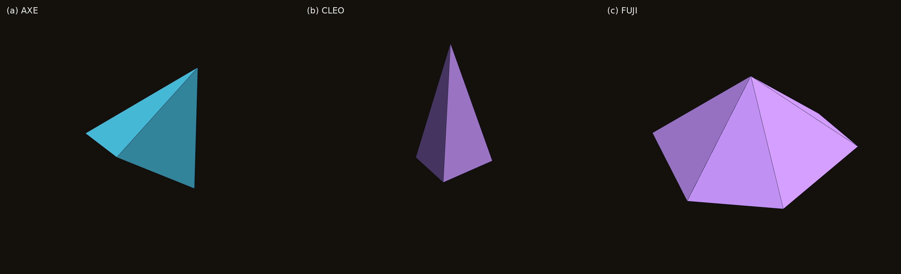
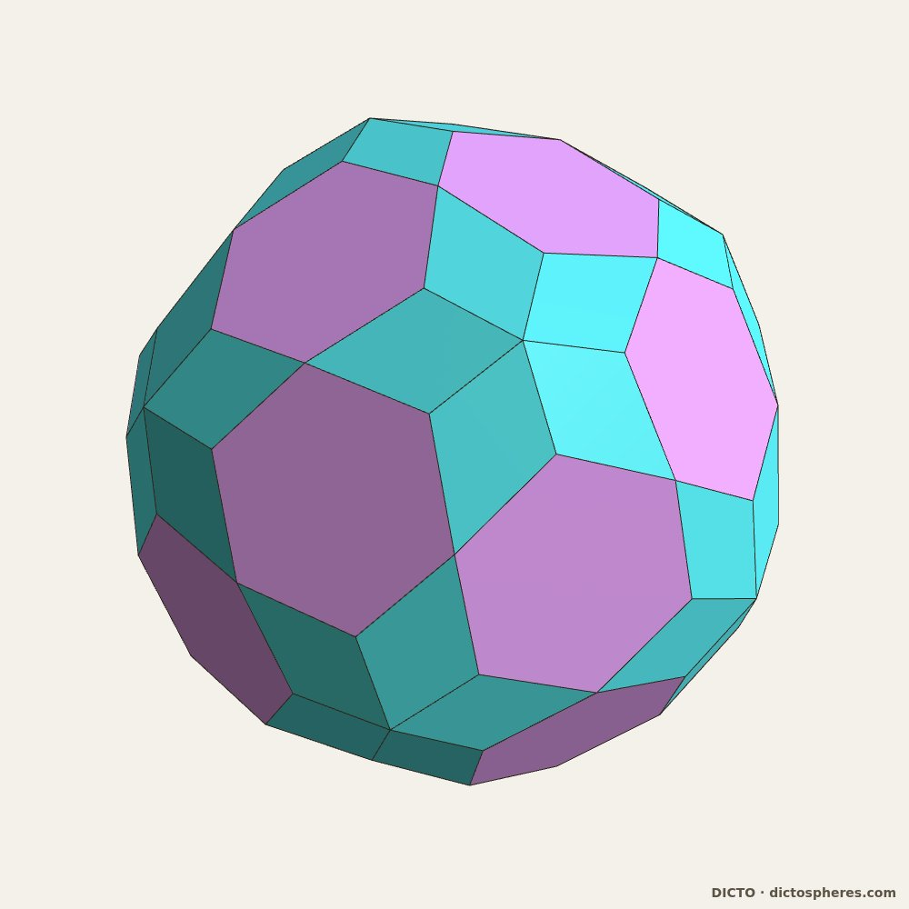
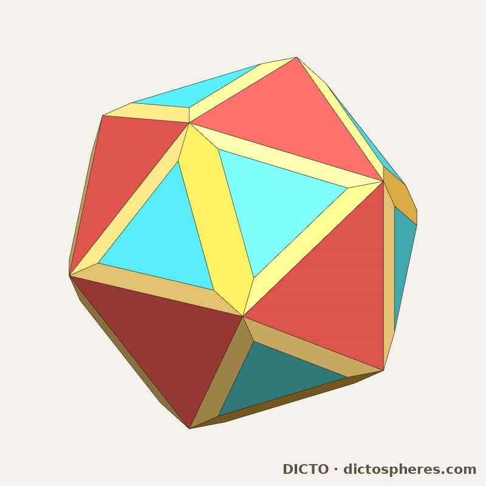
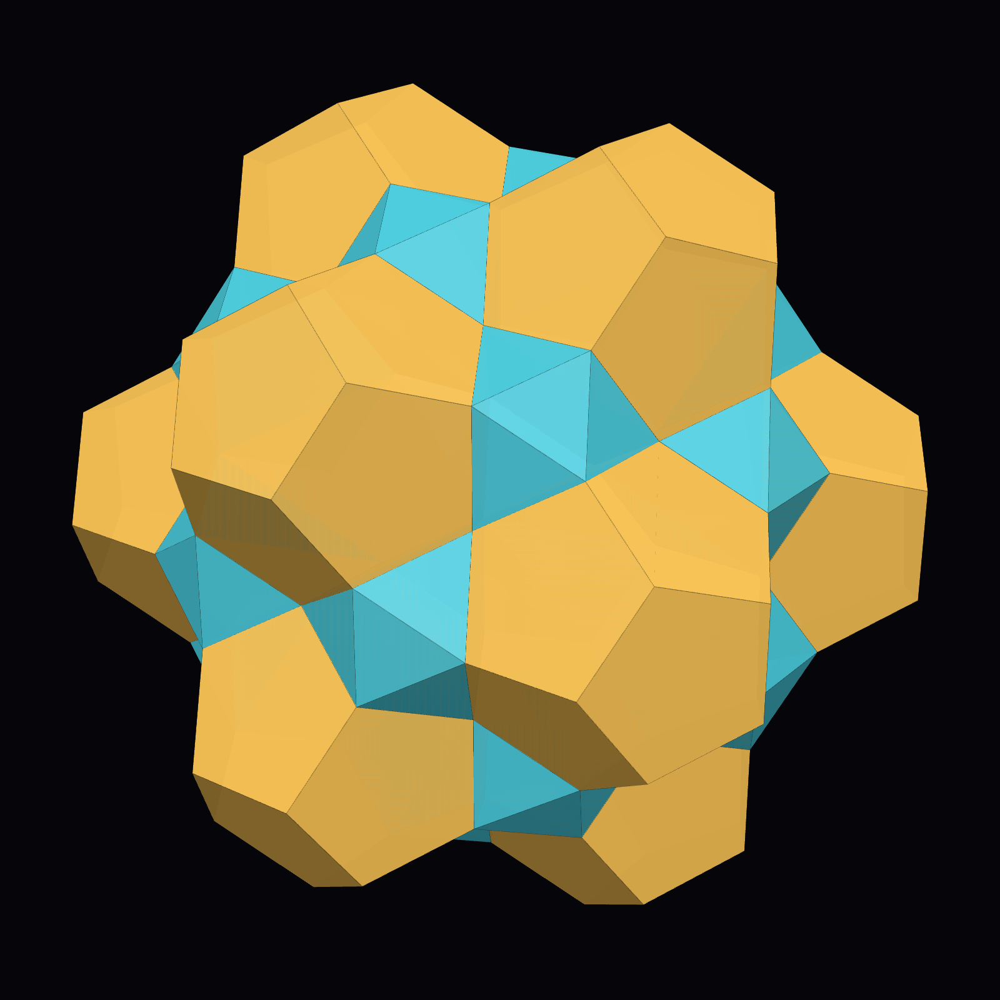
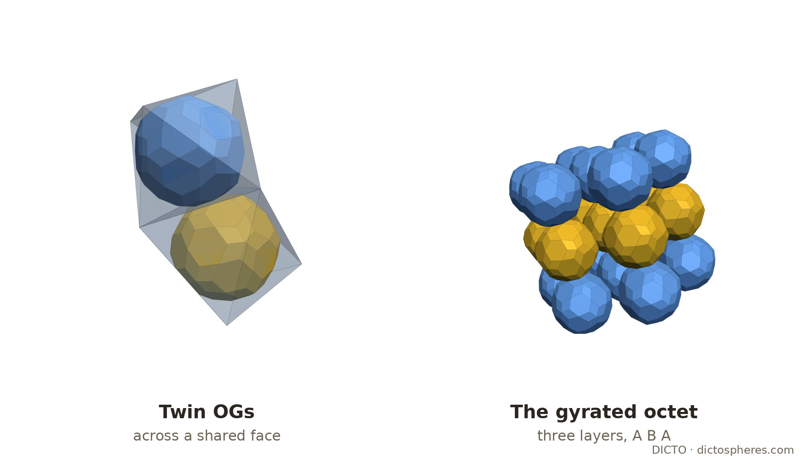
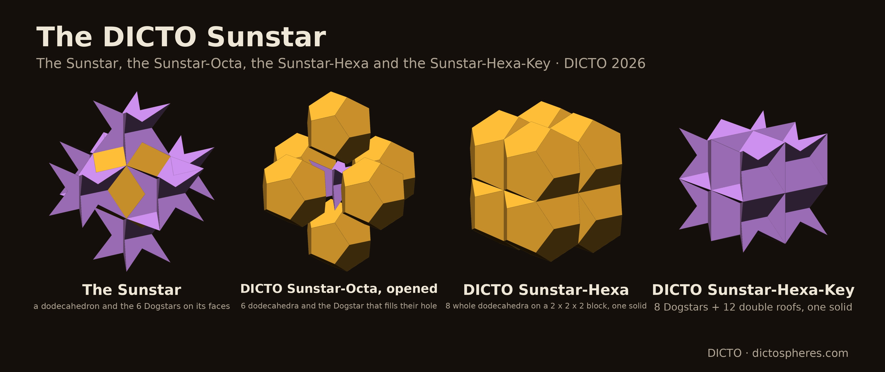
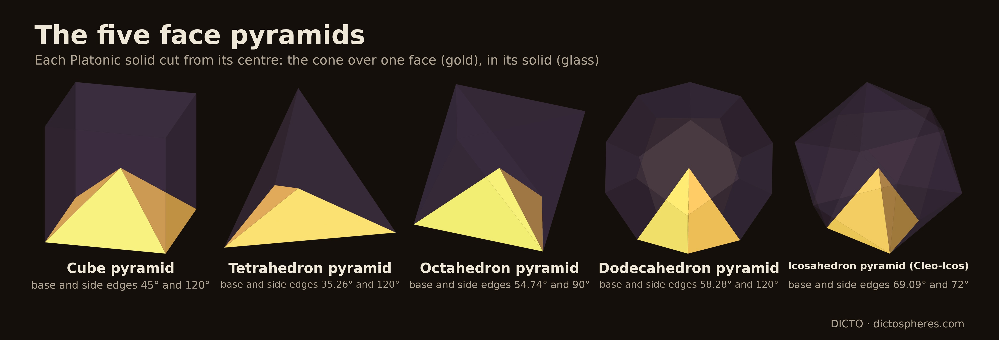
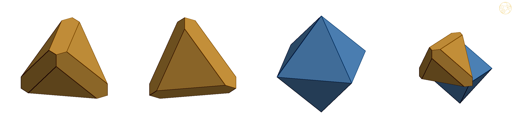
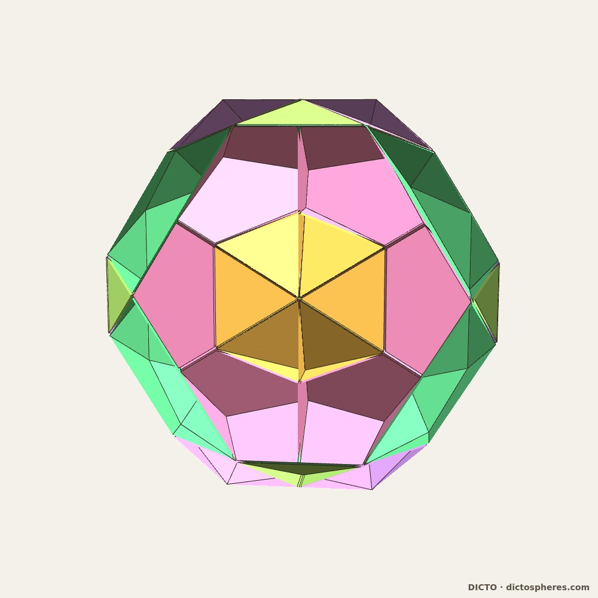

جهانی را در دانهای شن دیدن و بهشتی را در گلی وحشی، بیکرانگی را در کف دستت نگه داشتن و ابدیت را در یک ساعت.
ویلیام بلیک، «پیشگوییهای معصومیت»
مقالهها، برنامهها و دادههای این اثر آزادانه قابل استفادهاند؛ همهٔ آنها با دسترسی آزاد، تحت مجوز CC BY-SA 4.0، منتشر شدهاند و خواندن، همرسانی و ساختن بر پایهٔ آنها آزاد است.
کوانتومهای فضا
یک مانیفست
آثار هندسی DICTO
DICTO
هنرمند، اوساکا، ژاپن · contact@dictospheres.com · https://dictospheres.com
همهٔ آثار، یافتهها و نامها از آنِ DICTO است. محاسبه، بررسی و پیشنویس با همکاری Claude (Anthropic).
ترجمه با همکاری Claude (Anthropic)
مجوز CC BY-SA 4.0
کتاب · جلد I (ترجمهٔ فارسی) · نسخهٔ 1 · 7 نوامبر 2026 · DICTO DOI: 10.5281/zenodo.24037666 · اصل انگلیسی (نسخهٔ 2.1): 10.5281/zenodo.23754454
جلد II: «فرهنگ اتمهای DICTO — کوانتومهای فضا II»، فهرست همهٔ اتمها، دادهها اثر به اثر، و شکلهای شناختهشده و بازیافته (DICTO DOI: 10.5281/zenodo.23966395).
تقدیم به پدرم، آلن بیکر
فهرست مطالب
آنچه این اثر در بر دارد درآمد: کوانتومهای فضا 73 اثر: 71 مقاله در شش فصل، سپس یافتههای Kaleidohedra و مجموعهداده (شمارهها همان شمارههای مقالهها در dictospheres.com هستند) در جلد II، «فرهنگ اتمهای DICTO — کوانتومهای فضا II»: فهرست همهٔ اتمها، دادهها اثر به اثر، و شکلهای شناختهشده و بازیافته
اتمها
جسمهای منفرد، هر یک قطعهای دقیق و تازه.
#18هکسای DICTO
#19AXE، CLEO و FUJI
#20خانوادهٔ FUJI
#28صدودووجهی بریدهبیستوجهی DICTO
#31هشتادوجهی DICTO
#31aستارهپیکر OCD از DICTO
#34aصدودو-هشتادوجهی DICTO
#35aمیانشصتوجهی DICTO
#35bبازسیوجهی DICTO
#41گوهر DICTO
#45جسمهای افلاطونی رولو
#49قضیهٔ کشش چندوجهیها
#88هر جسم افلاطونی دقیقاً دو برش طلایی دارد
—همهٔ اتمها: فهرست در جلد II است
پیوندها
قطعهها چگونه با هم فضا را پر میکنند: مجموعهها، چینشها و شبکههای دقیق.
#8سلول اقلیدس–کپلر–پاچولی
#13دوازدهوجهی-13 DICTO
#14ستارهٔ DICTO
#17پوشهای کاگومه
#25کرهوار-13 RD از DICTO
#26ATOM-13×13 از DICTO
#30یک ستون فقرات فیبوناچی
#36پیروکلر طلایی بودی
#37هشتادوجهی DICTO بر خرپای اکتت
#37aهشتادوجهی DICTO بر اکتت چرخیده
#40خانوادهٔ OG از DICTO بر هر انباشت
#42خورشیدستارهٔ DICTO
#44هرم ارسطو
#47هر آمیزهای از جسمهای افلاطونی فضا را پر میکند
#48شکافت طلایی: بیستوجهیها، نازادهها و AXE به دو فضاپرکن محدب بدل میشوند
#51پیوند دلوسی: شمشون، دلیله و اکتت میان دوازدهلوزوجهی کپلر و مکعب
#50هر کدام یک حرکت: فضاپرکنهای کلاسیک برشوچسب، بهدقت ساختهشده
قطعههایی که به پوستههایی تودرتو گرداگرد یک هسته بسته میشوند، و هر لایه دقیقاً پر شده است.
#22زنجیرهٔ کارما
#23کرههای دارما
#24دانهٔ بودی
#27به دام انداختن میانهها
#29تئایتتوس
#34نیاکان
#35وجرهیانه
چرخهها
قاعدههایی که یک پوسته را به پوستهٔ بعدی بدل میکنند و بازمیگردند، با پایان یا بیپایان.
#32پوستههای وارونه: کرههای دارما، درون به بیرون
#33دوبینی – هر دو چرخه در یک فضا
#38PiTet فراگیر: گزارهٔ PiTet از DICTO
#38aچرخهٔ کپلر–پوآنسو–UP از DICTO
#39خانوادهٔ OG از DICTO: چهار گام بالا و چهار گام پایین
#43هستههای کیوشیندو از DICTO
#54یک دور یک گنومون است
#78ستارهٔ بیستوجهی بریدهشده (ستارهٔ TI)
انباشت
هر چینش فشرده از فهرستی متناهی از قطعهها، و دو کاشیای که آن را میسازند (بهتفصیل در «HexOct: قانون ششگوشگی»).
#57قاعدهٔ نیمهها
#58از اکتت تا هر انباشت: تار پیوندها
#60پیروکلر ژانوس c/h از DICTO
#61قاعدهٔ جابهجایی
#64قاعدهٔ جابهجایی در بلورها
#66کانون
#67انباشتهای تصادفی و نقصهای انباشت
#69انباشت فیبوناچی
#68پلیتایپهای واقعی و قانون ششگوشگی
#70مواد واقعی II: آنتروپی و فشار
#71مواد واقعی III: آلیاژها و هیدروژن
#72مواد واقعی IV: اکسیدها
#73مواد واقعی V: یخ، الماس و نانوسیمها
#74یخ اسپینی و آهنرباهای کاگومه بر هر انباشت
#75دو کاشی برای هر انباشت: HexOct
چهار بعد
ملکههای سفید و سرخ از راه سایهها و مقطعهایشان (بهتفصیل در «آلیشیا در سرزمین عجایب: ملکههای سرخ و سفید»)، و برشهای طلایی در میان مقطعها.
#62سایههای بعد چهارم
#63600-خانهٔ ملکهٔ سفید
#76میان ملکهها
#65120-خانهٔ ملکهٔ سرخ
#89هر پنج جفت طلایی مقطعهایی از جسمهای چهاربعدیاند
یافتهها و برنامهها
—Kaleidohedra اثر DICTO
—جسمهای DICTO: هندسهٔ دقیق (مجموعهداده)
—شکلهای شناختهشده و بازیافته در این اثر: در جلد II
ترتیب و فصلها مطابق «DICTO: مجموعهٔ آثار هندسی» (DICTO DOI: 10.5281/zenodo.23345699)، با افزودهشدن فصلهای انباشت و چهار بعد. آثار از #52 به بعد به کوتاهی روایت شدهاند؛ کتابهای «HexOct»، «چرخهٔ طلایی» و «آلیشیا در سرزمین عجایب» آنها را بهتفصیل در بر دارند.
آنچه این اثر در بر دارد
فضا از قطعهها ساخته شده است.
هر قطعه باید دقیق باشد: شکلی که بتوانید بسازید و در دست بگیرید، بررسیشده تا آخرین رأس.
یک مجموعهٔ کوچک کافی است: مشتی شکل، پوستهها و فضاهایی بیپایان میسازد.
نسبت طلایی تعیین میکند که پوستهها کی بسته شوند.
قطعهها در پیوندها به هم میپیوندند، و تار پیوندها به اندازهٔ خودِ قطعهها واقعی است.
نظم تکرارشونده و نظم هرگزتکرارنشونده در قطعهها به هم میرسند.
همهچیز باز است: برنامهها، دادهها و مقالهها، آزاد برای استفاده و برای ساختن بر پایهٔ آنها.
DICTO
درآمد
کوانتومهای فضا
آیا فضا تا ژرفترین لایهاش مانند آب هموار است؟ یا از قطعهها ساخته شده است، همانگونه که دیوار از سنگها ساخته میشود؟ مردم دو هزار و پانصد سال است که این را میپرسند. این کتاب پرسش را به معنای واقعی کلمه میگیرد. در پی دستههای دقیقی از قطعههای جامد است که بی هیچ شکافی کنار هم جا میافتند: در پوستهها، در چرخهها و در سراسر فضا.
آنچه در پی میآید شجرهنامهٔ یک ایده است، نه ادعایی دربارهٔ فیزیک. قطعههای این کتاب شکلهاییاند که میتوانید بسازید و در دست بگیرید. آنها پرسشی را با اندیشمندان کهن و با علم مدرن در میان میگذارند: کوچکترین قطعههای فضا کداماند و چگونه به هم میپیوندند؟
اتمها و فضای تهی میان آنها
در یونان باستان، لوکیپوس و دموکریتوس میآموختند که جهان از قطعههایی ریز و بُرشناپذیر، یعنی اتمها، ساخته شده است که در فضای تهی حرکت میکنند. اتمها تنها در شکل، آرایش و جایگاهشان با هم فرق دارند. لوکرتیوس، شاعر رومی، این آموزه را به نظم درآورد: «هیچ چیز بهخودیِ خود وجود ندارد جز اتمها و خلأ». پس اتمها قطعه بودند. اما هیچکس نگفت چه شکلهایی داشتند.
مجموعهٔ قطعههای افلاطون
افلاطون به آنها شکل داد. در رسالهٔ «تیمائوس»، چهار عنصر چهار جسم منتظماند. آتش چهاروجهی است، هوا هشتوجهی، آب بیستوجهی و خاک مکعب. همهٔ وجههایشان تنها از دو گونه مثلث قائمالزاویه ساخته شدهاند. پنجمین جسم منتظم، دوازدهوجهی، «برای کل» به کار رفت. این نخستین مجموعه برای ساختن ماده بود: دستهای کوچک از قطعههای دقیق که همه چیز از آنها سرهم میشود.
هرمهای ارسطو
ارسطو پاسخ داد که اگر اتمها جامد باشند، باید فضا را بی هیچ شکافی پر کنند. او نوشت («در باب آسمان» III.8) که از میان جسمها دو تا چنین میکنند: هرم و مکعب. نگفت کدام هرم. شارحانش آن را چهاروجهی منتظم دانستند، که بهتنهایی شکاف کوچکی بر جا میگذارد، و قرنها بر سر آن بحث کردند. اگر سخنش را همانگونه که نوشت بخوانیم، حق با او بود: هرمهای بسیاری فضا را پر میکنند. مقالهٔ #44 ما، «هرم ارسطو»، اثبات میکند کدام هرمهایی که از مرکز جسمهای افلاطونی بریده میشوند چنین میکنند. یک بعد بالاتر، حتی چهاروجهی منتظم نیز بسته میشود: بیست عدد گرد هر رأس 600-خانه (#63). و #65، «120-خانهٔ ملکهٔ سرخ»، اثبات میکند که هر پنج هرم او هستههای جسمهای منتظم چهاربعدیاند، دقیقاً با همان تناسبهای او.
چینشهای کپلر
یوهانس کپلر در 1596 پنج جسم منتظم را میان کرههای سیارهها درهمنشاند. در 1611، در کتاب کوچکی دربارهٔ دانهٔ برف ششگوشه، دانهٔ برف را با شیوهٔ چیدهشدن واحدهای کوچک هماندازه کنار هم توضیح داد. این همان پرسش مشهور شد که گویهای هماندازه را تا چه حد فشرده میتوان روی هم چید. مقالهٔ #8 ما، «سلول اقلیدس–کپلر–پاچولی»، هر پنج جسم منتظم را درهمنشسته بر 13 نقطه از یک سلول تکرارشونده مییابد.
کوانتومهای علم مدرن
ماکس پلانک در 1900 دریافت که انرژی بهصورت مقدارهای کوچک و ثابت، یعنی کوانتومها، میآید. در یکی از نظریههای مدرن گرانش، به نام گرانش کوانتومی حلقهای، خودِ فضا نیز چنین است. کارلو روولی و لی اسمولین در 1995 نشان دادند که در این نظریه مساحت و حجم در گامهای جدا از هم میآیند، نه بهطور پیوسته. اوجنیو بیانکی، پیترو دونا و سیمونه اسپتزیاله در 2011 نشان دادند که هر مقدار کوچک حجم را میتوان جسم کوچکی با وجههای تخت خواند که اندازهها و جهتهای وجههایش آن را تعیین میکنند. فضا توری از چنین جسمهایی میشود که وجه به وجه به هم پیوستهاند. خودِ عبارت «کوانتومهای فضا» از این نظریه میآید (روولی و اوپادیا، 1998).
تفاوتی هست که باید صادقانه گفت. در آن نظریه دو قطعهٔ همسایه وجهی با مساحت یکسان دارند، اما در حالت کلی نه با شکل یکسان (فریدل و اسپتزیاله، 2010). قطعههایشان لازم نیست با هم جفت شوند. قطعههای ما همیشه دقیقاً، رأس به رأس، جفت میشوند. رویکردهای دیگر، مانند مجموعههای علّی، فضا و زمان را از نقطهها میسازند نه از جسمها.
پس این کتاب هیچ ادعایی دربارهٔ فیزیک ندارد. در پرسش و در صورت شریک است: کوچکترین قطعههای دقیقی که فضا را میتوان از آنها ساخت کداماند، و چگونه به هم میپیوندند؟
مرکز: کوانتومهای هر چینش فشرده
پرتقالها را در جعبهای روی هم بچینید؛ هر لایهٔ تازه در گودیهای لایهٔ زیرین مینشیند، به یکی از دو شیوه. یک انتخاب را تکرار کنید و چیدمان مکعبی است؛ دیگری را تکرار کنید و ششگوشی است؛ آنها را به هر ترتیبی بیامیزید و باز هم چینشی بینقص است. طبیعت بسیاری از این آمیزهها را به کار میبرد: در فلزها، یخ، سیلیسیم کاربید و اکسیدهای باتریها.
قاعدهٔ نیمههای DICTO (Rule of Halves، #57) نشان میدهد که لایهها هر طور که انباشته شوند، متناوب یا نامتناوب، فضای میان گویها میان قطعههایی از تنها شمار متناهی گونه بخش میشود، که هر یک بهتمامی یا به نیمه از دو انباشت خالص وامگرفته است. این فهرستی متناهی از کوانتومها برای هر چینش فشردهای است که وجود دارد: روشنترین پاسخی که این اثر به آن پرسش کهن میدهد. جایی که لایهای مکعبی به لایهای ششگوشی میرسد، قطعه نیمی از یکی و نیمی از دیگری است: قطعههای ژانوس c/h (Janus c/h pieces) بر آستانهٔ میان دو نظم ایستادهاند. قطعهها تنها با جابهجایی تغییر میکنند (قاعدهٔ جابهجایی، Swap Rule، #61)، پس هر شمارش و هر حجم خطی راست بر حسب یک عدد است، یعنی سهم لایههای ششگوشی (قانون ششگوشگی، Hexagonality Law، #66)، و بلورهای واقعی از آن پیروی میکنند (#67–#74). و این فهرست در تنها دو کاشی بسته میشود، یکی مکعبی و یکی ششگوشی، که هر انباشتی را به هر ترتیبی میسازند: HexOct (#75). قانون قطعهها را داد؛ قطعهها قانون را اثبات میکنند.
شش فصل
اگر اینگونه خوانده شوند، آثار در شش فصل جای میگیرند.
اتمها جسمهای تکیاند، هر یک قطعهای دقیق و تازه: هشتادوجهی DICTO (DICTO Ogdoecontahedron، OG)، صدودووجهی (Hecatodihedron)، گوهر (Jewel)، هکسا (Hexa)، AXE، CLEO و FUJI، جسمهای افلاطونی رولو (Reuleaux Platonic solids)، و شش جسم DICTONIC (بیستتبر (Icosaxes)، تبر نازاده (Unborn Axes)، تبر گوهر نیلوفر (Lotus Jewel Axes)، دوازدهتبر (Dodecaxes)، شمشون (Samson) و دلیله (Delilah)). شکلهای دقیقشان در مجموعهدادهٔ «جسمهای DICTO: هندسهٔ دقیق» گرد آمده است، که در آن هر جسم DICTO شمارهٔ D ماندگاری دارد. فهرست همهٔ اتمها، 132 شکل تازهٔ DICTO و شکلهای شناختهشدهای که این اثر با آنها میسازد، جلد II است: «فرهنگ اتمهای DICTO — کوانتومهای فضا II».
پیوندها دربارهٔ ایناند که قطعهها چگونه با هم فضا را پر میکنند: مجموعهها، چینشها و شبکههای دقیق، از سلول اقلیدس–کپلر–پاچولی تا OG بر هر انباشت. روشنترین نمونهها سه پیوند DICTONIC (طلایی، کلیددار و دلوسی) هستند: جفتهایی از جسمها که با هم فضا را پر میکنند. یک پیوند DICTONIC یکی از این جفتهاست؛ فصل پیوندها همهٔ شیوههای پیوستن قطعهها را در بر دارد.
پوستهها قطعههاییاند که گرد یک هسته در لایههایی درهمنشسته بسته میشوند، مانند پوستههای پیاز، و هر لایه دقیقاً پر شده است: زنجیرهٔ کارما (Chain of Karma)، کرههای دارما (Spheres of Dharma)، دانهٔ بودی (Bodhi Seed) و تئایتتوس (Theaetetus).
چرخهها قاعدههاییاند که یک پوسته را به پوستهٔ بعدی بدل میکنند و دور میزنند و بازمیگردند، با پایان یا بیپایان: PiTet فراگیر، گامهای خانوادهٔ OG، هستههای کیوشیندو (Kyushindo Cores) و پوستههای درون به بیرون شده. پوستهها و چرخهها بهتفصیل در کتاب «چرخهٔ طلایی» آمدهاند.
انباشت همان مرکزی است که در بالا آمد: قاعدهٔ نیمهها، قاعدهٔ جابهجایی، قانون ششگوشگی در مواد واقعی، و دو کاشی HexOct، که بهتفصیل در کتاب «HexOct: قانون ششگوشگی» آمدهاند.
چهار بعد از راه سایهها و مقطعهایشان دیده میشوند: 600-خانه و 120-خانه، که DICTO آنها را ملکهٔ سفید (White Queen) و ملکهٔ سرخ (Red Queen) نامید، و بهتفصیل در کتاب «آلیشیا در سرزمین عجایب: ملکههای سرخ و سفید» آمدهاند.
میان تکرارشونده و هرگزتکرارنشونده
برخی الگوها تکرار میشوند، مانند کاشیهای کف حمام. برخی دیگر هرگز تکرار نمیشوند و با این همه کاملاً منظماند، مانند کاشیکاری پنروز. آثار این کتاب با همان قطعهها هر دو را میسازند.
در بیشتر تاریخ، نظم در ماده به معنای تکرار بود. بلور یک سلول کوچک بود که بیپایان رونوشت میشد، و تقارن پنجگانه در آن ناممکن پنداشته میشد. سپس دان شختمان در 1982 آلیاژی فلزی یافت که الگوی پراکندگیاش تقارن پنجگانهٔ تیزی نشان میداد. این شبهبلورها، منظم اما هرگزتکرارنشونده، در 2011 جایزهٔ نوبل را برای او به ارمغان آوردند. ماده دو گونه نظم دارد، و پرسش این شد که این دو چگونه به هم میرسند.
قطعههای این کتاب بر همین مرز نشستهاند. یک مجموعهٔ دقیق هم اکتت تکرارشونده را میسازد و هم بلوری را که هرگز تکرار نمیشود، در الگوی فیبوناچی (#40، «خانوادهٔ OG از DICTO بر هر انباشت»). در «یک ستون فقرات فیبوناچی» (#30)، پنج چینش تکرارشوندهٔ OG گرد یک محور پنجگانه به هم میرسند. رونوشتهایی که باید در امتداد آن محور برداشته شوند دقیقاً زنجیرهٔ فیبوناچی را میسازند، سادهترین نظمی که هرگز تکرار نمیشود. پوستههای طلایی کرههای دارما (#23) تنها با بزرگتر شدن به همان ضریب طلایی در هر دور تکرار میشوند. در انباشت فیبوناچی (#69) قطعههای هر چینش فشرده در تناسبهای طلایی میآیند، و دو کاشی HexOct انباشتهای تکرارشونده و هرگزتکرارنشونده را یکسان میسازند، بسته به ترتیبی که چیده میشوند. یک مجموعه، دو گونه نظم: خودِ قطعهها پلاند.
آنچه قطعهها نشان میدهند
چهار چیز بارها و بارها بازمیگردد. یک مجموعهٔ کوچک کافی است: مشتی شکل دقیق پوستهها و فضاهایی بیحد میسازد، و برای چینش فشرده این مجموعه متناهی و کامل است، تا حد دو کاشی. نسبت طلایی هر جا که تقارن پنجگانه باشد پدیدار میشود، و تعیین میکند که پوستهها کی بسته شوند. همچنین به هر جسم افلاطونی دقیقاً دو برش طلایی میدهد، و همان ژرفاهای طلایی بهصورت مقطعهای جسمهای چهاربعدی بازمیگردند (#88، #89). قطعهها دو گونه نظم در ماده را به هم میپیوندند، تکرارشونده و هرگزتکرارنشونده. و همان قطعهها از فضای ما فراتر میروند: پنج هرمی که ارسطو دربارهشان استدلال کرد هستههای جسمهای منتظم چهاربعدیاند.
پیشینیان حدس زدند که فضا از قطعههای شکلدار ساخته شده است، و فیزیک مدرن به این ایده بازگشته است. این آثار چنین قطعههایی را بهدقت میسازند و میآزمایند، و هر مقالهای که پشت این کتاب است بهدقت بررسی شده است.
منابع درآمد: Plato, Timaeus (tr. B. Jowett); Lucretius, On the Nature of Things (tr. W. E. Leonard); Aristotle, On the Heavens III.8 (tr. J. L. Stocks); J. Kepler, Mysterium Cosmographicum (1596) and Strena seu de nive sexangula (1611); D. Shechtman, I. Blech, D. Gratias, J. W. Cahn, Phys. Rev. Lett. 53 (1984) 1951; C. Rovelli, L. Smolin, Nucl. Phys. B 442 (1995) 593; L. Freidel, S. Speziale, Phys. Rev. D 82 (2010) 084040; E. Bianchi, P. Doná, S. Speziale, Phys. Rev. D 83 (2011) 044035; S. Surya, Living Rev. Relativ. 22 (2019) 5. بازنوشته از جستار «کوانتومهای فضا» در «DICTO: مجموعهٔ آثار هندسی» (DICTO DOI: 10.5281/zenodo.23345699). مجوز CC BY-SA 4.0.
فصل 1 · اتمها · #18
هکسای DICTO
مکعبی ساخته از هشت گوهر، همتای آن هکسا-کلید، و صفحهشطرنجیای که فضا را پر میکند
اگر آن را در دست میگرفتید
مکعبی در دست میگرفتید با 24 بام کوتاه بر وجههایش که رو به بیروناند. به تعبیر مقاله، «زیبا و استوار، گویی از چوب تراشیده شده» به نظر میرسد. سطحش 24 پنجرهٔ لوزیشکل نشان میدهد، که هر یک لوزی پهن کاشیکاری پنروز است.
از هشت گوهر DICTO ساخته شده است که بر یک بلوک دو در دو در دو نشانده شدهاند و در درون از یکدیگر میگذرند. بهعنوان یک جسم، حجمی برابر با شش و دوسوم گوهر دارد.
شکل 18. هکسای DICTO: هشت گوهر هکسای DICTO (گوهرهای دقیق DICTO بر یک بلوک 2 × 2 × 2)، بدون تبدیل برشی. برگرفته از شکل 1 مقاله.
از کجا آغاز شد
گوهر DICTO از سلول اقلیدس–کپلر–پاچولی (#8) میآید. دوازدهوجهی منتظم این سلول را بگیرید، که مکعبی است با شش بام اقلیدس بر آن. هشتوجهیهای ستارهای ستارهشکلِ شش سلول همسایهاش را از آن بتراشید. آنچه میماند تمام مکعب و دوسوم هر بام را نگه میدارد، و سطحش دوازده لوزی پنروز نشان میدهد، یکی بر هر یال مکعب: پنجرهها. گوهرها و هشتوجهیهای ستارهای، که مانند خانههای سیاه و سفید صفحهٔ شطرنج چیده شوند، با هم فضا را پر میکنند.
مکعبِ هشت گوهر را در جهان Studies برنامهٔ Kaleidohedra دیدیم، با حجمی نزدیک به هشت گوهر.
آنچه یافتیم
هیچ اندازهای از تبدیل برشی هشت گوهر جدا را وادار نمیکند که وجه به وجه بهصورت یک مکعب به هم برسند. هکسا تنها بهصورت هشت گوهر دقیقِ همپوشان وجود دارد. فشردنِ خودِ گوهرها پنجرهها را از میان میبرد، پس آن راه نگه داشته نشد.
هکساها تنها پنجره به پنجره به هم میرسند، دو پنجرهٔ کامل با هر همسایه. در الگوی مکعبی مرکزوجهی هر هکسا 12 همسایه دارد. فضایی که میان آنها میماند یک جسم یگانه است، که DICTO آن را هکسا-کلید (Hexa-Key) نامید: هشت هشتوجهی ستارهای و دوازده بام دوتایی. سپس هکساها و هکسا-کلیدها مانند صفحهٔ شطرنج فضا را پر میکنند، پنج بخش به سه بخش از نظر حجم، درست همانگونه که گوهرها و هشتوجهیهای ستارهای یک تراز پایینتر چنین میکنند. تقارن دلنشینی در کار است: هکسا هشت مکعب است با 24 بام رو به بیرون، و هکسا-کلید هشت هشتوجهی ستارهای است با همان 24 بام رو به درون.
هکسا همچنین بهپاکیزگی از هم باز میشود، به دو شیوه: به 8 مکعب و 24 بام، یا به 4 گوهر کامل و 4 گوهر پیراسته. هشت هکسا میتوانند گرد یک هکسا-کلیدِ محصور خوشه شوند، که همان لوزوجهی گوهرِ پوشهای کاگومه (Kagome Hulls) است در یک تراز بالاتر. در یک تور الماسی، هکساها و هشتوجهیهای ستارهای فضا را پر میکنند بی آنکه گوهر تکیای باقی بماند. و هیچ چیز نمیچرخد: هیچ اتصالی در این چینشها را نمیتوان چرخاند و همچنان جفت ماند.
آنچه میافزاید
پر شدن فضا با هشتوجهیهای ستارهای و هشتوجهیها شناخته شده است، و همچنین مکعب، هشتوجهی و هشتوجهی ستارهای درون دوازدهلوزوجهی. لوزی پنجره یکی از ده قطعهٔ نظام ساختمانی لالوانی (یک ثبت اختراع از 1988) است، اما گوهر چنین نیست: دیوارههایش در صفحههای هشتوجهیهای ستارهای قرار دارند، و در آن ثبت اختراع نه هشتوجهی ستارهای هست و نه تراشی. مکعبی ساخته از دوازدهوجهیهای تراشیده، یا این بلوکِ هشتتایی را، نه در جستوجوی وب یافتیم و نه در کتابخانهٔ مرجع DICTO. چنانکه مقاله میگوید، این دلیل تازگی نیست، و این گزارش هیچ ادعای تقدمی ندارد. هکسا را میتوان در Polyhedraverse ساخت و در جهان Stella–Jewel برنامهٔ Kaleidohedra دید.
دادهها: جلد II، A.18 (حجمها، تقسیمها، خوشهها و 16 بررسی).
هکسا و نامهایش از آنِ DICTO است. مطالعهٔ طراحی و بررسی با همکاری Claude (Anthropic) در کتابخانهٔ متنباز krp-core. نخستین انتشار درون Kaleidohedra v2026.10.11-octet. برگرفته از مقالهٔ #18، نسخهٔ 2، 20 اکتبر 2026. مجوز CC BY-SA 4.0.
DICTO DOI: 10.5281/zenodo.23376320
فصل 1 · اتمها · #19
AXE، CLEO و FUJI
سه قطعهٔ میانجای بیستوجهی
اگر آنها را در دست میگرفتید
سه قطعهٔ کوچک در دست میگرفتید. AXE به شکل سرِ تبر است: دو مثلث متساویالاضلاع که مانند لولا به هم پیوستهاند، و یال تیز تیغهٔ آن است. CLEO هرمی باریک است که نامش از سوزن کلئوپاترا، اُبلیسکِ لندن، گرفته شده است. FUJI هرمی ششضلعی است به شکل کوه فوجی؛ رنگش رنگ گل فوجی، یعنی ویستریای ژاپنی، است.
قاعدهٔ FUJI ششضلعیای است که همهٔ زاویههایش برابرند، اما ضلعهای بلند و کوتاهش یک در میان میآیند. هر شش یال مایلش همطولاند.

شکل 19.AXE، CLEO و FUJI، در تنها مقیاسی که در آن دانهٔ نیلوفر را پر میکنند. برگرفته از شکل 1 مقاله.
مسئلهای که حل میکنند
دوازده گوی بهخوبی گرد یک گوی جا میگیرند، و دوازده مرکزشان رأسهای یک بیستوجهیاند. فرانک در 1952 نشان داد که این خوشهٔ سیزدهاتمی از قطعههای متناظر در بلورهای معمولی پایدارتر است. اما نمیتوان آن را در سراسر فضا ادامه داد: بیستوجهیهایی که گرد یکدیگر نهاده شوند همیشه شکاف بر جا میگذارند. دو بیستوجهی که در امتداد یک یال به هم برسند در هر سوی آن یک گوه فضای تهی بر جا میگذارند.
خوشهٔ DICTO، یعنی دانهٔ نیلوفر (Lotus seed)، دوازده بیستوجهی را گرد یک بیستوجهی کوچک مینهد، و هر شکاف را تنها با سه گونه قطعه پر میکند. سی AXE شیارهای بیرونی را میبندند و سی تای دیگر شیارهای درونی را. بیست FUJI گوشههای بیرونی را پر میکنند، جایی که سه بیستوجهی به هم میرسند. بیست CLEO گوشههای درونی را گرد مرکز کوچک پر میکنند. حاصل، در 113 قطعه، دقیقاً یک بیستوجهی منتظم بزرگ است.
نخستین بار آن را در 5 اکتبر 2026 در برنامهٔ Polyhedraverse، هنگام کار بر مسئلهای دربارهٔ دوازدهوجهی، به شیوهای سادهتر ساختیم: یک دوازدهوجهی، یک بیستوجهیِ بییککلاهک (یک J11) بر هر یک از 12 وجه آن، سپس 30 AXE و 20 FUJI. این 63 قطعه است، و آسانترین راه برای ساختن دانهٔ نیلوفر با دست. مقاله گستردههای قابل چاپ آن را همراه دارد.
آنچه یافتیم
معلوم شد که AXE و CLEO دو تا از کاشیهای موسری–سادوکاند. سادوک و موسری این کاشیها را برای توصیف نظم بیستوجهی در مواد واقعی ساختند. اینجا همان کاشیها خودبهخود، بهصورت قطعههای میانجای خوشهای ساخته از بیستوجهیهای کامل، پدیدار میشوند.
FUJI تازه است. ثابت میکنیم که نمیتوان آن را به کاشیهای موسری–سادوکِ هماندازه با خودش یا بزرگتر بُرید. یک اثبات از ناوردای دن بهره میگیرد، کمیتی که برش و چسباندن نمیتواند آن را تغییر دهد. اثبات دیگر از زاویههای قاعدهٔ ششضلعی FUJI بهره میگیرد. اینکه آیا کاشیهای کوچکتر میتوانند آن را بسازند باز گذاشته شده است.
این سه قطعه در سراسر کار DICTO پدیدار میشوند. 20 CLEO را به یک بیستوجهی کوچک بیفزایید و دوازدهوجهی ستارهای بزرگ کپلر به دست میآید. 30 AXE بیفزایید و دوازدهوجهی کاویده به دست میآید. 12 کلاهک بیفزایید و دوازدهوجهی را دارید: زنجیرهٔ دوازدهوجهی (Dodecahedral Chain)، از بیستوجهی تا همتایش از راه دو جسم ستارهای. زنجیرهٔ کارما (#22) دانهٔ نیلوفر را در هر مقیاسی تکرار میکند، و AXE، CLEO و FUJI در هر گام کامل میمانند.
آنچه میافزاید
ر. و. گری در 2002 قفس دوازده بیستوجهی را توصیف کرد، و یادآور شد که آنها طرح یک بیستوجهی بزرگتر را میسازند؛ او شکافها را پر نکرد. AXE و CLEO همان کاشیهای موسری–سادوکاند. کوجا و همکارانش یادآور میشوند که این کاشیها بهتنهایی نمیتوانند بیستوجهی را فراتر از یک گام طلایی رشد دهند. با بیستوجهیهای کامل و FUJI در گوشههایشان، دانهٔ نیلوفر فراتر میرود، و زنجیرهٔ کارما بیپایان ادامه مییابد.
دادهها: جلد II، A.19 (یالها و حجمهای قطعهها، زاویهها، دو پرکردن، اثباتهای FUJI).
دانهٔ نیلوفر، ساخت 63قطعهای، UNITY، زنجیرهٔ کارما، ستارهپیکر-اکلیل (Stella-Corona) و نامهای AXE، CLEO، FUJI، هاسو (Hasu)، تریسکلیون (Triskelion)، تریسکلیون ششضلعی (Triskelion Hex)، چشم درون (Inner Eye)، DESHI و شاه سکهها (King of Pentacles) از آنِ DICTO است. AXE و CLEO کاشیهای موسری–سادوک t6 و t4 هستند؛ آرایش DESHI از آنِ ر. و. گری است. محاسبه، بررسی و پیشنویس با همکاری Claude (Anthropic). برگرفته از مقالهٔ #19، نسخهٔ 3، 20 اکتبر 2026. مجوز CC BY-SA 4.0.
DICTO DOI: 10.5281/zenodo.23351291
فصل 1 · اتمها · #20
خانوادهٔ FUJI
هرمهایی بر مثلثهای بریدهشده، و جفتی تازه که فضا را پر میکند
اگر یکی را در دست میگرفتید
هرمی بر قاعدهای ششضلعی در دست میگرفتید. قاعده یک مثلث بریدهشده (truncated triangle) است: مثلثی که سه گوشهاش صاف بریده شدهاند، چنانکه ضلعهای بلند و کوتاه یک در میان میآیند و همهٔ زاویهها برابرند. هر شش یال مایل هرم برابرند. سه تا از وجههای جانبیاش مثلث متساویالاضلاعاند؛ سه تای دیگر باریکترند.
اکنون لغزندهای برای ضلعهای کوتاه تصور کنید. آنها را تا هیچ کوچک کنید و هرم یک چهاروجهی منتظم است. بگذارید تا هماندازهٔ ضلعهای بلند بزرگ شوند و هرم تخت میشود و در یک ششضلعی منتظم فرومینشیند. میان این دو، در یک تنظیم طلایی، FUJI است، قطعهٔ میانجای دانهٔ نیلوفر (#19). آن لغزنده خانوادهٔ FUJI است.
شکل 20. خانوادهٔ FUJI در یک مقیاس، با همهٔ یالهای جانبی برابر: از چهاروجهی، از راه FUJI، تا ششضلعی تخت. وجههای تیرهتر: سه مثلث متساویالاضلاع؛ روشنتر: سه مثلث متساویالساقین. برگرفته از شکل 2 مقاله.
از کجا آغاز شد
این شکل پیوسته پدیدار میشد. DICTO هنگام طراحی dictospheres، کرههایی چاپشده با چاپگر سهبعدی با 14 درگاه برای بطریهای PET، مثلثهای تیزی گرد درگاهها میخواست و به مثلثهای کُندشده، یعنی مثلثهای بریدهشده، رضایت داد تا گرد هر درگاه حاشیهای یکنواخت بماند. هنگام رنگآمیزی دانهٔ نیلوفر، امید ششضلعیهای منتظم داشت و همان مثلثهای بریدهشده را یافت. پیکرههای DeltaZip و B1NR او مثلثهای گردگوشه را به کار میبرند، که صورت خمیدهٔ همین ایده است. پس پرسیدیم که آیا FUJI به خانوادهای تعلق دارد. تعلق دارد.
آنچه یافتیم
هر پادمنشور یک عضو را برمیگزیند. پادمنشور استوانهای از مثلثهاست میان دو چندضلعی برابر. برای هر یک دقیقاً یک عضو خانواده هست که قاعدهاش در امتداد مثلثهای پادمنشور تخت ادامه مییابد. هشتوجهی چهاروجهی را میدهد. پادمنشور مربعی یک عضو «نقرهای» را میدهد که به نسبت نقرهای بسته است. پادمنشور پنجضلعی، میانهٔ بیستوجهی، FUJI را میدهد که به نسبت طلایی بسته است.
اعضا در جاهای بسیاری زندگی میکنند. قاعدهٔ FUJI همان ششضلعی طلاییِ ساختاری برگرفته از جرج اودوم است. چهاروجهی بریدهشدهای که دامازنو، انگل و گلاتزر یافتند که فضا را پر میکند، قاعدهٔ عضوی دیگر را بهعنوان وجههایش دارد. در یک پیروکلر «تنفسی»، بلوری از چهاروجهیهای بزرگ و کوچک که در برخی اکسیدهای کروم یافت میشود، هر ششضلعی یک مثلث بریدهشده است؛ در تنظیم طلایی، هر ششضلعی قاعدهٔ FUJI است. و هنگامی که یک مکعب و یک هشتوجهی تا ژرفای یکسان بریده شوند، هشت مثلث جسم حاصل به این خانواده تعلق دارند، و رأسهای مکعب دقیقاً بر نوک هرمها قرار میگیرند.
چرخها. با الهام از چرخهای DeltaZip ساختهٔ DICTO، پرسیدیم چند چرخ تخت میتوانند از هم بگذرند، بهگونهای که هر جفت در امتداد پرهای متفاوت از هم بگذرند. پاسخ این است: حداکثر سه چرخ مربعی، چهار چرخ ششضلعی یا شش چرخ دهضلعی؛ پنج چرخ هشتضلعی ناممکن است. شش چرخ، از راهی پرپیچوخم، به کرهای از 20 CLEO و به بیستوجهیِ بریدهشده به 20 هرم از مرکزش، یعنی Cleo-Icos، میرسند.
جفتی تازه که فضا را پر میکند.Cleo-Icos بهتنهایی نمیتواند فضا را پر کند. اما دقیقاً گوشهٔ تیزِ یک لوزوجهی طلایی است، جعبهای کج که شش وجهش لوزیهای طلاییاند. آن لوزوجهی را دو بار ببرید، و به یک Cleo-Icos در هر نوک تیز و یک قطعهٔ میانی تقسیم میشود که DICTO آن را آنتونیوس (Antonius) نامید، چهار برابر بزرگتر. لوزوجهیهای طلایی فضا را پر میکنند، پس Cleo-Icos و آنتونیوس، دو به یک، فضا را پر میکنند، وجه به وجه. قطعههای خودِ بیستوجهی، با یک همراه، فضا را پر میکنند. همین قطعهها شصتلوزوجهی را میسازند. وصلهای از 2,187 قطعه را بررسی کردیم، بی هیچ شکاف یا همپوشانی.
آنچه میافزاید
بسیاری از اینها شناخته شدهاند و منبعشان ذکر شده است: شکل ششضلعی، زاویههای پادمنشور، ششضلعی طلایی برگرفته از اودوم، چهاروجهی بریدهشدهٔ فضاپرکن، پیروکلرهای تنفسی، و خودِ Cleo-Icos، که همان چهاروجهی واحد مکی و یکی از هرمهای «کتاب XIV» هوپسیکلس از «اصول» اقلیدس، حدود 150 پیش از میلاد، است. جستوجوهای ما خانواده را بهعنوان یک موضوع واحد، قاعدهٔ پادمنشور، کرانِ چرخها، یا تقسیم لوزوجهی طلایی به Cleo-Icos و آنتونیوس را نیافتند؛ مقاله گزارش میکند چه چیزی جستوجو شد و ادعا نمیکند که اینها ناشناختهاند. این خانواده به چیزهایی که جداگانه یافته شده بودند یک شکل و یک لغزنده میدهد: یک قطعهٔ میانجا، یک فضاپرکن که رایانه یافت، ششضلعیهای بلورهای مغناطیسی، و وجههای یک مکعب بریدهشده.
دادهها: جلد II، A.20 (فرمولهای زاویهٔ قاعده، قاعدهٔ پادمنشور و اثبات آن، جدول اعضا، کرانِ چرخها، Cleo-Icos و آنتونیوس).
FUJI، Cleo-Icos، آنتونیوس، دانهٔ نیلوفر، dictospheres، پیکرههای DeltaZip و B1NR، این مشاهده که مثلث بریدهشده پیوسته در کار او پدیدار میشود، و نامها از آنِ DICTO است. محاسبه، بررسی و پیشنویس با همکاری Claude (Anthropic). برگرفته از مقالهٔ #20، نسخهٔ 5، 20 اکتبر 2026 (متن نسخهٔ 4). مجوز CC BY-SA 4.0.
DICTO DOI: 10.5281/zenodo.23357896
فصل 1 · اتمها · #28
صدودووجهی بریدهبیستوجهی DICTO
جسمی با 102 وجه، که با ساختن یکی از مرحلههای کرههای دارما یافته شد
اگر آن را در دست میگرفتید
جسمی تقریباً گرد در دست میگرفتید با 102 وجه تخت از سه گونه: 12 پنجضلعی منتظم، 30 لوزی و 60 مثلث باریک. پنجضلعیها اندکی پایینتر از بقیه نشستهاند، مانند گودیهای کمعمق.
این جسم بر بیستوجهی بریدهشده ساخته شده است، با یک هرم ششضلعی کوتاه، یعنی یک سپر (Shield)، که بر هر یک از 20 ششضلعی آن ایستاده است. سپرها درست تا ارتفاعی بالا آورده شدهاند که در آن مثلثهای دو سپر همسایه در یک صفحه تخت قرار میگیرند و در یک لوزی یکی میشوند. یالهایش تنها در دو زاویه تا میخورند.
شکل 28. صدودووجهی: 12 پنجضلعی منتظم (طلایی)، 30 لوزی (فیروزهای)، 60 مثلث (ویستریایی). برگرفته از شکل 1 مقاله.
از کجا آغاز شد
کرههای دارما (#23) یک بیستوجهی را لایه به لایه رشد میدهند، از راه بیستدوازدهوجهی، دوازدهوجهی، بیستوجهی بریدهشده و سیلوزوجهی، تا بازگشت به بیستوجهیای که یک گام طلایی بزرگتر است. در «به دام انداختن میانهها» (#27) هر مرحلهٔ بستهٔ این رشد بهعنوان یک جسم گرفته میشود. مرحلهٔ 7، یعنی بیستوجهی بریدهشده با یک سپر بر هر ششضلعی، محدب از آب درآمد، با وجههایی کمتر از آنچه قطعههایش نشان میدهند: 102. این جسم با ساختنش یافته شد.
آنچه یافتیم
در آن ارتفاع ویژه، 60 مثلثی که بر یالهای محل برخورد دو ششضلعی قرار دارند دوبهدو در 30 لوزی جفت میشوند. 60 مثلثِ کنار پنجضلعیها مثلث میمانند. آنگاه 20 نوک سپرها دقیقاً بر رأسهای یک دوازدهوجهی منتظم مینشینند.
لوزیها و مثلثها، رویهمرفته 90 وجه، بر یک کره مماساند. 12 پنجضلعی اندکی درون آن قرار دارند، پس این جسم کرهای ندارد که بر همهٔ وجهها مماس باشد. یکی از مقالههای پیشین ما گفته بود که هر 102 وجه بر یک کره مماساند؛ این نادرست بود و اصلاح شده است.
این جسم دقیقاً چیست: نوکهای سپرها رأسهای یک جسم شناختهشدهاند، یعنی دوازدهوجهی پنتاکیس (pentakis dodecahedron)، دوگانِ بیستوجهی بریدهشده. پس صدودووجهی یک جسم شناختهشده است، یعنی بیستوجهی بریدهشدهٔ اتصالی (joined truncated icosahedron)، که 12 رأس پنجگانهاش در پنجضلعیها صاف بریده شدهاند: جسمی بینام برگرفته از یک جسم شناختهشده. دوگانِ آن، که با درون به بیرون کردنش ساخته میشود، هشتادوجهی DICTO (#31) است. این دو در یک ترکیب 182وجهی درهم قفل میشوند، که DICTO آن را صدودو-هشتادوجهی DICTO (DICTO Hecatogdoecontahedron، #34a) نامید.
آنچه میافزاید
الگوی وجههایش به بیستوجهی بریدهشدهٔ هگزاکیس (hexakis truncated icosahedron) کانوی نزدیک است، که 132 وجه دارد؛ جسم ما همان جسم است که تخت شده و 30 جفت از مثلثهایش یکی شدهاند. این جسم نه ارشمیدسی است، نه کاتالان و نه جانسون. نمادگذاری کانوی، جسمهای جانسون و جسمهای تقریباً جانسونی (near misses)، MathWorld، Polytope Wiki و فهرست مککویی (McCooey) را جستوجو کردیم و آن را با نامی نیافتیم. این گزارشی است از جاهایی که نگاه کردیم، نه ادعای اینکه این جسم ناشناخته است. نام از آنِ DICTO است: hecatodi- برای 102 وجهش، از واژهٔ یونانی برای صد و دو، چنانکه در هکاتونایکوساخورون؛ و «بریدهبیستوجهی» برای جسمی که از آن رشد میکند. آن را میتوان در Polyhedraverse (DICTO Transitional Shells) گشود و در جهان DICTO-TIC دید.
این جسم مرحلهای از کرههای دارمای DICTO است که با ساختنش یافته شد، و نام از آنِ DICTO است. محاسبه و بررسی با همکاری Claude (Anthropic). برگرفته از مقالهٔ #28، نسخهٔ 3، 20 اکتبر 2026. مجوز CC BY-SA 4.0.
DICTO DOI: 10.5281/zenodo.23360857
فصل 1 · اتمها · #31
هشتادوجهی DICTO
جسمی با هشتاد وجه، که با درون به بیرون کردن دستهای از پوستههای درهمنشسته یافته شد
اگر آن را در دست میگرفتید
جسمی تقریباً گرد در دست میگرفتید با 80 وجه تخت: 20 ششضلعی منتظم و 60 کایت. به هر جا بنگرید، کایتها گرد ششضلعیها انبوه شدهاند. در 12 نقطه، پنج کایت در نوکی به هم میرسند که تنها اندکی از بقیه برجستهتر است.
آن را در دستتان بغلتانید و از سوهای بسیاری یکسان به نظر میرسد. تقارن کامل بیستوجهی، جسم منتظم بیستوجهی، را دارد. 102 رأس آن تقریباً همه بر یک کره قرار دارند: 90 تا دقیقاً بر آن نشستهاند و تنها 12 نوکِ پنجکایتی اندکی بیرون از آناند. وجهها در امتداد یالهایی با تنها دو طول به هم میرسند، و تنها در دو زاویه تا میخورند که تقریباً یکساناند. هر کایت دو ضلع بلند دارد، هماندازهٔ ضلعهای ششضلعی، و دو ضلع کوتاهتر. DICTO آن را به خاطر هشتاد وجهش نام نهاد: هشتادوجهی (Ogdoecontahedron)، از واژههای یونانی برای «هشتاد» و «وجه». نام کوتاهش OG است.

شکل 31. هشتادوجهی DICTO، ششضلعیها ویستریایی، کایتها فیروزهای: (a) از نمایی مایل؛ (b) نگاه مستقیم به یک ششضلعی منتظم در مرکز؛ (c) نگاه مستقیم به یکی از 12 نوک بیرونی که پنج کایت در آن به هم میرسند. برگرفته از شکل 1 مقاله.
چگونه یافته شد
از اثری پیشین آغاز شد، «کرههای دارما» (#23). در آنجا، شش جسم مانند عروسکهای روسی درون یکدیگر نشستهاند. شکاف میان هر عروسک و عروسک بعدی دقیقاً با چند قطعهٔ تکرارشونده پر میشود، و این درهمنشینی بیپایان تکرار میشود. در میانهٔ یکی از لایهها، کلاهکهای روی ششضلعیهایش در جسمی از آنِ خود بسته میشوند، یعنی صدودووجهی بریدهبیستوجهی DICTO (#28).
در 13 اکتبر 2026 ایدهٔ DICTO این بود که کل درهمنشینی را درون به بیرون کند. صرفاً وارونه کردن قطعههای هر لایه کار نمیکند: هیچ لایهای در یک پوسته بسته نمیشود. آنچه کار میکند ترفندی کهن از هندسه است. کرهای گرد مرکز مشترک بگیرید و آن را مانند آینه به کار ببرید: هر وجه تخت یک رأس میشود، و هر رأس یک وجه تخت. هر جسم به دوگانش بدل میشود، و ترتیب درهمنشینی وارونه میشود، چنانکه درون بیرون میرود.
این کار را با هر هفت جسم کردیم: شش جسمِ درهمنشینی و صدودووجهیِ میان آنها. شش تا بهصورت جسمهایی درآمدند که از پیش شناخته شده بودند. یکی نه. صدودووجهی به این جسم تازه، یعنی هشتادوجهی، بدل شد.
آنچه یافتیم
OG پس از یافته شدن توصیف سادهای دارد. جسمی شناختهشده، یعنی دوازدهوجهی پنتاکیس (pentakis dodecahedron)، را بگیرید. 20 رأس آن را که شش وجه در آنها به هم میرسند بیابید، و هر یک را صاف ببرید. هر برش یک ششضلعی منتظم بر جا میگذارد، و آنچه از وجههای قدیمی میماند کایتهاست. افزودن یک کلاهک در یک سوی آینه همان بریدن یک رأس در سوی دیگر است: صدودووجهی بر هر ششضلعی جسم مادرش هرمی کوتاه میافزاید، و OG بهجای آن یک رأس را میبُرد.
در درهمنشینیِ وارونه، OG تنگ میان دو جسم کلاسیک مینشیند. ششضلعیهایش در وجههای بیستدوازدهوجهیِ درون آن قرار دارند، و کایتهایش در وجههای دوازدهوجهی پنتاکیسِ گرداگرد آن.
این نیز ایدهٔ DICTO بود که رونوشتهای OG را ششضلعی به ششضلعی به هم بپیوندد. هر رونوشت را از راه چهار ششضلعی که مانند رأسهای یک چهاروجهی جهت گرفتهاند به چهار رونوشت دیگر بپیوندید، و رونوشتها یک تور الماسی میسازند. خودِ محلهای اتصال بر الگویی از چهاروجهیهای رأسمشترک قرار دارند، یعنی شبکهٔ پیروکلر. تور دومی در جاهای خالی تور نخست جا میگیرد و تنها بر ششضلعیها با آن تماس دارد. این دو با هم یک انباشتهٔ مرتب میسازند: هر رونوشت به یک سو رو دارد و از راه هشت ششضلعی که به سوی رأسهای یک مکعب جهت گرفتهاند با هشت همسایه تماس دارد. این انباشته 77.43 درصد فضا را پر میکند. این بیشتر از فشردهترین انباشتهٔ ممکن از گویهای هماندازه است، مانند پرتقالها بر بساط بازار، که 74.05 درصد را پر میکند. یک جستوجوی رایانهای انباشتهای منظم با چگالی اندکی بیشتر یافت، اما اثبات نشده است که چگالترین باشد.
OG ششضلعی منتظم را، که در الگوهای تکرارشونده در خانهٔ خود است، به تقارن پنجگانه، تقارن شبهبلورها، پیوند میدهد. آزمودیم که آیا قطعهای از شبهبلور بیستوجهی استاندارد است. نیست. اما میتوان آن را به پنج چنین شیوهای انباشت، و جایی که این پنج انباشته گرد یک محور پنجگانه به هم میرسند، رونوشتهایی که باید برداشته شوند، همراه با رونوشتِ میانی، نزدیک مرکز دقیقاً زنجیرهٔ فیبوناچی را میسازند. این موضوع «یک ستون فقرات فیبوناچی» (#30) است.
آنچه میافزاید
بسیاری از اینها کهناند و در مقاله به منبعشان ارجاع داده شده است: درون به بیرون کردن جسمها نسبت به یک کره، دوازدهوجهی پنتاکیس و بریدن رأسهایش، شبکههای الماس و پیروکلر، و انباشتن گویهای هماندازه. حتی الگوی وجههای OG، یعنی اینکه کدام وجه با کدام وجه برخورد دارد، شناخته شده است: میتوان آن را با نمادگذاری نرمافزار Antiprism نوشت. آنچه نیافتیم، نه در کتابخانهٔ مرجع DICTO، نه در فهرست برخط مککویی (McCooey) از 553 جسم و نه در جستوجوهای وب، خودِ این جسم است، با همین ششضلعیهای منتظم و همین کایتها، یا انباشتههای دقیقِ ششضلعیپیوندش. پس OG جسمی بینام برگرفته از یک جسم شناختهشده است. نامش از آنِ DICTO است؛ جسم با این وجهها، و انباشتههایش، در منابع بررسیشده یافت نشدند.
دادهها: جلد II، A.31 (شمارشها، طولهای دقیق یالها، زاویهها، شعاعها و حجم؛ انباشتهها و چگالیشان؛ آزمونهای شبهبلور؛ منابع جستوجوشده).
صدودووجهی، ایدهٔ درون به بیرون کردن کرههای دارما، نام هشتادوجهی (Ogdoecontahedron) و ایدهٔ پیوستن رونوشتها بر ششضلعیهایشان در تورهای پیروکلر از آنِ DICTO است. محاسبه، حساب دقیق و تصویرسازیها با همکاری Claude (Anthropic). برگرفته از مقالهٔ #31، نسخهٔ 4، 20 اکتبر 2026. مجوز CC BY-SA 4.0.
DICTO DOI: 10.5281/zenodo.23404688
فصل 1 · اتمها · #31a
ستارهپیکر OCD از DICTO
همراه هشتادوجهی، بریده در امتداد محلهای اتصالش
اگر آن را در دست میگرفتید
جسمی تراشخورده و گوهرمانند در دست میگرفتید با 48 رأس و 50 وجه: 6 ششضلعی و 24 وجه چهارضلعی، همه نشسته در صفحههای طلایی، و 20 مثلث. هشت تا از مثلثها ویژهاند. آنها جاهای تختیاند که جسم در آنها به همسایههایش میرسد.
به گردیِ جسمهای بیستوجهیِ گرداگردش نیست. برشش تنها 24 تا از تقارنهای آنها را نگه میدارد، همانهایی که با مکعب مشترک دارند. (هندسهدانان این را پیریتووجهی مینامند، به نام بلورهای پیریت.)

شکل 31a. ستارهپیکر OCD از DICTO. برگرفته از شکل 1 مقاله (چپ).
از کجا آغاز شد
هشتادوجهی DICTO (#31) در آرایشی مکعبی مرکزحجمی چیده میشود، و هر رونوشت بر ششضلعیهایش به هشت همسایه پیوسته است. قطعههای رابط طلایی گرد هر رونوشت جا میگیرند، و با هم پیرامونی جامد دارند، یعنی همراه (companion) OG. به گفتهٔ DICTO، این «هدیهای رایگان از شیوهای بود که رابطها بر OCD نشسته بودند». همراه را در امتداد هشت محل اتصال ببرید، و ستارهپیکر OCD از DICTO (DICTO OCD Stella) را دارید.
آنچه یافتیم
چیده میشود. رونوشتهای ستارهپیکر OCD در سراسر هر هشت محل اتصال وجه به وجه به هم میرسند و 87.12 درصد فضا را پر میکنند.
دانه میسازد. دوازده ستارهپیکر OCD را گرد یک ستارهپیکر کوچک بنشانید، و دقیقاً یک ستارهپیکر OCD بزرگتر را پر میکنند، همان الگوی دانهٔ بودی (#24)، با آنکه ستارهپیکر OCD تقارن کمتری دارد.
بلور میسازد. چینش OG به دو تور الماسی تقسیم میشود. ایدهٔ DICTO این بود که بر تور دوم یک همتا بگذارد، در حالی که ستارهپیکرهای OCD بر تور نخست میمانند. با بیستوجهیها بهعنوان همتا، هر جسم وجه به وجه به هشت همسایهاش میرسد. این نیز ایدهٔ DICTO بود که شکافِ باقیمانده را به قطعههایی ببرد، و این شکاف دقیقاً به چهار گونه قطعهٔ محدب تقسیم میشود. با هشتوجهیهای منتظم بهعنوان همتا، که ایدهٔ بعدی DICTO بود، شش نوک هر هشتوجهی در فرورفتگیهایی در ستارهپیکرهای OCD جا میگیرند، و بلور 96.33 درصد فضا را پر میکند. با هشتوجهیها تنها بر یکچهارم جایگاهها، چنانکه در نمک سنگی، 91.72 درصد را پر میکند.
اتم 13. باز هم ایدهٔ DICTO: دوازده ستارهپیکر OCD گرد یکی در مرکز، که هر یک به بیرون رانده شده تا با مرکز تماس یابد. آنها تخت با مرکز تماس دارند و هرگز با یکدیگر تماس ندارند. بیست بیستوجهی در شکافهای میان آنها جا میگیرند.
آنچه میافزاید
الگوی وجههای همراه شناخته شده است (بیستوجهی پخخورده)، و فضاپرکن طلایی دیگری که از سیلوزوجهی بر همین گونه شبکه بریده میشود نیز شناخته شده است (چندوجهی فضاپرکن 54وجهی کابای). آن یکی همهٔ فضا را پر میکند؛ ستارهپیکر OCD جسمی دیگر است و 87.12 درصد را پر میکند. بلورهایی از دو گونه جسم سخت، مانند چهاروجهیها همراه با هشتوجهیها، نیز شناخته شدهاند. ستارهپیکر OCD، چینش آن، دانهٔ آن، بلورهای آن، قطعههای شکاف، ستارهپیکر OCD فرورفتگیدار یا اتم 13 را در منابع بررسیشده نیافتیم، که 64 متن از کتابخانهٔ مرجع DICTO را، که بهطور کامل جستوجو شدند، در بر میگرفت. بلورها را میتوانید در Kaleidohedra ببینید (3D+ → OCD Stella Crystals).
دادهها: جلد II، A.31a (حجم دقیق و وجههای جسم، دانه، چهار بلور و میزان پرشدگیشان، قطعههای شکاف، اتم 13).
همراه، برشِ ستارهپیکر، دانه، نام، همتاها بر تور دوم (بیستوجهیها و هشتوجهیها)، آرایش پیروکلر، بریدن شکاف به قطعهها و اتم 13 از آنِ DICTO است؛ محاسبههای دقیق و متن با همکاری Claude (Anthropic) انجام شد. برگرفته از مقالهٔ #31a، نسخهٔ 3، 20 اکتبر 2026. مجوز CC BY-SA 4.0.
DICTO DOI: 10.5281/zenodo.23430870
فصل 1 · اتمها · #34a
صدودو-هشتادوجهی DICTO
دو جسم دوگان، قفلشده در یک جسم
اگر آن را در دست میگرفتید
دو جسم در دست میگرفتید که از یکدیگر میگذرند، مانند دو چهاروجهیِ هشتوجهی ستارهای ستارهشکل. یکی صدودووجهی DICTO (#28) است، با 102 وجه. دیگری هشتادوجهی DICTO (#31) است، با 80 وجه. رأسهای هر یک از میان وجههای دیگری بیرون زدهاند.
این دو با هم 182 وجه و 182 رأس دارند. DICTO این جفت را با درآمیختن دو نام نامید: صدودو-هشتادوجهی (Hecatogdoecontahedron)، یعنی 102 و 80 با هم.
شکل 34a. صدودو-هشتادوجهی DICTO: صدودووجهی (طلایی) و هشتادوجهی (سبزآبی) درهمقفلشده، همراه با بیستوجهی بریدهشده و هسته و پوشِ مشترک. ترسیمشده از رأسهای دقیق. برگرفته از شکل 1 مقاله.
آنچه یافتیم
این دو جسم دوگان یکدیگرند: یکی را نسبت به یک کره درون به بیرون کنید، و دیگری را به دست میآورید. در اینجا کره همان است که بر میانهٔ هر یال بیستوجهی بریدهشده مماس است. در این اندازه، دو جسم دقیقاً درهم قفل میشوند. 90 رأس هشتادوجهی که بر این کرهاند دقیقاً بر 90 نقطهٔ میانی یالهای بیستوجهی بریدهشده مینشینند. هیچ رأسی از هیچیک از دو جسم درون دیگری قرار ندارد.
چون این دو دوگان یکدیگرند، این جفت دوگانِ خودش است: اگر درون به بیرون شود، ترکیب دو جسمش را با هم جابهجا میکند و همان میماند.
بخشی که دو جسم در آن شریکاند، یعنی هستهٔ مشترکشان، بیستوجهی بریدهشدهٔ راستشده (rectified truncated icosahedron) است. پیرامونی که هر دو را در بر میگیرد، یعنی پوش، بیستوجهی بریدهشدهٔ اتصالی است که نودلوزوجهی (rhombic enneacontahedron) نیز نامیده میشود. اینها دقیقاً هسته و پوشِ یک جفت کلاسیکاند، یعنی بیستوجهی بریدهشده با دوگانش دوازدهوجهی پنتاکیس. پس جفت تازه فضای یک ترکیب کلاسیک را به شیوهای تازه بخش میکند. این مانند هشتوجهی و مکعب است که هسته و پوشِ هشتوجهی ستارهایاند.
در «نیاکان» (#34)، هسته و پوش ایستگاههای یک چرخهٔ طلایی میشوند، پس آن چرخه هستهها و پوشهای دو ترکیبِ دوگان را در بر دارد: ترکیب کلاسیک بیستوجهی با دوازدهوجهی، و این یکی.
آنچه میافزاید
ترکیبهای یک جسم با دوگانش شناخته شدهاند. همچنین ترکیب کلاسیک بیستوجهی بریدهشده–دوازدهوجهی پنتاکیس، بیستوجهی بریدهشدهٔ راستشده و نودلوزوجهی. ما تنها جفتسازی و نام را ادعا میکنیم، نه هسته یا پوش را. ترکیب این دو جسم در منابع بررسیشده یافت نشد، و جستوجوی این نام هیچ نتیجهای نمیدهد. آن را میتوان در Kaleidohedra دید (3D+ → Vajrayana، و Multi-shell chains).
دادهها: جلد II، A.34a (شمارشهای دو جسم، ترکیب، هسته و پوش آن).
جفتسازی و نام از آنِ DICTO است؛ محاسبههای دقیق و متن با همکاری Claude (Anthropic) انجام شد. این ترکیب نخستین بار در نسخهٔ 2 مقالهٔ صدودووجهی (#28) توصیف شد. برگرفته از مقالهٔ #34a، نسخهٔ 2، 20 اکتبر 2026. مجوز CC BY-SA 4.0.
DICTO DOI: 10.5281/zenodo.23430868
فصل 1 · اتمها · #35a
میانشصتوجهی DICTO
جسمی در آخرین شکاف چرخهٔ طلایی
اگر آن را در دست میگرفتید
جسمی از 60 مثلث یکسان در دست میگرفتید، اندکی نوکتیز در 12 جا که پنج مثلث به هم میرسند و کُندتر در 20 جا که سه به هم میرسند. 32 رأس و 90 یال دارد. گویی میتواند درون آن بنشیند و همزمان بر هر 60 وجه مماس باشد.
با پیچیدن یک پوست گرد دو جسم کلاسیک بهطور همزمان ساخته میشود: یک بیستوجهی منتظم، و یک دوازدهوجهی که رأسهایش بر فراز وجههای بیستوجهی نشستهاند. اندازهٔ دوازدهوجهی شکل را تعیین میکند. جسم DICTO یک اندازهٔ دقیق در این گستره است. نامش به معنای «جسمِ میانیِ شصتوجهی» است، از واژهٔ یونانی metaxý، به معنای «در میان».
شکل 35a. میانشصتوجهی DICTO (DICTO Metaxyhexecontahedron). ترسیمشده از رأسهای دقیق. برگرفته از شکل 1 مقاله (چپ).
از کجا آغاز شد
کرههای دارما (#23) پوستههای بیستوجهی را در چرخهای درهم مینشانند که با یک گام طلایی تکرار میشود. «نیاکان» (#34) هشتادوجهی DICTO را در آن نشاند، و «وجرهیانه» (#35) گامهای بازِ آن را به دست گرفت. در یکی از آنها، از سیلوزوجهی تا بیستوجهی بعدی، سیلوزوجهی تنها بخشی از راه را میپیماید. ایدهٔ DICTO این بود که یک جسم دیگر باید در آنجا جا بگیرد. هیچیک از دیگر جسمهای بیستوجهیِ محدبِ آزمودهشده با هر دو همسایه تماس ندارد. این یکی دارد.
آنچه یافتیم
میانشصتوجهی دقیقاً در این شکاف جا میگیرد. 12 رأس پنجگانهاش همان رأسهای خودِ سیلوزوجهیاند، و 20 رأس سهگانهاش دقیقاً بر مرکز وجههای بیستوجهی بعدی مینشینند. با هر دو سو تماس دارد.
بهتر از این، هر یک از دو لایهای که میسازد تنها با یک گونه قطعه پر میشود: 30 قطعهٔ یکسان میان سیلوزوجهی و جسم تازه، و 60 قطعهٔ یکسان میان جسم تازه و بیستوجهی بعدی. دوگانِ آن، که با درون به بیرون کردنش ساخته میشود، گام متناظر را در نسخهٔ درون به بیرون شدهٔ چرخه میبندد.
به یک خانواده تعلق دارد: همهٔ پوستهایی که گرد یک دوازدهوجهی و یک بیستوجهی در این وضعیت پیچیده میشوند، با بزرگ شدن دوازدهوجهی. این خانواده دوازدهوجهی پنتاکیسِ کاتالان، بازسیوجهی DICTO (#35b) و میانشصتوجهی DICTO را در بر دارد. نکتهای شگفت بیتوضیح ثبت میشود: نسبت اندازهای که آن را تعریف میکند دقیقاً همان افزایش در هر دورِ تنگترین چرخهٔ «نیاکان» نیز هست.
آنچه میافزاید
این خانواده شناخته شده است: Polytope Wiki گسترهٔ آن را به دست میدهد، و MathWorld و مککویی (McCooey) عضو کاتالان آن را. در منابع بررسیشده یافت نشد: این عضو بهعنوان جسمی نامدار یا متمایز، یا نسبت اندازهاش بهعنوان نسبتی متمایز. عددش با هیچ دنبالهای در OEIS نمیخواند، و جستوجوی این نام هیچ نتیجهای نمیدهد. آن را میتوان در Kaleidohedra دید (3D+ → Vajrayana).
این ایده که یک جسم دیگر در آخرین شکاف چرخه جا میگیرد، و نام، از آنِ DICTO است؛ محاسبههای دقیق و متن با همکاری Claude (Anthropic) انجام شد. برگرفته از مقالهٔ #35a، نسخهٔ 3، 20 اکتبر 2026. مجوز CC BY-SA 4.0.
DICTO DOI: 10.5281/zenodo.23430864
فصل 1 · اتمها · #35b
بازسیوجهی DICTO
سیلوزوجهی، درون به بیرون شده
اگر آن را در دست میگرفتید
جسمی از 60 مثلث با 32 رأس در دست میگرفتید: 12 رأس که پنج مثلث در آنها به هم میرسند و 20 رأس که سه مثلث در آنها به هم میرسند. هر مثلث دقیقاً نیمی از یک لوزیِ دوازدهلوزوجهی کپلر است.
نامش، از واژهٔ یونانی pálin به معنای «باز» و «به عقب»، میگوید که چیست: سیلوزوجهی که بر خودش بازگردانده شده است. در امتداد همان 32 جهتِ سیلوزوجهی نشانه رفته است، اما جایی که رأسهای آن جسم دورند، رأسهای این یکی نزدیکاند، و برعکس.
شکل 35b. ستارهٔ بیستدوازدهوجهی (هرمهای مرکزیاش با ارتفاع کامل به بیرون برگردانده شدهاند)، درون پوشش، یعنی بازسیوجهی DICTO (DICTO Palintriacontahedron)، و بازسیوجهی درهمقفلشده با بیستوجهی بعدی. ترسیمشده از رأسهای دقیق. برگرفته از شکل 1 مقاله.
از کجا آغاز شد
در چرخهٔ طلایی دوازدهایستگاهیِ «وجرهیانه» (#35)، بیستدوازدهوجهی پوستهای است که دو نیای چرخه در آن به هم میرسند. بیستدوازدهوجهی را میتوان از مرکزش به 32 هرم برید، یکی بر فراز هر وجه. DICTO این هرمها را با ارتفاع کاملشان به بیرون برگرداند، بهجای آنکه کوتاهشان کند. به گفتهٔ او: «کوتاه کردن به تقلب میماند؛ یک جسم دیگر لازم است». پوستی که گرد 32 نوک کشیده میشود بازسیوجهی است.
آنچه یافتیم
این جسم سیلوزوجهی درون به بیرون شده است: همان 32 محور، با نسبت وارونهشدهٔ دو گونه فاصلهٔ رأسهایش. همچنین عضوی از همان خانوادهای است که میانشصتوجهی (#35a) به آن تعلق دارد: پوستهایی که گرد یک دوازدهوجهی و یک بیستوجهی پیچیده میشوند. جایگاهش در آن خانواده میان دوازدهوجهی پنتاکیسِ کاتالان و میانشصتوجهی است.
از این سوی چرخه به آن سو میرسد. با اندازهگیری رایانهای، درون دوازدهوجهیِ دورِ بعد قرار دارد، و تقریباً همهٔ آن، 99.46 درصد، درون ستارهٔ Cleoِ بیستوجهی بعدی قرار دارد. پس یک دور از چرخهٔ طلایی را به دور بعد پل میزند. یک همخوانی کوچک عددی: نخستین ستارهایسازی بیستوجهی نوکهایش را در همان نسبتی میگذارد که این جسم را تعریف میکند.
آنچه میافزاید
این خانواده و گسترهاش شناخته شدهاند (Polytope Wiki)، و همچنین سیلوزوجهی و هرمهای مرکزی بیستدوازدهوجهی. در منابع بررسیشده یافت نشد: این عضو بهعنوان جسمی نامدار یا متمایز، یا نسبت اندازهاش بهعنوان نسبتی متمایز. جستوجوی این نام هیچ نتیجهای نمیدهد.
برگرداندنِ هرمهای مرکزیِ خودِ بیستدوازدهوجهی به بیرون با ارتفاع کامل، و نام، از آنِ DICTO است؛ محاسبههای دقیق و متن با همکاری Claude (Anthropic) انجام شد. برگرفته از مقالهٔ #35b، نسخهٔ 2، 20 اکتبر 2026. مجوز CC BY-SA 4.0.
DICTO DOI: 10.5281/zenodo.23430866
فصل 1 · اتمها · #41
گوهر DICTO
دوازدهوجهی اقلیدس، تراشیده با ستارههای همسایههایش
اگر آن را در دست میگرفتید
گوهری تراشخورده با 60 وجه در دست میگرفتید: دوازده پنجرهٔ لوزیشکل و 48 مثلث کوچک. هر پنجره یک لوزی پنروز پهن است، پهنترِ دو کاشیِ الگوی مشهور و هرگزتکرارنشوندهٔ پنروز، با زاویههای 108° و 72°. بر هر یک از شش سویش گودی کوچکی هست.
در زیر آن یک مکعب است. پنجرهها روی دوازده یال مکعب قرار دارند، و مثلثها دیوارههاییاند که در آنجا تراشیده شده است.
شکل 41. گوهر DICTO. برگرفته از شکل روی جلد مقاله.
چگونه ساخته میشود
اقلیدس دوازدهوجهی منتظم را با نشاندن یک بام بر هر وجه مکعب ساخت. اکنون مکعبها را کنار هم بگذارید تا فضا را پر کنند، مانند صفحهٔ شطرنجی سهبعدی. دوازدهوجهی اقلیدس را بر مکعبهای سفید بگذارید. بر مکعبهای سیاه ستارهای را بگذارید که از دو چهاروجهیِ درهمقفل ساخته شده است، یعنی هشتوجهی ستارهای کپلر. هر بام یک دوازدهوجهی به درون یک مکعب سیاه میرسد، و ستارهٔ آنجا بخشی از آن را میتراشد. آنچه میماند گوهر DICTO (DICTO Jewel) است: مکعب و شش بام تراشیدهاش.
آنچه یافتیم
گوهرها و ستارهها فضا را پر میکنند. گوهرها بر مکعبهای سفید و هشتوجهیهای ستارهای بر مکعبهای سیاه دقیقاً فضا را پر میکنند، سه بخش به یک بخش از نظر حجم، به الگوی نمک خوراکی. این نخست با نمونهبرداری از نقطهها بررسی شده بود؛ اینجا بهدقت اثبات میشود. هر مکعب سیاه دقیقاً ستارهاش است بهعلاوهٔ شش بام تراشیدهای که همسایههایش در آن فرو بردهاند.
خوشههایی که بهعنوان جسم نام گرفتهاند. خوشههای گوهرِ DICTO جسمهای یگانهای با نامهای او میشوند. گوهر-چهاروجهی (Jewel-Tetra) چهار گوهر است که همه، پنجره به پنجره، با هم تماس دارند. گوهر-هشتوجهی (Jewel-Octa) شش گوهر است گرد یک مکعب سیاه، با ستارهٔ آن مکعب که در حفرهٔ میان آنها محصور شده و آن را دقیقاً پر میکند. گوهر-لوزی (Jewel-Rhombi) هشت گوهر است بر رأسهای یک جعبهٔ کج، باز هم با ستارهای محصور در درون.
چگونه فضا را پر میکنند. گوهرها تنها سهچهارم فضا را میسازند، پس هیچ گروهی از گوهرها بهتنهایی نمیتواند آن را پر کند: ستارهها نیز باید بیایند. هر یک از این سه خوشه با رونوشتهایی از خودش و ستارههای تکی فضا را پر میکند، و ما هر شیوهٔ منظمِ انجام این کار را یافتیم. گوهر-چهاروجهیها و گوهر-هشتوجهیها با هم دقیقاً همان جایی مینشینند که چهاروجهیها و هشتوجهیهای خرپای اکتت مینشینند، هرچند بهصورت جسمهای همپوشان، نه بهصورت کاشیکاری.
هکسا، اثباتشده. هکسای DICTO و هکسا-کلید مقالهٔ #18، و پرشدن پنج به سهِ آنها، در اینجا بهدقت اثبات میشوند. همین الگو یک تراز بالاتر تکرار میشود: مکعبی که بامها به آن افزوده شوند گوهر است و اگر بامها از آن کاسته شوند ستاره؛ بلوکی از هشت که بامها به آن افزوده شوند هکساست و اگر بامها از آن کاسته شوند هکسا-کلید.
دوقلوها. گوهر بهعنوان یک جسم یگانه، مانند هشتادوجهی DICTO، دوقلو میشود. چینش آن در دو سوی یک آینهٔ مایل دوقلو نمیشود، و مقاله دلیل سادهاش را میآورد: آن آینه شبکهٔ مکعبها را نگه نمیدارد.
آنچه میافزاید
اجزا کلاسیکاند: مکعبِ بامدار از آنِ اقلیدس است، هشتوجهی ستارهای از آنِ کپلر، لوزی پهن از آنِ پنروز، و آرایش همان آرایش نمک خوراکی است. خودِ گوهر، شبکهاش و خوشهها نخستین بار به دست DICTO در برنامهٔ Kaleidohedra و در «پوشهای کاگومه» (#17) منتشر شدند؛ هکسا در #18. آنچه در اینجا تازه است: اثباتهای دقیق، سه جسمِ خوشهای و شمار وجههایشان، هر کاشیکاری شبکهایِ این سه با ستارههای تکی، الگوی اکتت با حدّ آن، و دلیل دقیق دوقلو نشدن چینش. ثبت اختراع 1988 لالوانی ساختارهایی را از قطعههایی میسازد که همهٔ یالهایشان بر محورهای بیستوجهیِ معینی قرار دارند؛ تنها یالهای پنجرهٔ گوهر چنیناند، پس گوهر بیرون از آن شرط قرار میگیرد. گوهر، خوشههایش، هکسا یا هکسا-کلید را بیرون از سوابق خودِ DICTO نیافتیم، نه در 80 منبع کتابخانهای که بهطور کامل جستوجو شدند و نه در جستوجوهای وب.
دادهها: جلد II، A.41 (حجمها، رأسها و وجهها، اثبات کاشیکاری، شمارشها و شبکههای خوشهها، اثبات هکسا، دوقلو).
گوهر، همتای هشتوجهی ستارهایاش، نامش، خوشههایش (و گوهر-چهاروجهی، گوهر-هشتوجهی و گوهر-لوزی بهعنوان جسمهای یگانه، و نامهایشان)، هکسا، هکسا-کلید و نامهایشان از آنِ DICTO است. محاسبه، اثباتهای دقیق و پیشنویس با همکاری Claude (Anthropic). برگرفته از مقالهٔ #41، نسخهٔ 1، 20 اکتبر 2026. مجوز CC BY-SA 4.0.
DICTO DOI: 10.5281/zenodo.23496353
فصل 1 · اتمها · #45
جسمهای افلاطونی رولو
پیکرههایی گرد که از همپوشانی گویهایی بر رأسهای یک جسم افلاطونی ساخته میشوند
اگر یکی را در دست میگرفتید
پیکرهای هموار و گرد در دست میگرفتید با وجههای خمیده که در امتداد یالهای خمیده به هم میرسند، مانند ریگی که هنوز جسمی را که از آن آمده به یاد دارد. هر وجه تکهای از سطح یک گوی است.
شگفت آنکه هر پیکره به دوگانِ جسمی که از آن ساخته شده شبیه است. گویهایی بر رأسهای یک مکعب پیکرهای میسازند که به هشتوجهی میماند، و گویهایی بر یک هشتوجهی پیکرهای میسازند که به مکعب میماند. پس DICTO آنها را بر پایهٔ ظاهرشان نام نهاد: هشتوجهی رولو (Reuleaux octahedron؛ گویها بر مکعب)، مکعب رولو (Reuleaux cube؛ بر هشتوجهی)، بیستوجهی رولو (Reuleaux icosahedron؛ بر دوازدهوجهی) و دوازدهوجهی رولو (Reuleaux dodecahedron؛ بر بیستوجهی).
شکل 45. پنج پیکره با یال جسمِ 1، که وجههای هر یک با کمترین شمار رنگی رنگآمیزی شدهاند که همسایهها را از هم جدا نگه میدارد (طلایی، ارغوانی، یاسی، مفرغی). زیر هر یک: شمار گویها و شعاعشان، که همان قطر جسم است. برگرفته از شکل 1 مقاله.
چگونه ساخته میشوند
این ایدهٔ DICTO بود. بر هر رأس یک جسم افلاطونی گویی بگذارید، هر گوی درست به اندازهای بزرگ که به دورترین رأس برسد. فضایی که همهٔ گویها در آن شریکاند پیکرهای گرد است. بر چهاروجهی، این همان چهاروجهی رولوی مشهور است. ساختن همین پیکره بر هر پنج جسم افلاطونی، بهعنوان یک خانواده، ایدهٔ DICTO است، و چهار پیکرهٔ دیگر در منابعی که بررسی کردیم پدیدار نشدند.
آنچه یافتیم
قضیهٔ اصلی میگوید این پیکرهها چه ضخامتی دارند.
هرگز نازکتر از پهنای جسم نیستند. پیکرهای گرد با ضخامت یکسان در هر جهت درون هر یک جا میگیرد، و هیچ چیز نمیتواند از پیکرهای که در خود دارد نازکتر باشد. اگر میان دو رأس روبهرو اندازه گرفته شود، ضخامت دقیقاً برابر پهنای جسم است.
از میان یک وجه، دقیقاً. اگر ضخامت مستقیماً از میانهٔ یک وجه اندازه گرفته شود، دقیقاً عددی است که میتوانیم بنویسیم. بنا بر تقارن، بیرونیترین نقطه بر همین خط قرار دارد، و تنها تا جایی میتواند برسد که گویِ دورترین رأس اجازه میدهد.
دوگانها همخواناند. یک جسم و دوگانش، مکعب و هشتوجهی، یا دوازدهوجهی و بیستوجهی، پیکرههایی میدهند که از میان وجههایشان دقیقاً همضخامتاند.
چهاروجهی از قاعدهٔ خودش پیروی میکند، و چهاروجهی رولوی کلاسیک درست از آب درمیآید: حجمی که محاسبه کردیم با فرمول شناختهشده همخوان است. بهرغم نامشان، چهار پیکرهٔ تازه به معنای دقیق ریاضی چندوجهی رولو نیستند: هر رأس تنها بر سطح یک گوی دیگر قرار دارد. آنها «چندوجهیهای گویی» (ball polyhedra) هستند.
بر این باوریم که خطِ گذرنده از میان یک وجه ضخیمترین جهت از همه نیز هست. رایانه تا دوازده رقم، در بیش از 3,000 جهت، با این همخوان است، اما هنوز اثبات نشده است. این بهعنوان یک حدس وانهاده میشود.
رنگها. وجههای هر پیکره درست همانگونه به هم میرسند که وجههای جسم دوگان. پس کمترین شمار رنگهایی که وجههای همسایه را از هم جدا نگه میدارد 4، 2، 3، 3 و 4 است، همان عددهایی که DICTO از ظاهرشان خواند.
آنچه میافزاید
چهاروجهی رولو و حجمش شناخته شدهاند، و همچنین چندوجهیهای گویی بهطور کلی، چندوجهیهای رولو و جسمهای مایسنر. سه مقالهٔ کتابخانه دربارهٔ این پیکرهها تنها چهاروجهی منتظم را به کار میبرند. در 81 منبع کتابخانهای که بهطور کامل جستوجو شدند، پیکرهها را بر چهار جسم افلاطونی دیگر، یا پهناهایشان را، نیافتیم. یک مقاله در این موضوع، مقالهٔ سالی (Sallee)، تنها بهصورت پیوند در کتابخانه هست و خوانده نشد.
دادهها: جلد II، A.45 (قضیه، پهناهای دقیق، طرح اثبات، جدول پنج پیکره، بررسیها).
ساخت (گویی بر هر رأس یک جسم افلاطونی، با شعاعی برابر قطر جسم) و نامگذاری بر پایهٔ ظاهر ایدهٔ DICTO است؛ محاسبه، اثباتها و پیشنویس با همکاری Claude (Anthropic). برگرفته از مقالهٔ #45، نسخهٔ 2، 22 اکتبر 2026. مجوز CC BY-SA 4.0.
DICTO DOI: 10.5281/zenodo.23529499
فصل 1 · اتمها · #49
قضیهٔ کشش چندوجهیها
جسمی را به اندازهٔ یک طول یال بلغزانید، و همهٔ یالها همان میمانند
اگر یکی را در دست میگرفتید
جسمی دراز و تراشخورده در دست میگرفتید: یک دوازدهوجهی منتظم که کش آمده است. دوازده پنجضلعیاش همه هنوز سر جایشاناند، در دو سر، و میان آنها کمربندی از ده وجه لوزیشکل کشیده شده است. هر یال، چه بر پنجضلعیها و چه بر کمربند، طول یکسانی دارد.
اگر از سر به آن نگاه کنید، پیرامونش یک دهضلعی است. اگر از پهلو نگاه کنید، همان ششضلعی درازی را نشان میدهد که همه چیز از آن آغاز شد.
شکل 49. دوازدهوجهیای که در امتداد قطر وجه مکعب اقلیدس تا دوازدهوجهی بعدی جاروب شده است: دوازده پنجضلعی (بنفش) و کمربندی از ده وجه دراز (یاسی). چپ: در امتداد یال بلند، همان ششضلعی درازی که DICTO دید. میانه: از سر، یک دهضلعی. راست: مایل. برگرفته از شکل 1 مقاله.
از کجا آغاز شد
در مقالهٔ #47، دوازدهوجهیها بر یکی در میانِ مکعبهای یک شبکه نشستهاند. DICTO هنگام نگاه کردن به درون این بلوک در برنامهٔ Kaleidohedra یک خلأ دید، فضایی دراز و ششضلعی، که دو دوازدهوجهی از دو سو با آن همپوشانی داشتند. ایدهٔ او بود که گونهای از دوازدهوجهی بسازد که در آن جا بگیرد. خلأ و دو همپوشانی، رویهمرفته، یک جسم میسازند: فضایی که یک دوازدهوجهی هنگام لغزیدن از یکی از دو جا به دیگری از آن میگذرد. DICTO پیشتر نخستین عضو این خانواده را، باز هم از دوازدهوجهیهای همپوشان، یافته بود: دوازدهوجهی کشآمده (stretched dodecahedron)، که بهعنوان یافتهٔ F11 منتشر شد.
آنچه یافتیم
قضیه. هر جسمی را بگیرید که همهٔ یالهایش همطولاند، مانند یک دوازدهوجهی. آن را به اندازهٔ یک طول یال در یک خط راست بلغزانید، در هر جهتی جز در امتداد یکی از یالهای خودش. هر یالِ شکلی که جاروب میکند به طول یک یال درمیآید. دلیلش کوتاه است: هر یال شکل تازه یا یکی از یالهای خودِ جسم است که جابهجا شده، یا رونوشتی از خودِ لغزش، و هر دو به طول یک یالاند.
آنچه بر سر وجهها میآید بهآسانی در ذهن نقش میبندد. وجههای دو سر درست همانگونه که بودند میمانند. وجهی که در امتداد لغزش قرار دارد درازتر میشود و دو ضلع به دست میآورد. و گرداگرد میانه کمربندی از لوزیها میروید، یکی به ازای هر یال بر پیرامون جسم.
جهتهای ویژه. لغزیدن در امتداد یکی از محورهای تقارن خودِ دوازدهوجهی پاکیزهترین شکلها را میدهد. از میان دو پنجضلعی روبهرو بلغزانید، و کمربند ده لوزی دارد، همه همانند. لغزش در امتداد قطر وجه هر دوازده پنجضلعی را نگه میدارد.
همیال و کشویی.DICTO کل این خانواده را جسمهای کشآمدهٔ DICTO (DICTO stretched solids) مینامد: همیال هنگامی که کشش به اندازهٔ یک یال است، و کشویی در هر طول دیگر. وجهها گونهشان را نگه میدارند؛ تنها کمربند بلند میشود.
سه و چهار کلاهک. بهجای لغزاندن در امتداد یک خط، بر هر رأس یک مثلث یا یک چهاروجهی یک دوازدهوجهی بگذارید و آنها را با هم بپیچید. باز هم همهٔ یالها برابرند، و مثلثهای متساویالاضلاع در میان وجهها پدیدار میشوند. DICTO همچنین در اندیشه بود که آیا چرخاندن یک سر میتواند کمربند را به مثلثها بدل کند. نمیتواند: لبه زیگزاگ است، و بهترین نوار مثلثها هنوز یکسوم یال فاصله دارد. سه و چهار کلاهک بهجای آن مثلثها را میدهند.
هر جسم همیال. این قضیه برای همهٔ جسمهای افلاطونی کار میکند. چهاروجهی و هشتوجهی را بکشید و شکلهای مشهوری پدیدار میشوند: مکعبهشتوجهی، چهاروجهی بریدهشده و سه جسم جانسون، که نشانهٔ خوبی است که این کشش عملی طبیعی است. بیستوجهیهای کشآمده خانوادهٔ دومی را میسازند که تازه به نظر میرسد.
خودتان بسازید. گستردههای قابل چاپ همراه مقالهاند، و نیز یک مدل کشوییِ سهتکه که از شکل کوتاه به شکل بلند میلغزد.
آنچه میافزاید
روش کهن است: لغزاندن یک جسم در امتداد یک خط ساختی استاندارد است (جمع مینکوفسکی)، و رفتار وجهها در آن بهطور کلی شناخته شده است. هارت و پیچوتو جسمهایی از مثلث و لوزی را به همین شیوه ساختند، بی پنجضلعی، و برای زونوجهیها کشش یک زون کلاسیک است (گرونباوم، به پیروی از فدوروف). دوازدهوجهیِ جاروبشده در امتداد قطر وجه، قطر فضایی یا یک محور پنجگانه، و نیز صورتهای سهکلاهکی و چهارکلاهکی را، نامدار یا توصیفشده، نیافتیم. چون این ساخت ساده است، ممکن است جایی بینام وجود داشته باشند؛ آنها را با همین دریافت بهعنوان خانوادهٔ DICTO عرضه میکنیم. کشش سیزده جسم ارشمیدسی برای بعد وانهاده شده است.
دوازدهوجهی کشآمده (F11)، ششضلعی درازی که در لایهٔ دوازدهوجهیها دیده شد، صورتهای سهکلاهکی و چهارکلاهکی و مدل کشویی ایدههای DICTO است؛ محاسبه، اثباتها و پیشنویس با همکاری Claude (Anthropic). برگرفته از مقالهٔ #49، نسخهٔ 2، 22 اکتبر 2026. مجوز CC BY-SA 4.0.
DICTO DOI: 10.5281/zenodo.23566671
فصل 1 · اتمها · #88
#88هر جسم افلاطونی دقیقاً دو برش طلایی دارد
DICTO دریافت که یک وجه در سراسر جسمهای اخیر او جاری است: مثلث بریدهشده (truncated triangle)، ششضلعیای که هر شش زاویهاش 120° است و ضلعهایش یک در میان دو طول دارند. در میان جسمهای مجموعهدادهٔ «جسمهای DICTO»، هر ششضلعی با تقارن سهگانه چنین است، و در سه جسم یگانه، یعنی بیستتبر (Icosaxes)، تبر نازاده (Unborn Axes) و شوالیهٔ سفید (White Knight)، دو ضلعش دقیقاً به نسبت طلایی φ هستند: اینها جسمهای DICTO-GTT (DICTO-GTT-Solids) هستند. همهٔ رأسهای یک جسم افلاطونی را به یک اندازه ببرید چنانکه هر وجه یک چندضلعی بریدهشدهٔ طلایی شود، و برای هر جسم دقیقاً دو راه هست، رویهمرفته ده جسم: بریدنهای طلایی DICTO-کپلر (DICTO-Kepler golden truncations)، یعنی جسمهای برش طلایی بزرگ و کوچک (Greater and Lesser Golden Cut solids). در هشتوجهی، این دو همان بیستتبر و تبر نازادهٔ DICTO هستند، جفتی که با هم فضا را پر میکنند (#48)؛ هشت جسم دیگر در چارچوب بررسیهای #88 تازهاند، و در فهرست جلد II آمدهاند. جفتهای بیستوجهی و هشتوجهی مقطعهایی از 120-خانه و 24-خانه هستند در 1/φ² و 1/φ از راهِ میان مرکز تا یک خانه، در دو سوی مقطع ارشمیدسی در نیمهٔ راه. نامها از DICTO.
DICTO DOI 10.5281/zenodo.23896439
همهٔ اتمها
فهرست همهٔ اتمها، که تا نسخهٔ 1.4 این فصل را به پایان میبرد، اکنون کتابی مستقل است: جلد II، «فرهنگ اتمهای DICTO». این کتاب هر شکل نامدارِ این اثر را فهرست میکند، هر یک یک کوانتوم فضا: 132 شکل تازهٔ DICTO با شمارههای D آنها، 37 خوشه، ساختار و تور تازهٔ او، و شکلهای شناختهشده و بازیافتهای که این اثر با آنها میسازد، هر یک با تصویر، دادهها و منبعش. همچنین دادهها را، اثر به اثر، در بر دارد که در این جلد با عنوان «دادهها: جلد II، A.n» به آنها ارجاع داده میشود.
فصل 2 · پیوندها · #8
سلول اقلیدس–کپلر–پاچولی
هر پنج جسم افلاطونی، درهمنشسته بر 13 نقطه از یک سلول تکرارشونده
اگر آن را در دست میگرفتید
مکعبی در دست میگرفتید، و درون آن، همه با هم، دیگر جسمهای افلاطونی را. بیستوجهی کوچکی در میانه نشسته است. گرداگرد آن یک هشتوجهی، دو چهاروجهیِ درهمقفلِ ستارهٔ کپلر، خودِ مکعب، و بیرون از مکعب یک دوازدهوجهی قرار دارند، که با نشاندن یک بام بر هر یک از شش وجه مکعب ساخته شده است.
همهٔ آنها تنها بر 13 نقطه در هر مکعب استوارند. مکعبها را کنار هم بچینید، و الگو در سراسر فضا تکرار میشود.
شکل 8. یک سلول: مکعب (خاکستری)، دوازدهوجهی اقلیدس (طلایی)، دوازدهوجهی ستارهای بزرگ کپلر (نارنجی) و بیستوجهی (سبز)، همه بر همان 20 + 12 نقطه. برگرفته از شکل 1 مقاله.
چگونه ساخته میشود
اقلیدس دوازدهوجهی را با نشاندن یک بام بر هر وجه مکعب ساخت. اکنون تیغهٔ هر بام را از میان وجهی که بام بر آن ایستاده به درون مکعب برگردانید. دوازده نقطهٔ تیغه دقیقاً بر رأسهای یک بیستوجهی منتظم در میانهٔ مکعب فرود میآیند. مکعب را در هر جهت تکرار کنید. آنگاه یک بام از یک سلول دقیقاً یک رأس بیستوجهیِ سلول بعدی است: بامهای همسایهها در میانهٔ هر مکعب به هم میرسند.
از درون یک مکعب که بنگرید، تیغههای شش همسایه سه مستطیل طلایی میسازند که با زاویهٔ قائمه درهم قفل شدهاند. اینها مستطیلهای طلایی پاچولیاند، از کتاب او De divina proportione به سال 1509. نام از همینجاست: اقلیدس برای بامها، کپلر برای ستارهها و جسمهای درهمنشستهاش، پاچولی برای مستطیلها. DICTO آن را نام نهاد، با نام کوتاه EKP.
آنچه یافتیم
یک سلول هر پنج جسم افلاطونی را دقیقاً درهم مینشاند: بیستوجهی درون هشتوجهی، درون دو چهاروجهی، درون مکعب، درون دوازدهوجهی، با دوازدهوجهی ستارهای بزرگ کپلر گرد بیستوجهی. هر گام این درهمنشینی کلاسیک است؛ آنچه تازه است این است که کل این زنجیره یک سلول تکرارشونده است.
دوازدهوجهیهای سلولهای همسایه با هم همپوشانی دارند. اما از همان نقطهها میتوان جسمهایی برگزید که همپوشانی ندارند. دوازدهوجهیها بر یکی در میانِ سلولها با هم تماس دارند و هرگز همپوشانی ندارند؛ این همان چگالترین چینش شبکهایِ شناختهشدهٔ دوازدهوجهی است که درون سلول بازیافته شده است. و ستارههای کپلر بر یکی در میانِ سلولها، با بیستوجهیها بر بقیه، تنها در رأسهایشان با هم تماس دارند. DICTO این را تور اقلیدس–کپلر–پاچولی (Euclid–Kepler–Pacioli network) نامید.
آنچه میافزاید
بامهای اقلیدس، بیستوجهی درون مکعب، ستارهٔ کپلر و مستطیلهای پاچولی همه کلاسیکاند. بلورهای واقعی با شکلهای بیستوجهی درون سلولهای مکعبی شناخته شدهاند، و نزدیکترینشان، برخی آلیاژهای طلا–ایتربیم، بیستوجهیای تقریباً بر نقطههای سلول EKP در خود دارند، حدود 2 درصد کوچکتر و اندکی نامنظم. خودِ برگرداندن، سلول 13نقطهای و تور در جستوجوهای انجامشده یافت نشدند، و مقاله آنها را بهعنوان نامزد عرضه میکند، نه بهعنوان ادعای تقدم. آن را میتوان در Kaleidohedra کاوید (3D+ → EKP).
ساخت، نامگذاری آن و تور از آنِ DICTO است. محاسبه و بررسی با همکاری Claude (Anthropic) در کتابخانهٔ متنباز krp-core. نخستین انتشار درون Kaleidohedra v2026.10.11-octet. برگرفته از مقالهٔ #8، نسخهٔ 2، 20 اکتبر 2026. مجوز CC BY-SA 4.0.
DICTO DOI: 10.5281/zenodo.23284106
فصل 2 · پیوندها · #13
دوازدهوجهی-13 DICTO
سیزده دوازدهوجهی که یک جسم میشوند، و دوباره از هم باز میشوند
اگر آن را در دست میگرفتید
جسمی بزرگ و پرگره در دست میگرفتید: یک دوازدهوجهی در میانه با یک دوازدهوجهی بر هر یک از 12 وجهش. بیرونش 72 پنجضلعی منتظم، 60 نوار باریک و 20 مثلث کوچک نشان میدهد. درونش هیچ چیز کم نیست: یک جسم بسته است.
و از هم باز میشود. مرکز برهنه میماند، و دوازده واحد یکسان، هر یک دوازدهوجهیای با بالههای نازک، مستقیم بیرون کشیده میشوند.
شکل 13. دوازدهوجهی-13 DICTO: 13 دوازدهوجهی (طلایی)، 30 گوه (فیروزهای) و 20 سوزن (ارغوانی). برگرفته از شکل 1 مقاله.
از کجا آغاز شد
خوشهٔ DICTO بهعنوان اثری برای نمایشگاه آغاز شد، دوازده دوازدهوجهی ساخته از درپوشهای بطری PET و حلقههای ایمنیشان، که لایه به لایه ساخته شد: کمربندی دانهبرفی از شش، سه تا در گودیهای بالا، وارونه کردن، و سه تای دیگر. او میخواست خوشه جامد شود، و این جسم پس از ساخته شدن دوباره از هم باز شود.
آنچه یافتیم
دوازده دوازدهوجهی بیرونی هرگز همپوشانی ندارند؛ تنها در امتداد یالهای مرکز با هم تماس دارند. اما جایی که سه دوازدهوجهی گرد یک یال به هم میرسند، شکافی باریک از حدود ده درجه بر جا میگذارند. این شکاف بهخوبی شناخته شده است.
نشان میدهیم که این شکافها دقیقاً با دو گونه قطعه پر میشوند. سی گوه (wedge)، یکی بر هر یال مرکز، شیارهای باریک را میبندند. بیست سوزن (needle)، یکی در هر رأس، نقطههایی را میبندند که سه شیار در آنها به هم میرسند. سه گوه و یک سوزن در یک ستارهٔ سهبازو درهم قفل میشوند. همراه با 13 دوازدهوجهی، این قطعهها، رویهم 63 قطعه، یک جسم بسته بی هیچ شکاف درونی میسازند.
هر گوه آینهمتقارن است و هر سوزن سهگانه، پس بهپاکیزگی تقسیم میشوند: گوهها به دو نیمه، سوزنها به سه یکسوم. به همین دلیل است که این جسم به مرکزِ برهنه و دوازده واحد بالهدار از هم باز میشود.
بهترین انباشت این خوشه تنها با لغزاندن رونوشتها مکعبی مرکزحجمی است. این خوشه همچنین با ستارهٔ DICTO (#14) خویشاوند است، که همین خوشه است وقتی گشوده شود، و نمیتوان آن را با اشتراک رأسها در توری تکرارشونده ادامه داد.
آنچه میافزاید
این شکاف باریک از 120-خانهٔ چهاربعدی و از مطالعهٔ هندسهٔ ناکام (frustrated geometry) بهخوبی شناخته شده است، که آن را با خم کردن یا پیچاندن فضا میبندند. سازندگان دیگر دوازدهوجهیها را با چسبانندههای دیگری به هم میپیوندند، یا کاشیهای طلایی کوچکتری به کار میبرند که وجههایشان نمیتوانند این گوه را بسازند. پر شدن این شکاف با دو قطعهٔ جامد دقیق، و واحدهایی که بیرون کشیده میشوند، در جستوجوهای انجامشده یافت نشدند. چنانکه مقاله میگوید، این دلیل تازگی نیست، و هیچ ادعای تقدمی ندارد. قطعهها را میتوان در Polyhedraverse ساخت.
خوشه، ترتیب ساختنش، این شرط که از هم باز شود، و نامها از آنِ DICTO است. مطالعهٔ طراحی و بررسی با همکاری Claude (Anthropic) در krp-core. برگرفته از مقالهٔ #13، نسخهٔ 2، 20 اکتبر 2026. مجوز CC BY-SA 4.0.
DICTO DOI: 10.5281/zenodo.23284281
فصل 2 · پیوندها · #14
ستارهٔ DICTO
یک بیستدوازدهوجهی، 12 دوازدهوجهی و 20 بیستوجهی بریده که دقیقاً بسته میشوند
اگر آن را در دست میگرفتید
گویی ستارهمانند از 33 قطعه در دست میگرفتید. در دلش یک بیستدوازدهوجهی است. یک دوازدهوجهی منتظم بر هر یک از 12 پنجضلعی آن نشسته است، و در 20 گودیِ میان دوازدهوجهیها 20 کلاهک نشستهاند، هر یک بیستوجهیای که سه رأسش برداشته شده است (جسم جانسون J63).
هر قطعه وجههای منتظم دارد، هر قطعه بر وجههای کامل به همسایههایش میرسد، و هیچ چیز باز نمیماند.

شکل 14. ستارهٔ DICTO: 12 دوازدهوجهی (طلایی) و 20 بیستوجهی سهکاسته (tridiminished icosahedron؛ فیروزهای) بر یک بیستدوازدهوجهی. برگرفته از شکل 1 مقاله.
از کجا آغاز شد
ستارهٔ DICTO (DICTO-Star) مرکز ساختههای DICTO است: نخست بهصورت فیزیکی، از درپوشهای بطری PET و حلقههای ایمنیشان گرد یک بیستدوازدهوجهی، سپس در Polyhedraverse، تا 4 اکتبر 2026. این ستاره بهعنوان خویشاوندی در فضای تخت برای یک تاخوردگی چهاربعدی ساخته شد: در چهار بعد، دوازده دوازدهوجهی گرد یک دوازدهوجهی مرکزی با هم تا میخورند و شکافهایشان را میبندند. در فضای معمولی، ایدهٔ DICTO این بود که بیستوجهیهای بریده میتوانند بهجای آن این شکافها را ببندند. یک جستوجوی رایانهای این الگو را دقیقاً تأیید کرد.
آنچه یافتیم
دقیقاً بسته میشود. گرد هر یال بیستدوازدهوجهی سه قطعه به هم میرسند، مرکز، یک دوازدهوجهی و یک بیستوجهی بریده، و سه زاویهٔ آنها رویهم دقیقاً یک دور کامل میشود. وجه دوازدهوجهی در آنجا دقیقاً با یکی از وجههای بیستوجهی بریده همراستا میشود. پس هر یال و هر رأس بی هیچ شکاف و بی هیچ قطعهٔ پرکننده بسته است، برخلاف خوشهٔ سیزدهدوازدهوجهی (#13)، که به دو گونه قطعهٔ پرکننده نیاز دارد.
چرا بیستوجهی بریده؟ با بیستوجهیهای کامل، که یک مدل مجازی شناختهشده است، قطعهها همپوشانی دارند. J63 همان بیستوجهی است که دقیقاً سه بخشِ همپوشان از آن برداشته شده است، و همین است که وجود این ستاره را در فضای تخت ممکن میکند.
آنچه نمیکند: چون گرد هر یال دقیقاً تخت است، نمیتوان آن را به چهار بعد تا کرد، و در پرکردنی از فضا با قطعههای منتظم ادامه نمییابد. دو ستاره میتوانند در یک دوازدهوجهی شریک شوند، که ستونهایی میدهد، اما هیچ شبکهای از ستارهها جا نمیافتد.
آنچه میافزاید
مدل مجازی رابرت آستین از 2014 همین آرایش را با بیستوجهیهای کامل دارد، که همپوشانی دارند؛ در فضای خمیدهٔ هذلولوی، آن نسخه به یک لانهزنبوری شناختهشده تعلق دارد. آرایش بسته با بیستوجهیهای بریده در جستوجوهای انجامشده یافت نشد. آنقدر ساده است که ممکن است جایی نمایهنشده شناخته شده باشد، و این گزارش هیچ ادعای تقدمی ندارد. همچنین یکی از سیزده خوشهٔ ATOM-13×13 از DICTO (#26) است.
این الگو از آنِ DICTO است، که پیش از جستوجو برایش، بهصورت فیزیکی از درپوشهای بطری PET و در Polyhedraverse ساخته شد. محاسبه و بررسی با همکاری Claude (Anthropic) در krp-core. برگرفته از مقالهٔ #14، نسخهٔ 2، 20 اکتبر 2026. مجوز CC BY-SA 4.0.
DICTO DOI: 10.5281/zenodo.23284213
فصل 2 · پیوندها · #17
پوشهای کاگومه
خوشههایی که رأسها را با هم شریکاند، یک قاعده، و استثنای بیستوجهی آن
اگر یکی را در دست میگرفتید
خوشهای از هشت گوهر DICTO را در دست میگرفتید که در رأسهای یک جعبهٔ اریب نشستهاند و ستارهای در درونشان مهروموم شده است. اکنون خوشههای بسیاری از این دست را تصور کنید که هر یک گوهرهای رأسی خود را با همسایگانش شریک است، چنان که هر گوهر رأسی دقیقاً به دو خوشه تعلق دارد و هیچیک اضافه نمیماند.
این همان الگوی تورهای کاگومه و پیروکلر است، که در آنها مثلثها یا چهاروجهیها رأسهایشان را با هم شریکاند. اینجا این الگو از خوشههای توپر ساخته شده است.
شکل 17. پوش لوزوجهی بهصورت گوهرهای DICTO. برگرفته از شکل 1 مقاله.
از کجا آغاز شد
دو پرکردن فضا یک صفحهٔ شطرنجی از مکعبها را با هم شریکاند. در شبکهٔ ستارهپیکر–گوهر، گوهرهای DICTO بر مکعبهای زوج و هشتوجهیهای ستارهای بر مکعبهای فرد مینشینند. در شبکهٔ خورشیدستاره، دوازدهوجهیهای منتظم بر مکعبهای زوج و سگستارهها، یک ستارهایسازی دوازدهوجهی که جورج هارت یافت، بر مکعبهای فرد مینشینند. DICTO سلولهای زوج را در خوشههای توپری گروهبندی کرد که به شکل طرحهای سادهٔ بیرونی، یعنی پوشها، هستند، و آزمود که آیا رأسها را با هم شریکاند.
آنچه یافتیم
شش شکل پوش در هر دو شبکه کار میکنند: یک جعبهٔ اریب (لوزوجهی)، یک مکعبهشتوجهی توخالی یا توپر، یک مکعب، یک دوازدهلوزوجهی و یک هشتوجهی. در هر یک، هر دو خوشه حداکثر یک قطعه را با هم شریکاند، و هر قطعهٔ مشترک دقیقاً در دو خوشه، رأس به رأس، قرار دارد. جعبهٔ اریب یک تور کاگومهٔ کامل میدهد: هر قطعه دقیقاً در دو خوشه، و هیچیک اضافه نمیماند.
یک قاعده. در هر شش پوش یک قاعده برقرار است: پوشی با شمار معینی رأس بر توری مینشیند که در آن هر خوشه همان شمار همسایه دارد. چهار رأس تور الماس را میدهد، شش تور مکعبی ساده، هشت تور مکعبی مرکزحجمی، دوازده تور مکعبی مرکزوجهی، و چهارده تور مکعبی مرکزحجمی همراه با همسایههای دومش.
استثنا. خوشهٔ سیزده دوازدهوجهی (#13) این قاعده را میشکند. پوش آن 12 رأس دارد، اما حداکثر 3 خوشه میتوانند با آن رأس شریک شوند، و هیچ شبکهای از آنها وجود ندارد. همسایهها بر محورهای مجاور همیشه همپوشانی دارند. دوازده رأس، حداکثر سه همسایه، هرگز یک شبکه: قاعده آنجا میشکند که تقارن بیستوجهی با فضای متناوب روبهرو میشود.
آنچه میافزاید
هشتوجهیها و چهاروجهیهایی که رأسهایشان را شریکاند در بلورها شناخته شدهاند (پروسکایت، پیروکلر)، و همچنین تورهای مکعبی رأسبهرأس پیوسته در شیمی و پرکردن با دوازدهوجهیها و سگستارهها (هارت، والسر). خوشههای گوهرها و دوازدهوجهیها، قاعده در شش پوش و استثنای بیستوجهی در جستوجوهای انجامشده یافت نشدند. چنان که مقاله میگوید، این اثبات نوبودن نیست، و هیچ ادعای تقدمی نمیکند. هر شش پوش را میتوان در جهانهای Stella–Jewel و Sunstar در Kaleidohedra کاوید.
پوشها، آزمون و خوشهها از آنِ DICTO است. مطالعهٔ طراحی و بررسی با همکاری Claude (Anthropic) در krp-core. نخستین بار درون Kaleidohedra v2026.10.11-octet منتشر شد. برگرفته از مقالهٔ #17، نسخهٔ 2، 20 اکتبر 2026. مجوز CC BY-SA 4.0.
DICTO DOI: 10.5281/zenodo.23376317
فصل 2 · پیوندها · #25
کرهوار-13 RD از DICTO
بلوکی تقریباً گرد از سیزده قطعه که تنها با لغزاندن فضا را پر میکند
اگر آن را در دست میگرفتید
بلوکی تقریباً گرد از سیزده قطعه را در دست میگرفتید. در دل آن یک دوازدهلوزوجهی راستین است، جسم دوازدهوجهی با وجههای لوزیشکل که بهتنهایی فضا را پر میکند. گرداگرد آن دوازده قطعهٔ دیگر پیچیده شدهاند، هر یک هنوز با دوازده وجه چهارضلعی، اما خمیده و کشآمده تا بلوک را گرد کنند.
بیرون بلوک هنوز کلیددار است: برآمدگیها و فرورفتگیهایی که در بلوکهای همسایه قفل میشوند. نسخههایی از بلوک، همه رو به یک سو، فضا را بیهیچ شکافی پر میکنند.
شکل 25. کرهوار-13 RD از DICTO (ضخامت 0.15): دوازدهلوزوجهی راستین در مرکز به رنگ طلایی، دو گونهٔ بیرونی سبز و آبی. برگرفته از شکل 1 مقاله (راست).
از کجا آغاز شد
DICTO حدس زد که سیزدهتاییِ دوازدهلوزوجهی، یعنی یک سلول و دوازده همسایهاش، فضا را پر میکند، همانگونه که هکسای DICTO پر میکند. چنین است. سپس او بلوکی را مشخص کرد که چون یک صورت گرد واحد خوانده شود، بیرونش همچنان کلیددار باشد و یک دوازدهلوزوجهی راستین در مرکزش.
آنچه یافتیم
سیزدهتایی تنها با لغزاندن فضا را پر میکند. از همهٔ راههایی که نسخهها میتوانند قرار گیرند، دقیقاً 8 راه کار میکند، و همه یک آرایشاند که چرخانده شده است. این پسرعموی سهبعدیِ گلِ هفت ششضلعی است که کفی را کاشیکاری میکند.
گرد کردن آن. با نگه داشتن آن کاشیکاری، رأسهای دوازده سلول بیرونی را جابهجا کردیم، در هر بلوک به یک شکل، چنان که بلوکها همچنان دقیقاً جفت شوند. هر وجه تخت میماند، هر قطعه با کمینهای از ضخامت محدب میماند، و بیرون بلوک تا حد ممکن کوچک میشود. مرکز یک دوازدهلوزوجهی راستین میماند، تنها بزرگتر. نتیجه تقریباً به گردیِ یک دوازدهلوزوجهی تنهاست، و بسیار گردتر از بلوک سادهٔ سیزدهتایی.
سه شکل. بلوک شش تقارن دارد، پس تنها سه شکل قطعه به کار میبرد: مرکز، و دو گونهٔ بیرونیِ ششتایی، هر یک سه قطعه و تصویرهای آینهای آنها.
جزیرهها. هر بلوک از راه همهٔ 84 وجه بیرونیاش با 14 بلوک دیگر برخورد میکند. مرکزها هرگز به هم نمیرسند: هر یک جزیرهای است در توری کلیددار از قطعههای بیرونی. اگر مرکز بیرون آورده شود، آن نیز بهتنهایی فضا را پر میکند. پس بلوک دو پرکردن فضا را در خود دارد، یکی درون دیگری.
چهار ضخامت همراه با گستردههای قابل چاپ داده شده است؛ بلوکی با ضخامت اصلی حدود 12.5 سانتیمتر پهنا دارد.
آنچه میافزاید
خودِ کاشیکاری بلوکی در نظریهٔ کدگذاری شناخته شده است: این «کد کامل با شعاع یک» این شبکه است که کواچویچ و تان (2018) یافتند و کواچویچ (2026) بهتفصیل نوشت، و بر مجموعهٔ تفاضلی سینگر از سال 1938 تکیه دارد. آنچه تازه است، بلوک بهصورت سیزده دوازدهلوزوجهی است، گردشده و کلیددار گرداگرد یک دوازدهلوزوجهی راستین، همراه با قطعهها و گستردههایش. جستوجو جامع نیست.
دادهها: جلد II، A.25 (کاشیکاری، گرد کردن در چهار ضخامت، قطعهها، بررسیها).
این ایده که سیزدهتاییِ دوازدهلوزوجهی میتواند همانگونه که هکسای DICTO فضا را پر میکند پر کند، کیفیت گرد و کلیددار بلوک، دوازدهلوزوجهی راستین در مرکز آن، انتخاب ضخامتها و نام کرهوار-13 RD از DICTO (DICTO Spheroid-13 RD) از آنِ DICTO است. محاسبه و بررسی با همکاری Claude (Anthropic). برگرفته از مقالهٔ #25، نسخهٔ 3، 20 اکتبر 2026. مجوز CC BY-SA 4.0.
DICTO DOI: 10.5281/zenodo.23332821
فصل 2 · پیوندها · #26
ATOM-13×13 از DICTO
سیزده خوشهٔ دوازدهتایی گرداگرد یکی، کنار هم
اگر آنها را در دست میگرفتید
سیزده خوشهٔ گوناگون را در دست میگرفتید، هر یک مرکزی با دوازده قطعه گرداگردش، و مرکز همیشه طلایی. شش خوشه طلاییاند، با دوازده قطعه بر محورهای پنجگانهٔ یک بیستوجهی. هفت خوشه متناوباند: یک سلول و دوازده همسایهاش در یک لانهزنبوری که فضا را پر میکند.
دوازده کرهٔ هماندازه میتوانند به یک کرهٔ سیزدهم تماس یابند و نه بیشتر (شوته و فان در واردن، 1952)، و دوازده اتم گرداگرد یکی خوشهٔ بیستوجهیِ مایعها و فلزها را میسازند (فرانک، 1952). ATOM-13×13 از DICTO سیزده نسخهٔ توپر از این ایده را کنار هم مینهد.
شکل 26. سیزدهتاییِ هشتوجهی بریدهشده، 4 + 5 + 4: از بالا، درست رو به پایین از پنجرهاش، با مربعِ مرکز طلایی در میانه. برگرفته از شکل 9 مقاله.
سیزده خوشه
طلایی: بیستوجهی-13 (دانهٔ نیلوفر)، DESHI، دوازدهوجهی-13، UNITY با صورت بستهٔ آن VENUS، ستارهٔ DICTO و دانهٔ بودی.
متناوب: دوازدهلوزوجهی (با صورت گردشدهاش، کرهوار-13 RD از DICTO)، دوازدهلوزوجهی اریب DICTO، دوازدهلوزوجهی بین، دوازدهوجهی بیلینسکی طلایی، دوازدهوجهی کشیده با ششضلعی منتظم، هشتوجهی بریدهشده در سه لایهٔ 4 + 5 + 4، که مرکز از دو پنجرهٔ مربعی دیده میشود، و گوهر DICTO با هشتوجهیهای ستارهایاش.
آنچه یافتیم
برای هر خوشه آوردهایم که دوازده قطعه چگونه به مرکز و به یکدیگر تماس مییابند، و مجموعههایی که میانشان را پر میکنند: 24 مجموعه از 13 تا 213 قطعه، که هر یک قطعه به قطعه بررسی شده و در Polyhedraverse از مرکز به بیرون ساختنی است.
دو خوشهٔ طلایی، دانهٔ نیلوفر و دانهٔ بودی، دقیقاً در نسخهای بزرگتر از صورت خودشان بسته میشوند.
هر بلوک متناوب تنها با لغزاندن فضا را پر میکند، و هر هفت تا یک کاشیکاریاند در شکلهای گوناگون. مختصات را به شیوهٔ درست بکشید، و هر همسایگی همان همسایگی مکعبی مرکزوجهی میشود. پس هفت شکل یک کاشیکاری را به گونههای مختلف بر تن دارند: همان کد کامل با شعاع یک که در کرهوار-13 RD (#25) هست.
آنچه میافزاید
مسئلهٔ سیزده کره، خوشهٔ فرانک، پوستههای مکی، چینشهای بیستوجهی گری، خوشههای سیوجهی کابای و جسمهای فضاپرکن فدوروف شناخته شدهاند، و کد کامل نیز. ما هیچ توصیفی نیافتیم از این سیزده خوشه در کنار هم، از مجموعههای خوشههای طلایی فراتر از مقالههای خود DICTO، از آرایش 4 + 5 + 4 در هشتوجهی بریدهشده یا سیزدهتاییِ گوهر DICTO بهصورت بلوک، یا از هفت شکل متناوب که چون یک کاشیکاری خوانده شوند. جستوجو جامع نیست. جهان DICTO ATOM-13×13 در Kaleidohedra همهٔ مجموعهها را نشان میدهد.
دادهها: جلد II، A.26 (جدول تماس، 24 مجموعه با حجمهایشان، بررسیها).
خوشهها و نامهایشان (دانهٔ نیلوفر، DESHI، UNITY، VENUS، ستارهٔ DICTO، دانهٔ بودی، کرهوار-13 RD از DICTO، گوهر DICTO، آرایش 4 + 5 + 4 در هشتوجهی بریدهشده با دو پنجرهٔ مربعیاش، نام قطعهها، ATOM-13×13 از DICTO)، انتخاب اعضا و مرکز طلایی از آنِ DICTO است. محاسبه و بررسی با همکاری Claude (Anthropic). برگرفته از مقالهٔ #26، نسخهٔ 3، 20 اکتبر 2026. مجوز CC BY-SA 4.0.
DICTO DOI: 10.5281/zenodo.23333183
فصل 2 · پیوندها · #30
یک ستون فقرات فیبوناچی
پنج چینش تکرارشونده گرداگرد یک محور به هم میرسند، و زنجیرهای هرگزتکرارنشونده پدیدار میشود
اگر آن را در دست میگرفتید
گوی بزرگی از هشتادوجهیهای DICTO، همان OG در #31، را در دست میگرفتید که همه ششضلعی به ششضلعی به هم پیوستهاند. از راستای محور پنجگانهاش به آن بنگرید تا به پنج برش تقسیم شود، چون کیکی که پنج قسمت شده باشد. هر برش یک چینش کاملاً تکرارشونده است، یک «صدا». این پنج صدا با هم چیزی را میسازند که DICTO آن را همسرایی قورباغهها (frog chorus) نامید.
در امتداد محور، جایی که پنج برش به هم میرسند، برخی نسخهها باید برداشته شوند. جای آنها خطی از شکافها، یک ستون فقرات، میسازد، و آن ستون فقرات از الگوی فیبوناچی پیروی میکند، که هرگز تکرار نمیشود.
شکل 30. پنج صدا: بر هر مکعب محاطی، هشت نسخه که بر ششضلعیها وجه به وجه گرداگرد یک نسخهٔ مرکزی به هم پیوستهاند. برگرفته از شکل 2 مقاله.
از کجا آغاز شد
بیست ششضلعیِ OG رو به جهتهایی دارند که دقیقاً پنج مکعب را در بر میگیرند. هر مکعب یک چینش تکرارشونده میدهد که در آن نسخهها بر هشت ششضلعی وجه به وجه به هم میرسند. ایدهٔ DICTO این بود که پنج چینش را در پنج برش گرداگرد یک محور پنجگانه بنشاند، همسراییای پنجگانه از پنج صدا. این آرایش همان «دوقلوی گنگ بیستوجهی» است که از بلورها شناخته شده است.
آنچه یافتیم
دقیقاً کار میکند. جایی که برشها به هم میرسند، نسخههای صداهای گوناگون با هم همپوشانی مییافتند، پس در حلقههای کامل پنجتایی برداشته میشوند. بهطور دقیق بررسی شده است که نتیجه تا شعاع 10 هیچ همپوشانی ندارد: 2,756 جایگاه، 385 برداشتهشده. هر نسخه در یک «ارتفاع طلایی» در امتداد محور مینشیند.
ستون فقرات فیبوناچی است. نسخههای برداشتهشدهای که از همه به محور نزدیکترند در یک صفحه قرار دارند. اینها همراه با نسخهٔ مرکزی، که نگه داشته میشود، دقیقاً زنجیرهٔ فیبوناچی متعارف را میسازند، سادهترین نظمی که هرگز تکرار نمیشود، با دو شکاف، بلند و کوتاه، به نسبت طلایی.
چرا. یک حلقهٔ پنجتایی از نسخهها هر گاه از فاصلهٔ دقیق معینی به محور نزدیکتر باشد، با خودش برخورد میکند. آن فاصله، که تنها سختی آن را تعیین میکند، تا ارتفاع 12.81 در امتداد محور همان نسخههایی را برمیگزیند که قاعدهٔ فیبوناچی برمیگزیند.
دوراهی. در ارتفاع 12.81 یک انتخاب پیش میآید: یک حلقه را بردارید و فیبوناچی بمانید، یا آن را نگه دارید و حلقهای کمهزینهتر را بردارید. نگه داشتن آن یک حلقه کمتر هزینه دارد، اینجا و در سه نقطهٔ بعدیِ از این دست. پس کمهزینهترین برداشتن، ستون فقرات را فراتر از آن ارتفاع به زنجیرهای دیگر تُنُک میکند؛ فیبوناچی ماندن هر بار دستکم یک حلقهٔ اضافه هزینه دارد. در هر دو حالت ستون فقرات زنجیرهای هرگزتکرارنشونده از همان گونهٔ برشوتصویر (cut-and-project) میماند.
این پلی است میان دو گونهٔ نظم. هیچ چیز نامتناوبی وارد نشده است: تنها پنج چینش تکرارشونده از یک جسم، که گرداگرد یک محور به هم میرسند، و این قاعده که نسخههای سخت نباید همپوشانی داشته باشند.
آنچه میافزاید
اینکه مرز میان دو دانهٔ بلور میتواند یک شبهبلور یکبعدی باشد کلاسیک است، و همچنین این واقعیت که نقطههای شبکه نزدیک به یک خط مایل چنین زنجیرهای میسازند. آنچه نیافتیم، زنجیرهای فیبوناچی در امتداد یک خط اتصال پنجگانه است، پنجرهای که با برخورد یک حلقه با خودش تثبیت شود، بررسی دقیق همپوشانی در چنین اتصالی، یا کمهزینهترین برداشتن که پنجرهٔ فیبوناچی را ترک کند. چند مقالهٔ کلیدی دسترسی بسته دارند؛ نتایج بهعنوان نمونهای دقیق و تازه از ایدههای شناختهشده عرضه میشوند، بی هیچ ادعای تقدم.
هشتادوجهی، تورهای اتصال پیروکلرِ آن، «همسرایی قورباغهها»ی پنجگانه از پنج صدا، و ایدههایی که به همسرایی دقیق، مرز آن، شکل هستهٔ آن و دوراهی انجامیدند از آنِ DICTO است. محاسبه، حساب دقیق، تصویرسازیها و جستوجوی منابع با همکاری Claude (Anthropic). برگرفته از مقالهٔ #30، نسخهٔ 4، 20 اکتبر 2026. مجوز CC BY-SA 4.0.
DICTO DOI: 10.5281/zenodo.23396361
فصل 2 · پیوندها · #36
پیروکلر طلایی بودی
شکافهای میان هشتادوجهیهای چیدهشده، و یک قطعه که همهٔ آنها را پر میکند
اگر آن را در دست میگرفتید
قطعهای شگفت و شاخدار را در دست میگرفتید، رابط شاخگاوی OG (Bull-horns OG adaptor): یک جسم بی هیچ سوراخ، که چون یک جفت هلال خم شده و شش هشتادوجهی گرداگردش در آن گاز زدهاند. سه تا از آنها به ازای هر OG همهٔ فضایی را که OGها خالی میگذارند پر میکنند.
DICTO نخست آن را در ذهن خود دید، سپس ساخته شد: میان هر شش نسخه، شکاف یک واحد میسازد، «پنج میلهٔ T دوگانه که از هم میگذرند»، یا، از نگاهی دیگر، هلالهای دوگانه.
شکل 36. رابط شاخگاوی OG از DICTO: یک قطعه؛ همراه با شش نسخهای که در آن گاز میزنند؛ هر دو تور با همهٔ رابطها در جای خود؛ رابطها بهتنهایی، سه به ازای هر نسخه. برگرفته از شکل 7 مقاله.
از کجا آغاز شد
هشتادوجهیهایی که بر ششضلعیهایشان به هم پیوستهاند 77.43 درصد فضا را پر میکنند (#31). این مقاله دربارهٔ باقی آن است. DICTO راههایی برای پر کردن آن پیشنهاد کرد: همتاها، پلها، اندامهای ششضلعی، رابطها، یک پرکردن طلایی با قطعههای خودش.
آنچه یافتیم
شکاف، بهطور دقیق. اگر از مرکز هر OG بریده شود، شکاف به 72 قطعه از سه گونه تقسیم میشود که جمعشان دقیقاً درست درمیآید. پاسخی پاکیزه، اما نه طلایی: هیچیک از وجههایش لوزی نیست.
لوزیهای طلایی جایی که اندامها از هم میگذرند. هر ششضلعی آزاد را از میان شکاف تا ششضلعی متناظرِ روبهرو بکشید، و یک منشور ششضلعی مایل به دست میآید، یک اندام. اندامها جفتجفت از هم میگذرند، و جایی که میگذرند، دقیقاً دو وجه لوزی طلاییاند، یعنی وجههای سیلوزوجهی. این دانهٔ یک پرکردن طلایی است.
پرکردن طلایی خرد میشود. پوشش طلایی هر OG، یک سیلوزوجهی که در محل اتصالهایش بریده شده، فضا را به جسم، پوسته و یک ناحیهٔ طلایی تقسیم میکند. اما اگر با همهٔ صفحههای طلایی بریده شود، ناحیهٔ طلایی به 8,027 قطعه خرد میشود، که تنها پنج تا از آنها قطعهٔ بودیاند.
آنچه هر پرکردن طلایی نیاز دارد. ناحیهٔ طلایی به ازای هر سلول 24 دیوارهٔ کوچک غیرطلایی دارد، نوکهای ستاره. هیچ قطعهٔ طلایی نمیتواند آنها را بپوشاند. یک قطعهٔ کوچک میتواند: GBPC (گوشهٔ پیروکلر طلایی بودی)، هرمی کوتاه با سه وجه جانبی، همزاد طلاییِ Cleo-Icos از DICTO. آنچه پس از GBPCها میماند تنها دیوارههای طلایی دارد، با این همه لوزوجهیهای طلایی با هر اندازهای نمیتوانند آن را وجه به وجه پر کنند. اینکه پرکردن دیگری وجود دارد یا نه، باز است؛ بهترین جستوجوها حدود دو سوم آن را پر میکنند.
یک قطعه برای همهٔ آن. رویکرد متفاوت DICTO: یک شکل یگانه برای رزین. هر نقطهٔ شکاف را به نزدیکترینِ حفرههای میان شش نسخه بدهید، و شکاف به قطعههایی یکسان تقسیم میشود، رابط شاخگاوی OG، که هر یک دقیقاً یک سوم شکافِ یک نسخه است. OGها و رابطها فضا را دقیقاً پر میکنند: کل چینش از دو شکل ساخته شده است.
DICTO نکتهٔ ژرفتر را وارونه بیان میکند: همین که شکلی پوشانده شود، دیگر آن شکل نیست. OGی که شکاف خودش پر شده باشد یک هشتوجهی بریدهشدهٔ ساده است. در یک چینش مکعبی، یک جسم بیستوجهی تنها با باز گذاشتن جا، شکل خود را نگه میدارد.
آنچه میافزاید
شبکهها، لوزوجهیهای طلایی و سیوجهی، و چینشهای خوشههای سیوجهی در آلیاژهای واقعی شناخته شدهاند؛ فضاپرکنِ 54وجهی کابای و دیگران از نظر هندسه نزدیک میشوند. هیچیک جسمی بیستوجهی به کار نمیبرد که شکافش به یک شکل رابط بریده شود. پرکردن دقیق شکاف، اندامها و گذر طلاییشان، خرد شدن، و رابط شاخگاوی OG در جستوجوهای انجامشده یافت نشدند. این را میتوان در Kaleidohedra با نام Golden Bodhi Pyrochlore Networks کاوید.
دادهها: جلد II، A.36 (شکاف و قطعههایش، تقسیم پوشش، GBPC، آزمونهای کاشیکاری، سهم دقیق رابط).
تورهای پیروکلر هشتادوجهی، ایدهٔ پر کردن شکافهای آنها، به کار بردن قطعههای خود DICTO، نامهای پیروکلر طلایی بودی و GBPC، و رابط شاخگاوی OG از آنِ DICTO است. محاسبه، حساب دقیق و تصویرسازیها با همکاری Claude (Anthropic)؛ مانع و رابطِ §6 را Claude Fable یافت، با موافقت DICTO. برگرفته از مقالهٔ #36، نسخهٔ 3، 20 اکتبر 2026. مجوز CC BY-SA 4.0.
DICTO DOI: 10.5281/zenodo.23451210
فصل 2 · پیوندها · #37
هشتادوجهی DICTO بر خرپای اکتت
مجموعههایی دقیق که با OG در هشتوجهیهای اکتت فضا را پر میکنند
اگر آن را در دست میگرفتید
مجموعهای از قطعهها را چون یک پازل سهبعدی در دست میگرفتید. در یک نسخه، یک OG درون هشتوجهیای نشسته که هشت کلید طلایی کوچک از آن بیرون زده است، و میان هشتوجهیها چهاروجهیهایی با فرورفتگیهای جورشده نشستهاند، در یک صورت چپدست و یک صورت راستدست. به اندازهٔ کافی از آنها را کنار هم بگذارید تا همهٔ فضا را پر کنند.
چارچوب، خرپای اکتتِ باکمینستر فولر (1961) است: هشتوجهیها و چهاروجهیهایی که با هم فضا را پر میکنند.
شکل 37. اکتت کلید طلایی: هشتوجهی کلیددار (OG با کلاهکهایش، طلایی، و هشت کلید پوشش طلاییاش) و چهاروجهی فرورفته در نسخهٔ چپ (سبز) و راست (سبزآبی)؛ هشت چهاروجهی گرداگرد یک هشتوجهی؛ تور. برگرفته از شکل 1 مقاله.
از کجا آغاز شد
هشت ششضلعیِ اتصالِ OG دقیقاً بر وجههای یک هشتوجهی منتظم قرار دارند. پس OG بهطور طبیعی در هشتوجهیهای خرپای اکتت مینشیند. DICTO این راه را با درخواست «یک سامانهٔ خرپای اکتت از قطعههای موجود» گشود، و سپس هر گام را هدایت کرد.
آنچه یافتیم
چهار خانواده از مجموعهها، همه دقیق.
1. اکتت کلید طلایی. پوشش طلایی OG، یک سیلوزوجهی، بهصورت کلیدی کوچک در هر چهاروجهی همسایه فرو میرود. رأسهای کلیدها دقیقاً در نقطههای تقسیم طلایی یالهای هشتوجهی مینشینند. هشتوجهی کلیددار و چهاروجهی فرورفته فضا را پر میکنند: دو شکل، که یکی در نسخهٔ چپ و راست است.
2. اکتت هستهٔ پنروز. هر OG دوازده ستارهٔ پنجپر از کایتها دارد. در دو سوی هر یال هشتوجهی، ستارههای دو OGِ همسایه رو به یکدیگرند، با جابهجاییای دقیقاً به اندازهٔ شعاع یک نوک ستاره. ایدهٔ DICTO بود که الگوهای پنجپره میتوانند به منشورهای پنروز بدل شوند که OGها را به هم میپیوندند: یک لوزی پنروز پهنِ دقیق، همراه با دو لوزی کوچکتر، دو ستاره را نوک به نوک به هم میپیوندد. قطعهٔ میانی مشترک سه هستهٔ پنروز را در خود دارد.
3. پوششهای طلایی. ایدهٔ DICTO حرکت به سوی یک مجموعهٔ طلایی کمینه بود. پوششهای طلایی بر همهٔ هشتوجهیها هرگز همپوشانی ندارند، و دقیقاً 55.73 درصد فضا را پر میکنند. باقی یک قطعه است، پس پوشش و آن قطعه با دو شکل فضا را پر میکنند. چنان که DICTO دریافت، این تور حتی به OG نیازی ندارد.
4. چسب یکتکه. ایدهٔ DICTO که وجههای چسب نقشهای دقیق OG باشند: دوازدهلوزوجهیِ گرداگرد هر رأس خرپا را بگیرید، منهای OGهایی که در آن گاز میزنند. OG و این یک قطعهٔ چسب فضا را پر میکنند، دو شکل، بی جفت آینهای، و OG دستنخورده. یک نسخهٔ کلیددار دوازده قطعهٔ چسب یکسان را گرداگرد یک OG قفل میکند، چنان که هیچیک نتواند بیرون بلغزد.
آنچه میافزاید
خرپای اکتت، دوازدهلوزوجهی، زونوجهیهای طلایی، لوزیهای پنروز و برشهای ورونوی شناخته شدهاند؛ بلوکهای درهمقفل از چهاروجهیها و هشتوجهیهای اکتت، و گرههای لالوانی که با رابطها به هم پیوستهاند، نزدیکترین کارها هستند. در جستوجوهای انجامشده یافت نشدند: سیوجهیها در هشتوجهیهای اکتت، پرکردن دقیق آنها، کلیدهای تقسیم طلایی، پیوند پنروز میان ستارههای روبهرو، و قطعههای چسبی که نقشهای دقیق یک جسم بیستوجهی را بر خود دارند.
دادهها: جلد II، A.37 (چارچوب، چهار مجموعه و حجمها و سهمهای دقیقشان، جدول مجموعهها).
خرپای اکتتی که از قطعههای خودِ هشتادوجهی ساخته شده، پیوند پنروز میان ستارههای روبهرو و قطعهٔ میانی مشترک، حرکت به سوی یک مجموعهٔ طلایی کمینه، اکتتهای طلایی یکقطعهای و دوشکلی، قطعههای چسب با نقشهای دقیق هشتادوجهی و متمرکز بر ستارهٔ پنروز، چسب کلیددار، تور نیمRD و حجره، ایدهها و انتخابهای DICTO است. محاسبه، حساب دقیق و تصویرسازیها با همکاری Claude (Anthropic)؛ اثباتهای دقیق مستقل، چسب رأسی W، شناسایی تتارتوئید و طراحی چسب کلیددار از Claude Fable است، با موافقت DICTO. برگرفته از مقالهٔ #37، نسخهٔ 4 (متن نسخهٔ 3، 20 اکتبر 2026؛ نسخهٔ 4، 23 اکتبر 2026، شکل 3 را اصلاح میکند). مجوز CC BY-SA 4.0.
DICTO DOI: 10.5281/zenodo.23457016
فصل 2 · پیوندها · #37a
هشتادوجهی DICTO بر اکتت چرخیده
دوقلوها در دو سوی هر لایه، و یک مجموعه برای هر انباشت
اگر آن را در دست میگرفتید
دو OG را در دست میگرفتید که بر یک ششضلعی یگانه به هم میرسند، یکی بالای دیگری. نخست تصویرهای آینهای یکدیگر به نظر میرسند. دوباره بنگرید: آنکه بالاست همان دیگری است که یک ششم دور چرخانده شده. بلورسازان این را دوقلو میشناسند، و این دوقلو از قانون اسپینلِ بلورهای مکعبی پیروی میکند.
لایههایی از OGها را به این شیوه روی هم بچینید، هر لایه آینهٔ لایهٔ زیرین، و هر مرز لایه به یک مرز دوقلویی بدل میشود.

شکل 37a. چپ: OG (طلایی) و دوقلویش (آبی) در دو هشتوجهی که یک وجه را شریکاند؛ آنها بر همان ششضلعی اتصال به هم میرسند، و دوقلو همان OG است که 60° چرخانده شده. راست: OGها در سه لایه از اکتت چرخیده؛ لایههای بالا و پایین تصویر آینهای لایهٔ میانیاند. برگرفته از شکل 1 مقاله.
از کجا آغاز شد
در #37، OG در هر هشتوجهی خرپای اکتت مینشیند. ایدهٔ DICTO بود که OG در اکتت چرخیده نیز میتواند جای گیرد، یعنی همان هشتوجهیها و چهاروجهیها چنان روی هم چیده شوند که هر لایه تصویر آینهای لایهٔ زیرین باشد، چنان که در انباشت ششگوشیِ کرهها.
آنچه یافتیم
یک دوقلوی راستین. در دو سوی هر لایه، OG با تصویر آینهایاش بر همان ششضلعی اتصال روبهرو میشود. از آنجا که OG چنین آینهای ندارد، تصویر یک جایگیری دیگر است: بهطور دقیق، OGی که 60° چرخانده شده.
یک مجموعه برای هر انباشت. هر هشتوجهی را به OG و هشت کلاهک ببرید، و چهاروجهیها را دستنخورده نگه دارید. هیچ قطعهای از وجهی از سلول خود نمیگذرد، پس همان مجموعه اکتت، اکتت چرخیده و هر انباشتِ میان آنها را پر میکند. کلاهکها در دستی چپ و راست میآیند؛ در یک لایهٔ دوقلویی یک کلاهک چپ و یک کلاهک راست به یک کلاهک دوقلو میپیوندند، و دو چهاروجهی به یک دوهرم.
مجموعهٔ هستهٔ پنروز پابرجا میماند. قطعهٔ میانی اکتت در لایههای دوقلویی از کار میافتد، اما یک قطعهٔ میانی آینهای جای آن را میگیرد، و با یک کلاهک مرزی و یک چهاروجهی مرزی، مجموعهٔ هستهٔ پنروز هر انباشت را پر میکند.
خانواده. DICTO گام را به سوی خانوادهٔ OG برداشت. ستارهپیکر OCD به همان شیوه دوقلو میشود. پوشش طلایی آنگونه که هست جا نمیشود؛ اما اگر در دو رأس روبهرو تخت بریده شود، به جسمی مستقل بدل میشود که DICTO آن را سیوجهی کمربنددار DICTO (DICTO Belted Triacontahedron، DBT) نامید. این جسم هشتوجهیهای اکتت چرخیده را قطب به قطب بی همپوشانی پر میکند. ایدهٔ او بود که رأسهای بیشتری بریده شوند: اگر در هر هشت رأسی که از وجههای هشتوجهی بیرون را نشانه میروند بریده شود، به سیوجهی بریدهشده به شیوهٔ هشتوجهیِ DICTO (DICTO Octahedrally Truncated Triacontahedron، OTT از DICTO) بدل میشود، با تقارن خودِ OG، که مانند OG دوقلو میشود و در هر انباشت جا میشود. هیچیک از این دو برش رأس تازهای نمیسازد.
دستههای پرکنندهٔ DICTO. ایدهٔ DICTO، باز، پر کردن فضایی بود که این جسمها باقی میگذارند. هر جسم با یک شکل دیگر (در اکتت، دو دستِ یک شکل) فضا را پر میکند. DICTO نامها را برگزید.
گوهر. چینش گوهر DICTO، که با مکعبها قاب گرفته شده، از یک لایهٔ دوقلویی ادامه نمییابد. این چینش است که از کار میافتد، نه جسم: گوهر بهعنوان جسم مانند OG دوقلو میشود.
آنچه میافزاید
لانهزنبوری چرخیده، انباشتهایش و قانون دوقلویی اسپینل کلاسیکاند، و خرپای اکتت طلایی کابای و فضاپرکنِ 54وجهی او برشها و چینشهایی دیگرند. در 80 منبع کتابخانه یا جستوجوهای وب یافت نشدند: جسمهای بیستوجهی در هشتوجهیهای اکتت چرخیده، OG، ستارهپیکر OCD یا OTT که در دو سوی وجههایش دوقلو شده باشند، مجموعهای مشترک میان هر دو انباشت، قطعههای مرزی، DBT یا OTT بهعنوان جسم، یا دستههای پرکننده.
دادهها: جلد II، A.37a (دوقلو، مجموعه، قطعههای مرزی، DBT، OTT و دستههای پرکننده، دقیق).
این ایده که هشتادوجهی هم در اکتت و هم در اکتت چرخیده جای میگیرد، گام به سوی خانوادهٔ آن (ستارهپیکر OCD، پوشش طلایی، گوهر DICTO)، جسم کمربنددار، جسم بریدهشده به شیوهٔ هشتوجهی، بریدن سیوجهی در رأسهای بیشتری از آن، و پر کردن فضایی که جسمها باقی میگذارند از آنِ DICTO است؛ او نامهای جسمها و دستههای پرکننده را برگزید. محاسبه، بررسی و پیشنویس با همکاری Claude (Anthropic). برگرفته از مقالهٔ #37a، نسخهٔ 4، 20 اکتبر 2026. مجوز CC BY-SA 4.0.
DICTO DOI: 10.5281/zenodo.23484012
فصل 2 · پیوندها · #40
خانوادهٔ OG از DICTO بر هر انباشت
یک مجموعه برای هر شیوهٔ انباشتن لایهها، از جمله شیوهای که هرگز تکرار نمیشود
اگر آن را در دست میگرفتید
پشتهای از لایهها را در دست میگرفتید، هر یک به ضخامت یک هشتوجهی، با یک OG در هر هشتوجهی. هر لایه را میتوان به دو شیوه بر لایهٔ زیرینش گذاشت: مستقیم، چنان که در خرپای اکتت، یا بهصورت تصویر آینهایاش. اولی را c و دومی را h بنویسید، و هر واژهای از cها و hها یک انباشت است، درست همانگونه که برای لایههای کرهها در یک بلور واقعی.
یک انباشت از واژهٔ فیبوناچی پیروی میکند، c h c c h c h c c h …، و هرگز تکرار نمیشود. خانوادهٔ OG آن را بهدقت پر میکند، مانند یک کانی واقعی.
شکل 40. جفت چپ: OTT از DICTO و DBT بر انباشت فیبوناچی (جسمها طلایی، دوقلوهای آینهای آبی، صفحههای h سرخ کمرنگ). جفت راست: دو پوشش طلایی در دو سوی یک صفحهٔ c (بی همپوشانی) و در دو سوی یک صفحهٔ h، که در آنجا نوکهایشان همپوشانی دارند (سرخ). برگرفته از شکل 1 مقاله.
از کجا آغاز شد
OG در اکتت (#37) و در اکتت چرخیده (#37a) جای دارد، و DICTO خانوادهٔ جسمهایی را که با آن همراهاند نامگذاری کرد. بردن این خانواده به هر انباشت پیشنهاد Claude بود که DICTO آن را پذیرفت؛ قاعدهها، پلیتایپها و انباشت فیبوناچی کار مشترکاند.
آنچه یافتیم
دو قاعدهٔ کوتاه میگویند چرا همهٔ اینها کار میکند.
قاعدهٔ دوقلو. اگر جسمی از دو سوی روبهرو یکسان دیده شود و یک چرخش سهگانه حول محوری عمود بر لایهها داشته باشد، تصویر آینهایاش نسبت به یک لایه همان جسم است که یکششم دور چرخانده شده است. مگر آنکه آن آینه را نیز داشته باشد، این یک دوقلوی راستین است: قانون اسپینل در بلورها.
قاعدهٔ جاگیری. جسمی که درون لایهٔ خودش میماند، و با همسایههایش در آن لایه همپوشانی ندارد، در هر انباشت جا میشود، واژه هرچه باشد.
OG، OTT از DICTO و ستارهپیکر OCD درون هشتوجهیهایشان قرار دارند، پس در هر انباشت جا میشوند. DBT از هشتوجهیاش بیرون میزند اما از لایهاش نه، پس آن هم جا میشود. پوشش طلاییِ بریدهنشده در اکتت جا میشود اما در یک لایهٔ آینهای نه، جایی که دقیقاً به اندازهٔ همان دو نوکی همپوشانی دارد که DBT میبُرد: برشی که DBT را میسازد دقیقاً همان چیزی است که هر انباشت نیاز دارد.
سهمی از فضا که هر جسم پر میکند به انباشت بستگی ندارد. برای OG مجموعهٔ قطعهها را برای پلیتایپهای کلاسیک میدهیم، یعنی انباشتهایی که از سیلیسیم کاربید و فلزات با چینش فشرده شناخته شدهاند. در انباشت فیبوناچی، شمار قطعهها در هر سلول بهصورت اعداد طلایی درمیآید، تنها از خودِ انباشت. آن بلور در دو جهت متناوب است و در جهت سوم هرگز تکرار نمیشود.
آنچه میافزاید
انباشتها، نمادگذاریشان و قانون اسپینل بلورشناسی کلاسیکاند و ادعا نمیشوند. این دو قاعده پیامدهای کوتاهی از تقارناند که بلورشناسان احتمالاً آنها را بازمیشناسند؛ ما آنها را به این صورت بیانشده نیافتیم. آنچه اینجا ادعا میشود: قاعدهها برای جسمها در لانهزنبوری، اینکه DBT در هر انباشت جا میشود، شکست دقیق پوشش، مجموعههای OG برای پلیتایپها، و بلور فیبوناچیِ OGها با شمارهای طلایی قطعههایش. خودِ انباشت فیبوناچی ادعا نمیشود.
هشتادوجهی در اکتت چرخیده، خانوادهٔ جسمها و نامهایشان از آنِ DICTO است؛ بردن خانواده به هر انباشت را Claude پیشنهاد کرد و DICTO پذیرفت، و قاعدهها، پلیتایپها و انباشت فیبوناچی کار مشترکاند. محاسبه، بررسی و پیشنویس با همکاری Claude (Anthropic). برگرفته از مقالهٔ #40، نسخهٔ 1، 20 اکتبر 2026. مجوز CC BY-SA 4.0.
DICTO DOI: 10.5281/zenodo.23490114
فصل 2 · پیوندها · #42
خورشیدستارهٔ DICTO
دوقلوی گوهر: دوازدهوجهیهای منتظم و سگستارهها فضا را پر میکنند
اگر آن را در دست میگرفتید
یک دوازدهوجهی منتظم را در دست میگرفتید که شش ستارهٔ خاردار بر شش وجه آن چسبیدهاند. هر ستاره یک سگستاره (Dogstar) است، چنان که DICTO نامیدش. دوازدهوجهی و سگستارهها با هم یک خورشیدستاره (Sunstar) میسازند.
سگستاره همان چیزی است که باقی میماند وقتی دوازدهوجهیهای منتظم یکدرمیان بر مکعبهای یک شبکه بنشینند: حفرهٔ هر مکعبِ باقیمانده یک ستاره است، و دوازدهوجهیها و سگستارهها با هم فضا را پر میکنند.

شکل 42. خورشیدستارهٔ DICTO. برگرفته از شکل روی جلد مقاله.
از کجا آغاز شد
دوازدهوجهی اقلیدس را، یعنی مکعبی با یک بام بر هر وجه، یکدرمیان بر مکعبهای یک شبکه بگذارید. این چگالترین چینش منظم دوازدهوجهی است (بتکه و هنک). سگستاره بهعنوان یک جسم، و این پرکردن، از آنِ جورج هارتاند (1996). شبکهٔ خورشیدستارهٔ DICTO، واکنش زنجیرهای ستارهٔ او (Star Chain Reaction) و خوشههای خورشیدستارهٔ او نخستین بار همراه با برنامهٔ Kaleidohedra منتشر شدند؛ این مقاله آنها را بهطور دقیق اثبات میکند.
آنچه یافتیم
سگستاره، بهطور دقیق. هر سگستاره مکعبِ خودش است منهای شش بامی که به درون آن میرسند. بهعنوان ستارهایسازیِ یک دوازدهوجهی کوچک در مرکزش، دقیقاً هسته است با همهٔ 12 هرم، 24 تا از 30 گوه و 8 تا از 20 خار. سگستاره درون ستارهٔ کپلرِ مکعبِ خودش جا میشود.
واکنش زنجیرهای ستاره. دوازدهوجهی ستارهای بزرگِ آن هستهٔ کوچک دقیقاً تا 20 رأس دوازدهوجهی بزرگ میرسد. درون آن یک خورشیدستارهٔ کامل مینشیند، به ضریبی طلایی کوچکتر، که دقیقاً و بی هیچ جایی برای رشد جا میشود، و درون آن بعدی، و همینطور تا ابد. DICTO این را واکنش زنجیرهای ستاره نامید.
خوشهها بهصورت جسم. دوازدهوجهیهای همسایه دقیقاً بر یک لوزی پنروز پهن با هم تماس دارند، یعنی پنجرهٔ گوهر DICTO (#41). خوشههای DICTO به جسمهای یکتکه بدل میشوند: خورشیدستاره-چهاروجهی (Sunstar-Tetra؛ چهار دوازدهوجهی)، خورشیدستاره-هشتوجهی (Sunstar-Octa؛ شش دوازدهوجهی و سگستارهای که حفرهٔ آنها را دقیقاً پر میکند: یک خورشیدستارهٔ درون به بیرون شده) و خورشیدستاره-لوزی (Sunstar-Rhombi؛ هشتتا گرداگرد یک سگستارهٔ مهرومومشده). اینها همراه با سگستارههای جدا دقیقاً به همان شیوههایی فضا را پر میکنند که خوشههای گوهر.
دوقلوی هکسا. هشت دوازدهوجهی کامل بر بلوکی از هشت مکعب یک جسم میسازند، خورشیدستاره-هکسا (Sunstar-Hexa)، و فضای میان آنها جسمی دیگر، خورشیدستاره-هکسا-کلید (Sunstar-Hexa-Key). این دو با هم فضا را پر میکنند، اما در حالی که هکسا و هکسا-کلیدِ گوهر فضا را به نسبت پنج به سه میان خود تقسیم میکنند، اینها آن را به نسبتی گنگ تقسیم میکنند.
دوقلوها. شبکهٔ خورشیدستاره و شبکهٔ ستارهپیکر–گوهر مکعبهای یکسان و بامهای یکسان دارند. تنها در این تفاوت دارند که نوک هر بام از آنِ کیست. دوازدهوجهیای بی شش نوکش گوهر است؛ سگستارهای با آنها ستارهٔ کپلر است. پس دو خانواده پنجرهها، خوشهها و همهٔ کاشیکاریهایشان را با هم شریکاند.
آنچه میافزاید
سگستاره و کاشیکاریاش (هارت؛ والسر؛ Polyhedra-World)، چگالترین چینش (بتکه و هنک)، بامهای اقلیدس و ستارهٔ کپلر شناختهشدهاند و به نام پدیدآورندگانشان آمدهاند. آنچه اینجا ادعا میشود: اثباتهای دقیق، شناسایی دقیق سگستاره، واکنش زنجیرهای ستارهٔ دقیق با جاافتادگی تنگش، تماسها بهصورت لوزیهای پنروز دقیق، سه جسم خوشهای، خورشیدستاره-هکسا و کلیدش با نسبت گنگشان، و تناظر خورشیدستاره–گوهر.
نامهای سگستاره، خورشیدستاره، شبکهٔ خورشیدستاره، واکنش زنجیرهای ستاره، خورشیدستاره-چهاروجهی، خورشیدستاره-هشتوجهی، خورشیدستاره-لوزی، خورشیدستاره-هکسا و خورشیدستاره-هکسا-کلید، خوشهها و دوقلوی هکسا از آنِ DICTO است؛ محاسبه، اثباتهای دقیق و پیشنویس با همکاری Claude (Anthropic). سگستاره بهعنوان یک جسم را اونستد، گرونباوم و شپرد، و استوارت به تصویر کشیده بودند، چنان که جورج دبلیو. هارت فهرست کرده است، که آن را ستارهایسازی 8 دوازدهوجهی معرفی کرد و کاشیکاریاش با دوازدهوجهیهای منتظم را یادآور شد (1996). برگرفته از مقالهٔ #42، نسخهٔ 1، 20 اکتبر 2026. مجوز CC BY-SA 4.0.
DICTO DOI: 10.5281/zenodo.23497702
فصل 2 · پیوندها · #44
هرم ارسطو
کدام هرمهای بریده از جسمهای افلاطونی میتوانند فضا را پر کنند
اگر آنها را در دست میگرفتید
پنج هرم را در دست میگرفتید. هر یک با وصل کردن مرکز یک جسم افلاطونی به یکی از وجههایش از آن بریده میشود: دوازدهوجهی دوازده هرم میدهد، بیستوجهی بیست، مکعب شش، چهاروجهی چهار و هشتوجهی هشت. هرمِ بیستوجهی همان Cleo-Icos از DICTO است.
ارسطو در «در باب آسمان» نوشت که در میان جسمها تنها «هرم و مکعب» فضا را پر میکنند. اگر منظورش چهاروجهی منتظم بود، در اشتباه بود. DICTO این گمان را پیش نهاد که منظور او میتوانست یکی از این هرمها باشد، یعنی Cleo-Icos.

شکل 44. پنج هرم مرکزی وجه (طلایی)، هر یک درون جسم خودش (شیشهای) نشان داده شده، با نوکش در مرکز جسم و وجهش در پایین: مکعب، چهاروجهی، هشتوجهی، دوازدهوجهی و بیستوجهی (Cleo-Icos). برگرفته از شکل 1 مقاله.
آنچه یافتیم
قضیهٔ اصلی پاسخ کامل را میدهد. دقیقاً سه دسته از این هرمها فضا را پر میکنند: هرمهای مکعب بهتنهایی، هرمهای چهاروجهی همراه با هرمهای هشتوجهی، و این سه با هم. هیچ دستهٔ دیگری چنین نمیکند. هرمهای دوازدهوجهی و بیستوجهی هرگز به هیچ روی به کار نمیآیند، در هیچ آمیزهای، در هیچ جایگیریای، حتی با تصویرهای آینهای و بی آنکه وجه به وجه باشند؛ و هرم چهاروجهی دقیقاً هنگامی به کار میرود که هرم هشتوجهی به کار رود.
چرا. هر جا قطعهها در امتداد یک یال به هم میرسند، زاویههایشان گرد آن یال باید رویهم یک دور کامل شود. زاویههای ناجور چهاروجهی، دوازدهوجهی و بیستوجهی با یکدیگر بیارتباطاند، پس هیچیک نمیتواند کمبود دیگری را جبران کند. هر بار یک زاویهٔ ناجور را بشمارید: هرم دوازدهوجهی یا بیستوجهی زاویهای باقی میگذارد که هیچ چیز نمیتواند کاملش کند؛ زاویهٔ هرم چهاروجهی تنها با زاویهٔ هرم هشتوجهی کامل میشود، و برعکس. گام دقیقِ اثبات از قضیهای از کانوی، رادین و سادون دربارهٔ چنین زاویههایی بهره میگیرد.
و این شیوهها واقعاً کار میکنند. شش هرم مکعب یک مکعب میسازند. اکتت کلاسیکِ چهاروجهیها و هشتوجهیها، اگر از مرکزهایشان بریده شوند، هرمهای چهاروجهی و هشتوجهی را با هم میدهد؛ تختههایی از مکعبها که یکدرمیان با تختههایی از اکتت میآیند هر سه را با هم میدهند. هنگامی که هرمهای چهاروجهی و هشتوجهی با یالهای برابر فضا را پر میکنند، در ناحیههای بزرگ به شمار برابر میآیند.
چارهٔ طلایی.Cleo-Icos نمیتواند با هیچ هرم مرکزی وجهی فضا را پر کند؛ جفتش باید جسمی از گونهای دیگر باشد. آنتونیوس (#20) از DICTO یکی از آنهاست: دو Cleo-Icos به ازای یک آنتونیوس یک لوزوجهی طلایی میسازند، و این لوزوجهیها فضا را پر میکنند. همین برش در لوزوجهی 60°، چهاروجهی، هشتوجهی و چهاروجهیِ اکتت را میدهد: در هر دو، یکسوم میانی همان جفت است.
جسمهای کامل. اینکه جسمهای افلاطونیِ کامل چگونه فضا را پر میکنند، کار پیشین DICTO برای هر پنج پاسخ میدهد. مکعب بهتنهایی فضا را پر میکند؛ چهاروجهی و هشتوجهی با هم آن را پر میکنند. دوازدهوجهی با سگستارهها (#42) آن را پر میکند: بامهای اقلیدس بر یک مکعب همان چیزی است که به دوازدهوجهیها اجازه میدهد بر یک شبکهٔ مکعبی بنشینند. و DICTO بامها را به بیستوجهی برد: شش بام یالی، یعنی کلاههای دریاسالار (Admiral Caps) او، آن را به یک هشتوجهی بدل میکنند، که اکتت پیشتر جایش را تعیین کرده است. به گفتهٔ خودش: «همان اصلِ دوازدهوجهی و بامها، اما با شش».
بحثی طولانی. ادعای ارسطو دو هزار سال محل بحث بود. برخی شارحان بر آن بودند که دوازده، یا بیست، چهاروجهی منتظم گرد یک نقطه فضا را پر میکنند. توماس برادواردین دریافت که بیستوجهی از مرکزش به بیست چهاروجهی همنهشت بریده میشود، اما نتوانست تصمیم بگیرد که آیا منتظماند. منتظم نیستند: آنها Cleo-Icos هستند. در 1529 مائورولیکو بیان کرد که مکعبها بهتنهایی، و چهاروجهیها همراه با هشتوجهیها، فضا را پر میکنند. ما ادعا نمیکنیم که میدانیم منظور ارسطو چه بود؛ اگر ادعای او بهصورت هرمهای مرکزی وجه خوانده شود، اکنون بهطور دقیق فیصله یافته است.
آنچه میافزاید
ایدهٔ شمردن یالها همان ایدهٔ کلاسیکی است که پشت این واقعیت قرار دارد که جسمی که فضا را کاشیکاری میکند ناوردای دن صفر دارد (دبرونر؛ لاگاریاس و موز)؛ اینجا این ایده همزمان بر چند گونه کاشی به کار رفته، و هر گزاره اثبات شده است. یک پرسش باز میماند: جز اکتتِ بریدهشده و بازآراییهایش، کدام کاشیکاریها با هرمهای چهاروجهی و هشتوجهی وجود دارند.
این ایده که منظور ارسطو میتوانست Cleo-Icos باشد از آنِ DICTO است، و همچنین نامهای Cleo-Icos، آنتونیوس و کلاههای دریاسالار و یافتههای پیشینِ §5؛ محاسبه، اثباتها و پیشنویس با همکاری Claude (Anthropic). برگرفته از مقالهٔ #44، نسخهٔ 2، 22 اکتبر 2026. مجوز CC BY-SA 4.0.
DICTO DOI: 10.5281/zenodo.23529497
فصل 2 · پیوندها · #47
هر آمیزهای از جسمهای افلاطونی فضا را پر میکند
هر ترکیبی از این پنج، با هفت قطعهٔ کمکی
اگر آن را در دست میگرفتید
یک کیک لایهای را در دست میگرفتید. در پایین، لایهای از دوازدهوجهیها با سگستارههای ستارهشکل در میانشان. بالای آن، لایهای از مکعبها. سپس لایهای از چهاروجهیها و هشتوجهیها، یعنی اکتت. در بالا، لایهای از بیستوجهیها، که هر یک درون هشتوجهیای بزرگتر نشسته است. کیک را روی هم بچینید و تکرارش کنید، و همهٔ فضا را پر میکند.
پنج جسم با D، I، C، T و O نوشته میشوند: دوازدهوجهی (dodecahedron)، بیستوجهی (icosahedron)، مکعب (cube)، چهاروجهی (tetrahedron)، هشتوجهی (octahedron)، یعنی حرفهای DICTO.
شکل 47. آمیزهٔ هر پنج جسم: تختهها از پایین به بالا روی هم چیده و جدا از هم ترسیم شدهاند. دوازدهوجهیها (بنفش)، مکعبها (سبز)، اکتتِ چهاروجهیها (سرخ) و هشتوجهیها (زرد) با نیمهشتوجهیها بر وجههایش (طلایی کمرنگ)، و بیستوجهیهای (آبی) اکتت بزرگ. برای آنکه جسمها دیده شوند کنار گذاشته شدهاند: سگستارهها و قطعههای مرزی، کلاههای دریاسالار و هرمهای کوچک. برگرفته از شکل 1 مقاله.
از کجا آغاز شد
ایدهٔ DICTO بود که جسمهای افلاطونی را در هر ترکیبی به هم وصل کند، بر پایهٔ کار پیشین. 31 آمیزهٔ ممکن از این پنج وجود دارد.
آنچه یافتیم
قضیهٔ اصلی. هر تعداد از پنج جسم افلاطونی را برگزینید، یکی، چندتا یا همه، همه با یالهایی به یک طول. آنها را همیشه میتوان بی هیچ شکافی با هم چید، با یک مجموعهٔ کوچکِ ثابت از هفت قطعهٔ کمکی که بیشترشان از خودِ این جسمها بریده شدهاند: نیمهشتوجهی؛ هرم مرکزی وجه چهاروجهی (#44) در دو اندازه؛ کلاههای دریاسالار از DICTO؛ سگستاره (#42)؛ و مکعبی که یکی از بامهای اقلیدس از آن برداشته یا به آن افزوده شده است.
اثبات یک کیک لایهای است. هر جسم شیوهٔ خود را برای پر کردن فضا دارد؛ هر یک به لایهای با رو و زیرِ تخت بدل میشود، و شما لایههایی را که لازم دارید روی هم میچینید. مکعبها لایهٔ خودشان را میسازند. چهاروجهیها و هشتوجهیها در اکتت شریکاند، که تخت بریده شده و بر وجههایش نیمهشتوجهیها نشستهاند. بیستوجهی دقیقاً درون یک هشتوجهی بزرگتر جا میشود، یعنی شکل پاچولی، و شش کلاه دریاسالار DICTO بقیه را پر میکنند؛ این هشتوجهیهای بزرگ اکتت خودشان را میسازند، که بزرگتر است. دوازدهوجهیها یکدرمیان بر مکعبها مینشینند با سگستارهها در میانشان، و دو قطعهٔ اضافی لبههای تخت را کامل میکنند.
چه کسی به قطعهٔ کمکی نیاز دارد. مکعب بهتنهایی، و چهاروجهی همراه با هشتوجهی، به هیچ قطعهٔ کمکی نیاز ندارند. هر آمیزهای با دوازدهوجهی یا بیستوجهی به قطعهٔ کمکی نیاز دارد، و همچنین چهاروجهی بهتنهایی، هشتوجهی بهتنهایی، و مکعب با هر یک از آن دو. هر پنج با هم به شش تا از هفت قطعهٔ کمکی نیاز دارند. یک تصادف کوچک: شش کلاه دریاسالارِ یک بیستوجهی و یک سگستاره حجم یکسانی دارند.
پلهای DICTO. DICTO پلهای دیگری نیز پیشنهاد کرد: قطعههایی مانند رابطهایش که هماکنون ششضلعیها را به هم وصل میکنند، شکلهایی شبیه اسکوتوئید با چندضلعیهای متفاوت در دو سر، و یک چهاروجهی بریدهشده با بامها. لایههای تخت اینها را برای قضیه غیرضروری کردند، اما اگر وجهها باید دقیقاً با هم جور شوند اهمیت دارند. دو پرکردن کلاسیک با ایدهٔ چهاروجهی بریدهشدهٔ او همخوانی دارند: چهاروجهیها با چهاروجهیهای بریدهشده، و هشتوجهیها با مکعبهشتوجهیها، همه با یک طول یال. او هدف دیگری نیز پیشنهاد کرد: به هم وصل کردن جسمهایی که بهتصادف جایگذاری شدهاند، که لازم نیست فضا را پر کنند. این مسئلهٔ اتصال است نه کاشیکاری، و قطعههای رابط او برای آن طراحی شدهاند.
باز مانده: کوچکترین مجموعه، اینکه آیا مکعبها، چهاروجهیها و هشتوجهیها اصلاً به قطعهٔ کمکی نیاز دارند، و اینکه وقتی وجهها باید وجه به وجه به هم برسند چه تغییر میکند.
آنچه میافزاید
برای یک یا دو جسم پاسخ از پیش شناخته بود: گابریلی، جیائو و تورکواتو نشان میدهند که، جز مکعبها، تنها جفت از جسمهای افلاطونی که فضا را کاشیکاری میکند چهاروجهی همراه با هشتوجهی است. استدلال شمارشیِ #44 اثبات دومی میدهد و آمیزههای سه جسم یا بیشتر با دوازدهوجهی یا بیستوجهی را نیز در بر میگیرد. اینکه آیا مکعبها، چهاروجهیها و هشتوجهیها بی هیچ قطعهٔ کمکی با هم فضا را پر میکنند، باز است.
دادهها: جلد II، A.47 (مجموعه و حجمهایش، چهار لم، بررسی هر 31 آمیزه).
این ایده، یعنی وصل کردن همهٔ جسمهای افلاطونی در هر ترکیبی بر پایهٔ کار پیشین، از آنِ DICTO است، و همچنین کلاههای دریاسالار و ایدههای پل در §5؛ محاسبه، اثباتها و پیشنویس با همکاری Claude (Anthropic). برگرفته از مقالهٔ #47، نسخهٔ 2، 22 اکتبر 2026. مجوز CC BY-SA 4.0.
DICTO DOI: 10.5281/zenodo.23551326
فصل 2 · پیوندها · #48
شکافت طلایی
بیستوجهیها، نازادهها و AXE به دو فضاپرکن محدب بدل میشوند
اگر آنها را در دست میگرفتید
دو جسم صاف و تنومند را در دست میگرفتید، هر یک با هشت ششضلعی و شش مربع، مانند سلولهای یک کف. درون بزرگتر یک بیستوجهی منتظم کامل نشسته است. درون کوچکتر یک بیستوجهی فشرده نشسته است که DICTO آن را نازاده مینامد. او این جفت را بیستتبر و تبر نازاده نامید. این دو، کنار هم چیده، فضا را بی هیچ شکافی پر میکنند.
شکل 48. جفت طلایی. از چپ: بیستوجهی (سبز) با 12 هرم AXE خود (فیروزهای)؛ بیستتبر بهصورت یک جسم؛ نازاده (نارنجی) با 12 هرم AXE خود؛ تبر نازاده بهصورت یک جسم. هر قاب در مقیاس خودش. هر دو هشتوجهی بریدهشده با تقارن کامل هشتوجهیاند. برگرفته از شکل 1 مقاله.
از کجا آغاز شد
بیستوجهیها بهتنهایی نمیتوانند فضا را پر کنند. آنها را در یک شبکهٔ مکعبی، یال به یال، بگذارید، و دو گونه شکاف باقی میماند: یک نازاده در میانهٔ هر مکعب، و چهاروجهیهای باریک AXE (#19) در وجههای میان مکعبها، شش تا برای هر مکعب. DICTO این تور و AXE را که شکافش را پر میکند یافته بود. اما AXE ناجور است: هر جا چسبانده شود، بیرون میزند. پس از #47، DICTO حدس زد که ظرافتی بیشتر دستیافتنی است، و هدف را تعیین کرد: «قطعههای واحد بی برآمدگیهای ناجور»، ساختهشده با برشهایی «در واقع نیمکرهای، یا هر جایی در این میان». او همچنین «صورتهای سایه» را پیشنهاد کرد، یعنی شیوههای دیگری برای خرد کردن همان فضا تا قطعههای تازه یافت شوند.
آنچه یافتیم
شکافت طلایی. هر AXE را از یک نقطهٔ درونی به چهار هرم کوچک ببرید، و هر هرم را به قطعهای بدهید که با آن تماس دارد. دقیقاً در یک نقطه، یعنی نقطهٔ طلایی در امتداد محور AXE، دیگر هیچ چیز بیرون نمیزند. بیستوجهیها و نازادهها هر دو به هشتوجهیهای بریدهشده بدل میشوند، خویشاوندان سلول کف کلوین، و این دو فضا را بی هیچ شکافی پر میکنند.
تنها نقطهٔ طلایی. نقطهٔ برش را اندکی به یک سو ببرید و بیستوجهیِ هرمافزوده ستیغی پیدا میکند؛ آن را به سوی دیگر ببرید و نازادهٔ هرمافزوده ستیغ پیدا میکند. دلیلش ساده است: جایی که یک بیستوجهی با یک نازاده تماس دارد، وجه مشترکشان هیچ هرمی نمیگیرد، پس نقطهٔ برش باید دقیقاً در آن قرار گیرد. هر AXE با چهار وجه از این دست تماس دارد، و آنها تنها در یک نقطه به هم میرسند.
جفت کلیددار. در تور گوهر نیلوفرِ DICTO، که در آن قطعههای گوشهای کوچک به جای آن از آنِ دوازدهوجهیها هستند، همان برش تبر گوهر نیلوفر را میدهد، با هشت فرورفتگی، و دوازدهتبر را، با هشت کلید و یک دوازدهوجهی منتظم کامل در درون. هر شیوهٔ دادن هر کلید به این سو یا آن سو همچنان فضا را پر میکند.
یک خانواده: ضریب DICTO. جفت طلایی به خانوادهای کامل تعلق دارد. فضا را به مکعبهای کوچک ببرید، با ضلعی برابر نصف فاصلهٔ شبکه. هر مکعب کوچک در یک رأس یک نقطهٔ شبکه و در رأس روبهرو مرکز یک مکعب دارد، و یک برش تخت در عرض قطر بلندش آن را میان آن دو تقسیم میکند. برش را بلغزانید، و برای هر جایگیری یک هشتوجهی بریدهشدهٔ بزرگ و یک کوچک به دست میآید که با هم فضا را پر میکنند. DICTO این جایگیری را ضریب خود مینامد. در یک سر، هشتوجهیها با مکعبهشتوجهیها هستند؛ در میانه، دو بار سلول کلوین؛ در مقدار طلایی، بیستوجهی در درون پدیدار میشود. به دیدهٔ DICTO، اینها ظریفترین راهحلیاند که او تصور کرده بود: یک برش طلایی، و دو قطعهٔ محدب، که یکی یک بیستوجهی منتظم کامل را در هستهاش دارد.
آنچه میافزاید
نازاده همان شبهبیستوجهیِ کوجا و همکاران است، و بیستتبر و تبر نازاده هشتوجهیهای بریدهشدهٔ آناناند؛ AXE یک کاشی موسری–سادوک است. آنچه تازه است مسیر است: برش طلایی AXE، یکتاییاش، جفت کلیددار، و قطعهها بهعنوان فضاپرکن. اینها همراه با #51 شش جسم DICTONIC را در سه پیوند DICTONIC میسازند.
ایدهها از آنِ DICTO است: تور گوهر نیلوفر و AXE که شکافش را پر میکند، «صورتهای سایه»، هدفِ قطعههای واحد بی برآمدگیهای ناجور، شکافتهای قطبی «نیمکرهای، یا هر جایی در این میان»، و نامهای نازاده، AXE، گوهر نیلوفر، بیستتبر، تبر نازاده، تبر گوهر نیلوفر و دوازدهتبر؛ محاسبه، اثباتهای دقیق و پیشنویس با همکاری Claude (Anthropic). برگرفته از مقالهٔ #48، نسخهٔ 1، 23 اکتبر 2026. مجوز CC BY-SA 4.0.
DICTO DOI: 10.5281/zenodo.23596362
فصل 2 · پیوندها · #51
پیوند دلوسی
شمشون، دلیله و اکتت میان دوازدهلوزوجهی کپلر و مکعب
اگر آنها را در دست میگرفتید
دو جسم با حجمِ دقیقاً یکسان را در دست میگرفتید. دلیله، به رنگ آبی، یک هشتوجهی منتظم است: هشت مثلث برابر. شمشون، به رنگ طلایی، مکعبی است که چهار رأسش، یکدرمیان، چنان عمیق بریده شده که به چهاروجهیای با نوکهای چیدهشده میماند.
آنها را کنار هم بگذارید، با هم جفت میشوند: چهار مثلث شمشون دقیقاً هماندازهٔ وجههای دلیلهاند. نسخههایی از این دو همهٔ فضا را بی هیچ شکافی پر میکنند. در هر مکعبِ این الگو هشت شمشون و چهار دلیله هست، و شمشونها ستارهای گرد یک دلیلهٔ پنهان در مرکز میسازند. DICTO این جفت را شمشون و دلیله نامید، از واژهٔ «دلوسی» (Delian).

شکل 51. پیوند دلوسی. از چپ: شمشون (طلایی) از دو سو، مکعبی که چهار رأس یکدرمیانش چنان عمیق بریده شده که به چهاروجهیِ نوکچیده میماند؛ دلیله (آبی)، یک هشتوجهی منتظم؛ این دو، وجه به وجه. حجم برابر. هر قاب در مقیاس خودش. برگرفته از شکل 1 مقاله.
از کجا آغاز شد
در مقالهٔ #48، یک برشِ تنها در نقطهٔ طلایی، شبکهای از بیستوجهیها و حفرههایش را به دو جسم محدب بدل کرد که با هم فضا را پر میکنند. در 23 اکتبر 2026 ایدهٔ DICTO بود که همین کار را برای سه جسم منتظمی انجام دهد که اکتت را میسازند: چهاروجهی، هشتوجهی و مکعب. و هنگامی که خانوادهای کامل از شکلها پدیدار شد، ایدهٔ او این بود که نخست جایگیریهای ویژهاش را بیابد و سپس آنها را نامگذاری کند.
آنچه یافتیم
چهاروجهیها و هشتوجهیهای منتظم با هم فضا را پر میکنند، دو چهاروجهی به ازای هر هشتوجهی. این الگوی کلاسیک همان اکتت است. هر یک از این جسمها را میتوان دستهای از مخروطها دید، یکی از مرکزش بر روی هر وجه. جایی که یک چهاروجهی و یک هشتوجهی وجهی را شریکاند، دو مخروطشان به هم میرسند و یک دومخروط میسازند، و دومخروطها نیز فضا را پر میکنند.
اکنون هر دومخروط را با یک برش تخت، موازی با وجه مشترک، ببرید و هر سو را به مرکز خودش بدهید. برش را در امتداد آن بلغزانید، و چهاروجهیها بزرگ میشوند در حالی که هشتوجهیها کوچک میشوند، یا برعکس. این مانند یک لغزنده کار میکند. برش هر جا باشد، فضا همچنان با دو جسم پر شده است، و هر دو محدب میمانند، بی هیچ فرورفتگی.
در یک سرِ لغزنده تنها دوازدهلوزوجهیهای کپلر هستند.
پیش از وجه مشترک، قطعهها یک چهاروجهی منتظم کوچک و یک دوازدهلوزوجهیاند که هشت رأسش، آنجا که سه وجه به هم میرسند، بریده شده است.
در یکسوم راه، خودِ اکتت است.
پس از وجه مشترک، قطعهها یک هشتوجهی منتظم و مکعبیاند که چهار رأس یکدرمیانش بریده شده است.
در سر دیگر تنها مکعبها هستند.
چند جایگیری بر لغزنده برجستهاند. در دو تا از آنها، یکی در هر سوی اکتت، همهٔ یالها در کل پرکردن طول یکسانی دارند. در یکی دیگر، قطعههای چهاروجهی و قطعههای هشتوجهی هر یک دقیقاً نیمی از فضا را پر میکنند. در هیچ جایگیریای هیچ ششضلعیای منتظم نیست.
و دقیقاً در یک جایگیری دو قطعه حجم یکسانی دارند. این پیوند دلوسی است. آنجا شمشون دقیقاً دو برابر حجم چهاروجهیِ اکتت را در بر دارد، و دلیله دقیقاً نصف حجم هشتوجهیِ اکتت را: او همان هشتوجهی است، کوچکشده. برای دو برابر کردن یک حجم باید هر طول را در ریشهٔ سوم دو ضرب کرد. این همان مسئلهٔ دلوسیِ یونانیان باستان است، که با خطکش و پرگار حلشدنی نیست. اینجا این کار همزمان در هر دو جهت رخ میدهد: یک قطعه دو برابر میشود در حالی که دیگری نصف میشود. این جایگیری با ایدهٔ پیشینی از DICTO نیز به هم میرسد: دو برابر کردن حجم یک جسم با ریشهٔ سوم دو.
جسمها و پیوندهای DICTONIC
مقالهٔ #48 و این مقاله با هم شش جسم میدهند که در سه جفت فضا را پر میکنند. DICTO این شش را جسمهای DICTONIC و سه جفت را پیوندهای DICTONIC مینامد: پیوند طلایی (بیستتبر و تبر نازاده)، پیوند کلیددار (تبر گوهر نیلوفر و دوازدهتبر) و پیوند دلوسی (شمشون و دلیله). همهٔ این شش بهعنوان شکل تازه نیستند. دلیله یک هشتوجهی منتظم است، و شمشون مکعبی است با چهار رأس بریده، با نسبتی که ما در منابع نیافتیم. آنچه در هر پیوند تازه است خودِ پیوند است: دو جسم با هم، برشی که آنها را میسازد، و شیوهای که بهصورت یک جفت فضا را پر میکنند. همین گونه برش، اگر بر مکعب آزموده شود، تنها به جسمهای شناختهشده میرسد، پس شمار پیوندها سه میماند.
آنچه میافزاید
اکتت کهن است، و همچنین پیوندهای میان مکعب، اکتت و دوازدهلوزوجهی. نول و مورگان این سه را به هم مرتبط میکنند، اما بهصورت گامهای جداگانه. یک روش عمومی، ورونوی وزندار یا نمودار توان، خانوادههایی از چنین پرکردنهایی میدهد، و این لغزنده یکی از آنهاست. نزدیکترینها از نظر روح کار، خانوادههای چهاروجهیها و هشتوجهیهاییاند که کانوی، جیائو و تورکواتو، و گابریلی، جیائو و تورکواتو یافتند؛ اما آنجا هر دو گونه قطعه منتظم میمانند، در حالی که اینجا یک قطعه منتظم میماند و جفتش به یک دوازدهلوزوجهی بریده یا یک مکعب بریده بدل میشود. آنچه ما، در منابعی که بررسی کردیم، نیافتیم خودِ این لغزنده است، از دوازدهلوزوجهیها از راه اکتت تا مکعبها، دو عضو همیالش، عضو نیمبهنیمش، و پیوند دلوسی. هنوز باز: یک جسمِ تنها برای هر پیوند که نسخههایش بهتنهایی فضا را پر کنند، و دستههای چاپشدهٔ شمشون و دلیله.
دادهها: جلد II، A.51 (لغزنده و حجمهای دقیقش؛ جایگیریهای ویژه؛ پیوند دلوسی؛ سه پیوند DICTONIC؛ نکتههای مکعب و قطبی؛ بررسیها و منابع).
ایدهها از آنِ DICTO است: انجام دادنِ همان کاری برای چهاروجهی، هشتوجهی و مکعب که مقالهٔ #48 برای بیستوجهی کرد، نخست یافتن جایگیریهای ویژه و سپس نامگذاریشان، و نامهای شمشون، دلیله، جسمهای DICTONIC و پیوندهای DICTONIC. محاسبه، اثباتهای دقیق و پیشنویس با همکاری Claude (Anthropic). برگرفته از مقالهٔ #51، نسخهٔ 1، 24 اکتبر 2026. مجوز CC BY-SA 4.0.
DICTO DOI: 10.5281/zenodo.23606828
فصل 2 · پیوندها · #50
هر کدام یک حرکت
فضاپرکنهای کلاسیک برشوچسب، بهدقت ساختهشده
اگر یکی را در دست میگرفتید
جسمی دوازدهوجهی را در دست میگرفتید با چهار ششضلعی منتظم بینقص، چهار مربع و چهار لوزی که هر یک از دو مثلث متساویالاضلاع ساخته شده است: دوازدهوجهی کشیده با ششضلعی منتظم. نسخههایی از آن، همه رو به یک سو، فضا را پر میکنند.
کتابها این جسم، و چند جسم دیگر همانند آن، را با شیوهٔ ساختنشان از جسمهای دیگر توصیف میکنند: کمربندی را از یکی بتراشید، دو هرم را بر دیگری بچسبانید، چند آجر اریب را به هم بچسبانید. برنامهٔ Kaleidohedra آنها را یکجا میسازد، با کج کردن و کشیدن شبکهای از نقطهها.
شکل 50. دوازدهوجهی کشیده با ششضلعی منتظم (F5)، یال 1. چپ: سلول Kaleidohedra؛ مربعها آبی، لوزیهای 60° صورتی، ششضلعیهای منتظم طلایی. راست: توصیف کلاسیک، یعنی هشتوجهی بریدهشدهٔ یکنواخت که یکی از شش زون آن (بنفش) تا هیچ کوچک شده است (کوچکسازی زونِ فدوروف). این دو همنهشتاند. برگرفته از شکل 1 مقاله.
از کجا آغاز شد
DICTO در 1 اکتبر 2026 در Kaleidohedra به این جسم رسید (یافتهٔ F5)، از راهی جز راه کتابها. از همین «ششضلعیهای بینقص» ایدهٔ DICTO در 22 اکتبر 2026 برآمد که سه حرکت برنامه دقیقاً همان فضاپرکنهایی را بازمیسازند که ادبیات علمی تنها بهصورت دستورِ برش و چسب میدهد، و اینکه مقاله باید رأسهای دقیق، تنظیمها و اثباتی برای هر یک بدهد.
آنچه یافتیم
سه حرکت. Kaleidohedra با یک شبکهٔ منظم از نقطهها و یک جسم گرد هر نقطه کار میکند. میتوانید شبکه را کج کنید (تبدیل برشی)، تنها جسمی را برگزینید که همهٔ یالهایش برابرند (Cell = 1)، و جسم را در امتداد یک جهت دیگر بکشید.
پنج جسم کلاسیک، هر کدام یک تنظیم. دوازدهلوزوجهی بین، دوازدهوجهی کشیده با ششضلعی منتظم، دوازدهوجهی کشیدهٔ کلاسیک، دوازدهوجهی بیلینسکیِ طلایی و لوزوجهی 60° هر یک دقیقاً از برنامه بیرون میآیند، در یک تنظیم از حرکتهای آن. هر یک با لغزاندن فضا را پر میکند، و هر یک، رأس به رأس، همان جسمِ ساختار کلاسیکش است.
سه جهت. یک دوازدهلوزوجهی را دقیقاً در سه جهت، و نه در هیچ جهت دیگر، میتوان به یک دوازدهوجهی کشیده کشید، اگر نتیجه باید همچنان فضا را پر کند. پس دوازدهوجهی کشیده یک شکل نیست بلکه سه کشیدگیِ هر دوازدهلوزوجهی است. در شبکهٔ اریب DICTO، دو تا از این سه، دو دوازدهوجهی کشیدهٔ اریب طلایی او (F7) را میدهند.
دوازدهوجهی بیلینسکی. در 1960 بیلینسکی دریافت که فهرست فدوروف از جسمهایی با دوازده وجه لوزیِ یکسان یکی را از قلم انداخته بود، با دوازده لوزی طلایی. کتابها آن را با برداشتن دو کمربند از یک جسم سیوجهی، یا با چسباندن آجرهای اریب توصیف میکنند، بی آنکه عددی بدهند. در برنامه، این همان شبکهٔ معمولی مکعبی مرکزوجهی است که یک زاویهاش تغییر کرده، از 60° به 36°، و سپس سلول همیال. گام همیال مهم است: بی آن، همین کجشدگی تنها یک نسخهٔ کشیدهٔ دوازدهلوزوجهی کپلر را میدهد، و هیچ کج کردن یا کشیدنی نمیتواند آن را به دوازدهوجهی بیلینسکی بدل کند. این مطالعه شمار آجرها را نیز مییابد که کتابها از قلم انداختهاند: دو لوزوجهی طلاییِ تیز و دو تخت.
جایگاه F1 از DICTO. معلوم میشود دوازدهلوزوجهی اریب DICTO (F1) تصویری خطی از دوازدهوجهی بیلینسکی است: همان جسم، کج و کشیده، هرچند نه همان شکل، چرا که وجههایش لوزیهای 60° و 72° اند. این یادداشت پیشین را دقیق میکند که دوازدهوجهی بیلینسکی نزدیکترین خویشاوند شناختهشدهٔ F1 است.
سادهترین حالت. پشتهای از مکعبها را چنان کج کنید که یالهایش با زاویهٔ 60° به هم برسند، و هر مکعب به لوزوجهیای بدل میشود که مائورولیکو از دو چهاروجهی و یک هشتوجهی ساخت. هنوز باز: فهرست «نقطههای بینقص»، یعنی تنظیمهایی که در آنها هر وجه منتظم است، و فضاپرکنهای دیگری که تنها بهصورت دستور ساخت شناخته شدهاند.
آنچه میافزاید
خودِ حرکتها تازه نیستند: فدوروف در 1885 نوشت که تبدیلهای برشی و کششها مکعب را به هر متوازیالسطوحی بدل میکنند، و او زونها را کوچک کرد تا میان این جسمها گذر کند. توصیفهای کلاسیک با معیارهای زمان خود دقیق بودند و اعتبارشان بهطور کامل به صاحبانشان داده شده است؛ این مقاله آنها را تکمیل میکند و تصحیح نمیکند. آنچه میافزاید دادههای دقیق، تنظیمها و اثباتهاست. قضیهٔ سه جهت مستقیماً از شرایط شناختهشده پیروی میکند، و احتمالاً برای متخصصان شناخته است، هرچند بهصورت نوشته یافت نشد.
دادهها: جلد II، A.50 (پنج تنظیم، وجهها، تقارنها و حجمهای دقیق، قضیهٔ سه جهت، F7).
این ایده، که حرکتهای شبکهای Kaleidohedra دقیقاً همان فضاپرکنهایی را بازمیسازند که ادبیات علمی با برش و چسب میدهد، از آنِ DICTO است، و همچنین دوازدهلوزوجهی اریبش (F1) و مسیرش به دوازدهوجهی کشیده با ششضلعی منتظم (F5)؛ محاسبه، اثباتها و پیشنویس با همکاری Claude (Anthropic). برگرفته از مقالهٔ #50، نسخهٔ 1، 23 اکتبر 2026. مجوز CC BY-SA 4.0.
DICTO DOI: 10.5281/zenodo.23606894
فصل 2 · پیوندها · #89
#89برشهای طلایی در پرکردنهای آندرئینی
هر سلولِ یک پرکردن کلاسیک فضا را به یک شیوه ببرید، و رأسهای بریدهشده گرد هر نقطهٔ برخورد با هم یک حفرهٔ کوچکِ بسته میسازند. DICTO، از دل برنامهٔ Rhombiverse، پیشنهاد کرد که مکعبهای بریده و هشتوجهیهای کوچک فضا را پر میکنند. در هر ژرفایی چنین میکنند، یک هشتوجهی به ازای هر مکعب، وجه به وجه (اثباتشده در #89)؛ آندرئینی این الگو را در 1905 با مکعبهای بریدهشده یافت، و در دو ژرفای طلایی این الگو پرکردنی است با مکعبهای برش طلایی بزرگ، یا کوچک (Greater / Lesser Golden Cut Cubes)، همراه با هشتوجهیهای منتظم، که مقطعی از یک لانهزنبوری چهاربعدی است، یعنی لانهزنبوری تسرکتی راستشده. سه الگوی دیگر آندرئینی اعضای طلایی دارند که با حجم بررسی شدهاند: دوازدهلوزوجهیهای برش طلایی با مکعبها و چهاروجهیها؛ چهاروجهیهای برش طلایی با بیستتبرها، یا با تبرهای نازاده، و مکعبهشتوجهیها، یعنی اکتتی که در ژرفاهای طلاییاش بریده شده، که به شکافت طلایی (#48) بازمیگردد؛ و هشتوجهیهای بریدهشدهٔ کلوین که چنان بریده شدهاند که مربعهایشان، یا ششضلعیهایشان، طلاییاند، با دیسفنوئیدهای چهارگوشیِ کوچک. هر پرکردن در یک نسخهٔ بزرگ و یک نسخهٔ کوچک میآید، هر بار در یک ژرفا. الگوها از آنِ آندرئینیاند و هیچ پرکردن تازهای ادعا نمیشود: آنچه تازه است این است که کدام جسمهای طلایی در آنها مینشینند. هیچ جفت تازهای بهتنهایی، آنگونه که بیستتبر و تبر نازاده، فضا را پر نمیکند.
#89، بخش 7. DICTO DOI 10.5281/zenodo.23917931
فصل 2 · پیوندها · بخش پایانی
جسمها و پیوندهای DICTONIC
شش جسم در سه جفت، و تار پیوندهای میان آنها
شش جسم
مقالههای #48 و #51 با هم شش جسم میدهند که در سه جفت فضا را پر میکنند. DICTO این شش را جسمهای DICTONIC و سه جفت را پیوندهای DICTONIC مینامد.
پیوند طلایی: بیستتبر و تبر نازاده (#48). دو جسم صاف و تنومند، هر یک با هشت ششضلعی و شش مربع، مانند سلولهای یک کف. درون بیستتبر یک بیستوجهی منتظم کامل نشسته است؛ درون تبر نازاده نازادهٔ DICTO نشسته است، یعنی یک بیستوجهی فشرده. آنها با یک برش طلایی از قطعههای باریک AXE میان بیستوجهیها بر یک شبکهٔ مکعبی ساخته میشوند.
پیوند کلیددار: تبر گوهر نیلوفر و دوازدهتبر (#48). همان برش در تور گوهر نیلوفرِ DICTO. تبر گوهر نیلوفر هشت فرورفتگی دارد؛ دوازدهتبر، که یک دوازدهوجهی منتظم کامل را در بر دارد، هشت کلیدِ جورشونده دارد. هر شیوهٔ دادن هر کلید به این سو یا آن سو همچنان فضا را پر میکند.
پیوند دلوسی: شمشون و دلیله (#51). دلیله یک هشتوجهی منتظم است. شمشون مکعبی است که چهار رأس یکدرمیانش چنان عمیق بریده شده که به چهاروجهیِ نوکچیده میماند. حجم آنها دقیقاً یکسان است: شمشون دو برابر چهاروجهیِ اکتت، دلیله نصف هشتوجهیِ آن؛ مسئلهٔ کهن یونانیِ دو برابر کردن، همزمان در هر دو جهت.
شکل B1. جفت کلیددار، از امتداد یک محور سهگانه. چپ: تبر گوهر نیلوفر (گوهر نیلوفر سبز، هرمهای AXE فیروزهای)، با فرورفتگیای به شکل سهکلاهک (Tricap). میانه: دوازدهتبر (دوازدهوجهی طلایی)، با کلیدی به شکل سهکلاهک. راست: این دو در هم جاافتاده، کلید در فرورفتگی. برگرفته از مقالهٔ #48، شکل 5.
سه پیوند
یک پیوند DICTONIC یکی از چنین جفتهاست: دو جسم که بهتنهایی نمیتوانند فضا را پر کنند اما با هم آن را پر میکنند. همهٔ شش جسم بهعنوان شکل تازه نیستند: بیستتبر و تبر نازاده هشتوجهیهای بریدهشدهایاند که کوجا و همکاران توصیف کردهاند، و دلیله یک هشتوجهی منتظم است. آنچه در هر پیوند تازه است خودِ پیوند است: دو جسم با هم، برشی که آنها را میسازد، و شیوهای که بهصورت یک جفت فضا را پر میکنند (#51). فصل «پیوندها» هر شیوهٔ پیوستن قطعهها را در بر دارد؛ سه پیوند DICTONIC روشنترین نمونههای آناند.
جهان DICTONIC
در برنامهٔ Kaleidohedra، جهان DICTONIC (در دسترس از 24 اکتبر 2026) برای هر پیوند، طلایی، کلیددار و دلوسی، یک دکمه دارد، و یک لغزنده که پیوند را در سراسر خانوادهاش میگرداند: برای پیوند طلایی، ضریب DICTO، یعنی x، از #48؛ برای پیوند دلوسی، جای برش در #51. همچنین یک لغزندهٔ «لایهها» (Layers) و یک دکمهٔ «حلقه» (Loop) هست. یک سوئیچ تار پیوندها (Web of bonds) برای هر وجهی که دو قطعه شریکاند یک میله میکشد، ضخیمتر برای وجهی بزرگتر.
شکل B2. نماگرفت برنامهٔ Kaleidohedra، جهان DICTONIC: پیوند طلایی در x = τ (بیستتبر + تبر نازاده) با تار پیوندهای روشن. خطها: یکی برای هر وجه مشترک، ضخیمتر = وجه بزرگتر.
فصل 2 · پیوندها · بخش پایانی
آنچه تار پیوندها نشان میدهد
اثباتشده در مقالهٔ #52، «تار پیوندها» (DICTO DOI: 10.5281/zenodo.23629252)؛ همان دستبهدست شدنها در ده تور بلوری در #53 (DICTO DOI: 10.5281/zenodo.23631140)، و داوود و جالوت در #55 (DICTO DOI: 10.5281/zenodo.23632358). نتایج این بخش تازهاند و هنوز در مقالهای منتشر نشدهاند. آنها از دو مطالعهٔ دقیق در بایگانی پژوهشی DICTO میآیند (مطالعههای 2026-10-25-web-of-bonds و 2026-10-25-physical-anchors)، که در هر یک همهٔ بررسیها موفقاند. جستوجوهای پیشینهٔ آنها محدود بود، و چند نتیجه ممکن است پیامدهای آسانی از نظریهٔ استاندارد باشند.
انبوهی ثابت از نقطهها، یک وزنِ لغزان
معلوم میشود خانوادهٔ هر پیوند یک انبوه ثابت از نقطهها از دو گونه است، با یک وزنِ تنها که میان دو گونه لغزانده میشود. هر قطعه ناحیهای از فضاست که، به این معنای وزندار، به نقطهٔ خودش نزدیکتر است تا به هر نقطهٔ دیگر: یک نمودار توان، یا نمودار ورونوی وزندار، که ساختاری استاندارد است. آنگاه تار پیوندها دقیقاً دوگانِ قطعههاست: دو نقطه پیوند دارند هنگامی که قطعههایشان وجهی را شریکاند.
پیوند طلایی: دستبهدست شدنی نرم
میان دو سر لغزنده هر قطعه 14 پیوند دارد: 8 با گونهٔ دیگر، از راه ششضلعیهایش، و 6 با گونهٔ خودش، از راه مربعهایش. پیوند میان قطعههای ناهمگون هرگز نمیگسلد، و در سلول کلوین، جایی که دو قطعه یکساناند، قویترین است و وجهش بزرگترین. دو پیوند همگون بهنرمی قدرت را با هم مبادله میکنند: با حرکت لغزنده، یکی بزرگ میشود و دیگری کوچک، مساحتهایشان همیشه به نسبت x²، و تنها در سلول کلوین برابرند. و قطرهای دو گونه وجه مربعی همیشه رویهم دقیقاً برابر نسبت طلاییاند، یعنی فاصلهٔ شبکه. هیچ چیز هرگز عوض نمیشود: یک الگوی پیوند در تمام مسیر.
پیوند دلوسی: دستبهدست شدنی سخت
اینجا پیوند میان قطعههای ناهمگون، از راه یک مثلث، در تمام مسیر میپاید و در اکتت قویترین است. اما پیوندهای همگون، همه با هم، در اکتت عوض میشوند. پیش از آن، قطعههای هشتوجهی با یکدیگر پیوند دارند؛ پس از آن، قطعههای چهاروجهی. اکتت تنها نقطهای است که در آن هر دو گونه قطعه وجود دارند و هر وجه از یک گونه پیوند است. در آن لحظه سلولهای تار دوگان دوازدهلوزوجهیاند، و هر یک از وجههای لوزیشان قطر بلندش را با قطر کوتاهش عوض میکند.
لنگرهای فیزیکی
وزن در این نمودارها معنایی فیزیکی دارد: مربعِ اندازهٔ یک اتم است، چنان که در کاشیکاری رادیکالیِ یک چینش از کرهها. نقطههای طلایی دقیقاً ساختار بلوری سزیم کلرید (CsCl) هستند، و نقطههای دلوسی دقیقاً ساختار فلوئوریت (CaF₂). اگر همسایههای ناهمگون با هم تماس داشته باشند، هر جایگیری لغزنده یک نسبت اندازهٔ اتمها را میدهد. گسترهای که در آن کرهها میتوانند با هم تماس داشته باشند دقیقاً در حدهای کلاسیک نسبت شعاع پاولینگ، 0.732 و 0.225، پایان مییابد. ترکیبهای واقعی بر حلقهها مینشینند: CsCl، CsBr، TlCl، TlBr و CsI همه درون پنجرهٔ طلاییاند، گرداگرد ایستگاه طلایی در x = τ؛ و فلوئوریتها فراتر از اکتت مینشینند.
هشدارهای مطالعه، که همراه آن بیان شدهاند: اندازههای اتم مقادیر 1976 شانوناند چنان که یک پایگاه دادهٔ برخط رونویسی کرده، و با جدول چاپی مقایسه نشدهاند؛ برای هالیدها، مقادیر مربوط به شش همسایه جای مقادیر واقعی مربوط به هشت همسایه را گرفتهاند؛ UO₂ و CeO₂، که فلوئوریتهای پایدارند، با اندازههای یونی استاندارد بیرون از پنجره میافتند (و با اندازههای بلوری درون آن)؛ و اینکه Li₂O در کدام سوی اکتت قرار میگیرد به قرارداد اندازه بستگی دارد، پس تصمیمنشده رها شده است. این فیزیک تازه نیست: شیمی بلور استاندارد است، و به هندسه لنگرهای فیزیکی داده میشود.
یک تصویر
DICTO دو نمای یک پیوند، یعنی قطعههای توپر و تار پیوندها که دوگان آنهاست، را «لحظهای موج–ذرهای در هندسه» توصیف میکند. این یک تصویر است، قیاسی برای دیدن یک پرکردن به دو شیوه، و نه ادعایی دربارهٔ فیزیک.
دادهها: جلد II، A.DB (وزنها، مساحتهای پیوند، شمار پیوندها، سلولهای دوگان، نقشههای نسبت اندازه و جدولهای ترکیبها).
جسمهای DICTONIC، پیوندهای DICTONIC، همهٔ نامها و جهان DICTONIC از آنِ DICTO است. مطالعههای تار پیوندها: محاسبهٔ دقیق و بررسی با همکاری Claude (Anthropic). منابع: مقالههای #48 و #51؛ مطالعههای 2026-10-25-web-of-bonds و 2026-10-25-physical-anchors، که بهصورت مقالهٔ #52 منتشر شدهاند (DICTO DOI: 10.5281/zenodo.23629252). مجوز CC BY-SA 4.0.
هر دو حلقهٔ DICTONIC کاشیکاریهای وزنداری گرد نقطههای ثابتاند، یعنی ساختارهای بلوری سزیم کلرید و فلوئوریت، و تار پیوندها، یک پیوند برای هر وجه مشترک، دوگان دقیق آنهاست. پیوندهای طلایی بهتدریج دستبهدست میشوند؛ پیوندهای دلوسی در اکتت دستبهدست میشوند، تنها نقطهای که در آن یک گونه پیوند هر دو قطعه را نگه میدارد. وزنها بهصورت مربع اندازهٔ اتمها خوانده میشوند، گسترههای تماس در حدهای پاولینگ پایان مییابند، و بلورهای واقعی بر حلقهها مینشینند.
DICTO DOI 10.5281/zenodo.23629252
#53تار سراسری پیوندها
ایدهٔ DICTO که دستبهدست شدنها در جاهای دیگر نیز تکرار میشوند، برای ده تور بلوری و پروسکایت اثبات شده: هر پیمایش وزن بهطور دقیق، هر تغییر، و پیوندها در هر بازه. پیوند میان قطعههای ناهمگون هرگز نمیتواند بگسلد.
DICTO DOI 10.5281/zenodo.23631140
#55داوود و جالوت
در ساختار A15 پیمایش وزن دقیقاً، در یک وزن، به جالوت میرسد، یعنی پوش محدب بیستوجهی یسن، و به داوود، یک چهاروجهی، که به نسبت دو به شش فضا را پر میکنند: تصویر کلاسیک A15 از فرانک و کاسپر، که از راه قضیهٔ سراسری به دست آمده است. نامها از DICTO.
DICTO DOI 10.5281/zenodo.23632358
#56شونشم و لهدلی
تار پیوندها، دنبالشده بر اکتت دوقلوشدهٔ ششگوشی: جفت همحجم خودش، شونشم (Sonsam) و لهدلی (Lahdeli)، آینهٔ شمشون و دلیله، سپس ایان دوری (Ian Dury) با لوزوجهی 60° و کلهپوکها (Blockheads)، یعنی ایستگاههایی که سوی مکعبی ندارد؛ کلیدها قطعهها را تغییر میدهند، هرگز تار را. نامها از DICTO. نیمههای آنها در فصل انباشت بهعنوان سوی h هر چینش فشرده بازمیگردند.
DICTO DOI 10.5281/zenodo.23635823
#77رودررو: قانونی تازه برای هرمهای ارسطو
DICTO حالت وجهبهوجهِ هرمهای ارسطو را پیشنهاد کرد. هر کاشیکاری وجهبهوجه فضا با پنج هرم مرکزی وجه جسمهای افلاطونی، کاشیکاریای با جسمهای افلاطونی کامل است که هر یک از مرکزش بریده شده: کاشیکاری مکعبی، یا چهاروجهیها و هشتوجهیها، دو تا از هر یک گرد هر یال؛ هرم دوازدهوجهی و Cleo-Icos هرگز در آن شرکت ندارند. اگر وجه به وجه چسبانده شوند، تا شش قطعه از قطعههای DICTO هیچ دلتاوجهی تازهای نمیسازند.
فصل کامل: «آلیشیا در سرزمین عجایب»، فصل 4. DICTO DOI 10.5281/zenodo.23779962
#59هکسای بیستتبر: شکوفه، غنچه و دانه
ایدهٔ DICTO دربارهٔ حرکت هکسا با تقارن بیستوجهی، بهطور دقیق اثباتشده: بیست بیستتبر بر رأسهای یک دوازدهوجهی، که به سوی مرکز لغزانده میشوند، بهصورت شکوفهٔ بیستتبر با دوازده پنجره به هم میرسند، دقیقاً در 1/φ آن فاصله به غنچهٔ بیستتبر بسته میشوند، و دقیقاً در یکسوم به دانهٔ بیستتبر پر میشوند، که یک جسم یکتکه است.
DICTO DOI 10.5281/zenodo.23677485
فصل 3 · پوستهها · #22
زنجیرهٔ کارما
بیستوجهی و دوازدهوجهی بهصورت پوستههای بیپایان یکدیگر
اگر آن را در دست میگرفتید
یک بیستوجهی منتظم، جسم بیستوجهی، را در دست میگرفتید. آن را بگشایید، درونش یک دوازدهوجهی منتظم است که در پوستهای از قطعهها پیچیده شده است. دوازدهوجهی را بگشایید، درونش یک بیستوجهی کوچکتر است که در پوستهٔ دیگری پیچیده شده است. و همینطور، رو به درون و رو به بیرون، بیپایان.
در حالت بسته، رویهٔ آن نقش مولکول C60، یعنی باکیبال، را دارد: دوازده کلاهک پنجضلعی از مثلثها، و بیست مثلث بریدهشده در جاهایی که باکیبال ششضلعی دارد.
شکل 22. دانهٔ نیلوفر در حالت بسته: رویهٔ آن نقش فولرن (C60) را دارد، با 20 مثلث بریدهشده (ضلعهای 1 و 1/φ به تناوب، همهٔ زاویهها 120°) به رنگ سبز. برگرفته از شکل 2 مقاله.
آنچه یافتیم
دو پوسته. یک دوازدهوجهی، بیستوجهی کوچکی است درون پوستهای از 12 هرم پنجضلعی، 30 AXE و 20 CLEO. یک بیستوجهی بزرگتر، دانهٔ نیلوفر (Lotus seed) از DICTO، همان دوازدهوجهی است درون پوستهای از 12 بیستوجهی کلاهکدار (J11)، 30 AXE و 20 FUJI. هر پوسته برای هر رأس، هر یال و هر وجه از جفت جسمها یک قطعه دارد: 12، 30 و 20. این تودرتویی در هر دور با همان ضریب طلایی بزرگ میشود.
زنجیره. هر بیستوجهی درونی دوباره کامل است، پس هر یک را میتوان با دانهٔ نیلوفر خودش، به اندازهٔ خودش، جایگزین کرد. این کار را بارها و بارها تکرار کنید: زنجیرهٔ کارما (Chain of Karma). این زنجیره تا 20,497 قطعه ساخته و بررسی شد. تنها بیستوجهی است که هر بار بریده میشود؛ قطعههای پرکنندهٔ شکاف کامل میمانند و در هر اندازهای پدید میآیند. آنها را نمیتوان دوباره به قطعههای کوچکتر برید: ناوردای دن این را ممنوع میکند. پس زنجیره سلسلهمراتبی است با قطعههای شکاف در همهٔ اندازهها، نه یک کاشیکاری تکاندازه.
دو زاویه. هر زاویهٔ میان وجهها در کل مجموعه تنها از دو زاویه ساخته شده است: 41.81° و 37.38°.
600-خانه، تختشده. 600-خانه جسمی چهاربعدی است که در آن دوازده گرد یکی بهطور کامل بسته میشوند، اما تنها در فضای خمیده. دو تطابق با دانهٔ نیلوفر دقیق است: بیستوجهی کوچک مرکزی آن نخستین پوستهٔ 600-خانه است، و مرکزهای 13 بیستوجهی آن، مرکز 600-خانه و 12 همسایهٔ آناند، با مقیاس بزرگتر. دانهٔ نیلوفر را میتوان تکهای تختشده از 600-خانه خواند، که در آن AXE، FUJI و CLEO دقیقاً همان چیزیاند که فضای تخت لازم دارد، در جایی که فضای خمیده خودبهخود بسته میشود. این تطابق تنها در تصویر است.
تکرارشونده، نه متناوب. زنجیره با تغییر مقیاس تکرار میشود، هرگز با جابهجایی. به تعبیر یادداشتهای مقاله: «الگویی که تکرار نمیشود دقیقاً همان الگویی است که تکرار میشود.» DICTO آن را به کیوشیندو (Kyushindo)، فلسفهٔ کنشیرو آبه، ربط میدهد، با سه اصلش: بانبوتسو روتن (همهٔ چیزها در دگرگونی پیوسته)، ریتسودو (حرکت موزون) و چووا (هماهنگی). و دربارهٔ دو پوسته: «مانند یین و یانگ است: نه این و نه آن.»
آنچه میافزاید
تودرتوییهای طلایی بیستوجهی و دوازدهوجهی به پاچولی و کپلر بازمیگردد، و آر. دبلیو. گری بیستوجهیهایی در همهٔ توانهای طلایی را، با آرایش دانهٔ نیلوفر، توصیف میکند اما شکافها را خالی میگذارد. الرئیسی، کوجا، کوجا و کوچ دوازدهوجهی را با دوازدهوجهیهای کامل در درونش رشد میدهند. پوستههای بیستوجهی تودرتو در فلزها، شبهبلورها و ویروسها بهصورت آرایههایی از نقطهها دیده میشوند. زنجیره از نظر نوع متفاوت است: پوستههایش توپُر و دقیقاً پرشدهاند، و دو جسم بیپایان به تناوب پوستهٔ یکدیگر میشوند. چنین پرکردنی در منابع بررسیشده یافت نشد؛ این جستوجو جامع نیست.
دانهٔ نیلوفر، زنجیرهٔ کارما، قاعدهٔ نوک + آینهٔ FUJI و نامهای دانهٔ نیلوفر، AXE، FUJI و CLEO از آنِ DICTO است. مطالعهٔ طراحی و بررسی با همکاری Claude (Anthropic). برگرفته از مقالهٔ #22، نسخهٔ 4، 20 اکتبر 2026. مجوز CC BY-SA 4.0.
DICTO DOI: 10.5281/zenodo.23310541
فصل 3 · پوستهها · #23
کرههای دارما
شش پوستهٔ بیستوجهی، هر یک دقیقاً پرشده، که بیپایان تکرار میشوند
اگر آن را در دست میگرفتید
آشیانهای از شش جسم را در دست میگرفتید، هر یک درون دیگری، مانند عروسکهای روسی: یک بیستوجهی کوچک، یک بیستدوازدهوجهی، یک دوازدهوجهی، قفس فولرن (یک بیستوجهی بریدهشده، شکل مولکول C60)، یک سیلوزوجهی، و دوباره یک بیستوجهی، یک گام طلایی بزرگتر. سپس کل آشیانه از نو آغاز میشود.
هر شکاف میان یک عروسک و عروسک بعدی دقیقاً پر شده است، با چند نوع قطعهٔ تکرارشونده. یک دور کامل 237 قطعه دارد.
شکل 23. یک چرخهٔ ریتسودو با اندازههای نسبی واقعی: هر جسم (توپُر) درون جسم بعدی (قاب سیمی). آخرین بیستوجهی φ³ برابر نخستین است. برگرفته از شکل 3 مقاله.
آنچه یافتیم
سه رابطهٔ دقیق کل ساختار را پیش میبرند.
یک هستهٔ مشترک. رأسهای یک بیستوجهی را تا نقطههای میانی یالهایش ببُرید، یک بیستدوازدهوجهی باقی میماند. همین کار را با یک دوازدهوجهی بکنید، باز هم یک بیستدوازدهوجهی باقی میماند. پس بیستوجهی و دوازدهوجهی بیستدوازدهوجهی را هستهٔ مشترک خود دارند و تنها در هرمهای رأسیشان، دوازده یا بیست، با هم فرق دارند. ایدهٔ DICTO بیستدوازدهوجهی بهعنوان صورت همزاد بود.
قفس فولرن. قفس مولکول C60 دوازدهوجهی را دقیقاً در یک گام طلایی در بر میگیرد، و رأسهای دوازدهوجهی بر مرکزهای ششضلعیهای قفس قرار دارند.
سیلوزوجهی. سیلوزوجهی همان قفس است، با 60 رأس آن بر وجههای سیلوزوجهی، بهعلاوهٔ کلاهکها و گوهها. ایدهٔ DICTO مثلثهایی از لوزیها بود که کلاهکها را میسازند، و آخرین لایهٔ گمشده.
بیستوجهی بیرونی با یک ضریب طلایی ثابت بزرگتر از بیستوجهی درونی است، پس چرخه در هر دو سو بیپایان تکرار میشود. هر 237 قطعهٔ یک دور از نظر همپوشانی بررسی شدهاند و هیچ همپوشانی ندارند، و حجمشان دقیقاً جمع میشود.
لولایی با دانهٔ نیلوفر. این چرخه دوازدهوجهی و دو بیستوجهیاش را با دانهٔ نیلوفر زنجیرهٔ کارما (#22) مشترک دارد. هر نیمه از هر یک از دو ساختار، سوی خود از آن دوازدهوجهی را دقیقاً پر میکند، پس این دو را میتوان در هر مقیاس نیمه به نیمه جابهجا کرد. اما رشدشان متفاوت است: کرههای دارما مانند حلقههای درخت رشد میکنند، یک بیستوجهی در هر دور، در حالی که دانهٔ نیلوفر شاخه میزند، 13 بیستوجهی در هر گام.
نامها. چرخهٔ ششپوستهای ریتسودو (律動، ریتم) نامیده میشود، و رشد حلقه به حلقهٔ آن ننرین (年輪، حلقههای درخت).
آنچه میافزاید
ترکیب بیستوجهی و دوازدهوجهی، ترکیب پنج هشتوجهی و بیستوجهیِ پاچولی درون هشتوجهی کلاسیکاند. پوستههای هممرکز از همین جسمها خوشههای نوع تسای در شبهبلورهای بیستوجهی واقعی را، بهصورت پوستههایی از اتمها، میسازند، و پوستههای تودرتو از نقطهها ویروسها را مدل میکنند. کرههای دارما همین خانوادهاند که توپُر و دقیقاً پرشده شدهاند. چنین چرخهٔ توپُر، دقیقاً پرشده و بیپایان تکرارشوندهای یافت نشد؛ این جستوجو جامع نیست.
دادهها: جلد II، A.23 (جدول پوستهها، قطعهها و حجمهایشان، بررسیها).
بیستدوازدهوجهی بهعنوان صورت همزاد، ساختارهای مثلثی دوگان، مثلثهایی از لوزیها، گذار فولرن و آخرین لایهٔ گمشده ایدههای DICTO است. محاسبه و بررسی با همکاری Claude (Anthropic). برگرفته از مقالهٔ #23، نسخهٔ 3، 20 اکتبر 2026. مجوز CC BY-SA 4.0.
DICTO DOI: 10.5281/zenodo.23310833
فصل 3 · پوستهها · #24
دانهٔ بودی
سیزده سیلوزوجهی درون یک سیلوزوجهی بزرگتر، با شکافی که دقیقاً پر شده است
اگر آن را در دست میگرفتید
یک سیلوزوجهی بزرگ را در دست میگرفتید، جسمی با سی وجه لوزی، ساخته از بلور. درون آن دوازده سیلوزوجهی کوچکتر نشستهاند، هر یک بر یکی از محورهای پنجگانهٔ آن، هر یک چندان به بیرون رانده شده که به صورت بیرونی برسد، و یکی باز هم کوچکتر در مرکز. هر یک از آن دوازده با پنج تای دیگر وجه به وجه تماس دارد.
این همان الگوی دانهٔ نیلوفر از بیستوجهیهاست (#19، #22): دوازده گرد یکی، درون نسخهای که دو گام طلایی بزرگتر است.
شکل 24. دانهٔ بودی: RT(φ²) (بلورین) که دوازده RT(1) (سبز) را گرد RT(1/φ) (طلایی) در بر دارد. برگرفته از شکل 1 مقاله.
از کجا آغاز شد
DICTO پیشنهاد کرد صورتهای دیگری یافته شوند که مانند دانهٔ نیلوفر تکثیر میشوند، و سرنخ لوزوجهیهای طلایی را داد. او آن دوازده را با دست در برنامهٔ Polyhedraverse ساخت؛ ساختهٔ صادرشده تا شش رقم اعشار با جایگاههای محاسبهشده مطابقت داشت، بی هیچ همپوشانی.
آنچه یافتیم
تنها دو صورت چنین میکنند. از میان جسمهای با تقارن بیستوجهی که آزموده شدند، که در امتداد محورهای پنجگانه، سهگانه و دوگانهشان به بیرون رانده شدند، تنها بیستوجهی و سیلوزوجهی در اندازههای طلایی به این شیوه بسته میشوند.
حفره. آن دوازده دقیقاً یک شصتلوزوجهی را در میان میگیرند، ستارهای از بیست لوزوجهی طلایی. جیبِ درون آن، گرد مرکز، حجمی دقیقاً برابر با یکی از آن دوازده دارد.
دو مجموعه. شکاف، حدود یکسوم حجم، به دو شیوه دقیقاً با قطعههای محدب پر میشود، هر کدام از سه نوع و هر کدام با تقارن کامل بیستوجهی. مجموعهٔ A دارای 180 قطعهٔ آینهمتقارن است. مجموعهٔ B دارای 200 قطعه است که DICTO نامگذاری کرده است: 60 وجره (Vajra؛ هرمهای مثلثی دوتایی)، 20 گوهر تاج (Crown Jewel)، یکی در هر گوشهٔ سهگانهٔ بیرونی، همانگونه که FUJI در دانهٔ نیلوفر مینشیند، و 60 + 60 دیهیم (Diadem) با دستگردی مخالف. هر زاویهٔ میان وجهها مضربی از 6° است. سه نوع قطعه کمترین تعداد ممکن برای چنین برشهایی است.
رشد. هر سیلوزوجهی درونی کامل است، پس هر یک را میتوان با دانهٔ بودی خودش جایگزین کرد، همانگونه که زنجیرهٔ کارما با دانههای نیلوفر میکند: یک زنجیرهٔ بودی، با سیزده برابر سیلوزوجهی در هر گام.
آنچه میافزاید
ساخت این جسمها از لوزوجهیهای طلایی کلاسیک است. اس. کابای خوشههایی از سیلوزوجهیها و شصتلوزوجهیها را بهعنوان مدلهای شبهبلورها ساخت، از جمله لایهای از دوازده سیلوزوجهی وجه به وجه گرد یک شصتلوزوجهی. در منابع جستوجوشده یافت نشد: بستهشدن دقیق آن لایه درون سیلوزوجهی بزرگتر با سیلوزوجهی کوچک در مرکزش، پرکردن دقیق و محدب شکاف، یا رشد آن بهعنوان یک دانه. این جستوجو جامع نیست.
دادهها: جلد II، A.24 (حجمها، قطعههای هر دو مجموعه، بررسیها).
ایدهٔ پشت این مطالعه، سرنخ لوزوجهی طلایی، نامهای دانهٔ بودی، وجره، گوهر تاج و دیهیم، انتخاب ساختهها و دوازدهتای دستساز (Polyhedraverse) از آنِ DICTO است. محاسبه و بررسی با همکاری Claude (Anthropic). برگرفته از مقالهٔ #24، نسخهٔ 3، 20 اکتبر 2026. مجوز CC BY-SA 4.0.
DICTO DOI: 10.5281/zenodo.23311353
فصل 3 · پوستهها · #27
به دام انداختن میانهها
مرحلههای میان پوستهها، بهعنوان جسمهایی مستقل
اگر آنها را در دست میگرفتید
مرحلههای نیمهساختهٔ ساختارهای تودرتوی DICTO را در دست میگرفتید، هر یک چسبیده در قالب یک جسم واحد. برخی مشهورند. یک بیستوجهی کوچک با بیست نوک باریک CLEO بر وجههایش، دوازدهوجهی ستارهای بزرگ کپلر است. شیارهایش را با سی AXE پر کنید، به دوازدهوجهی کاویده بدل میشود. دوازده کلاهک بیفزایید، بسته میشود و دوازدهوجهی میشود.
دیگران تازهاند، از جمله جسمی محدب با 102 وجه: صدودووجهی بریدهبیستوجهی DICTO (#28).
شکل 27. میانهها، هر یک در مقیاس خودش: دوازدهوجهی ستارهای بزرگ؛ دوازدهوجهی کاویده؛ شصتلوزوجهی؛ صدودووجهی بریدهبیستوجهی DICTO؛ بیستوجهی با 20 فرورفتگی کمعمق؛ بیستدوازدهوجهی با 12 فرورفتگی پنجضلعی. برگرفته از شکل 4 مقاله.
از کجا آغاز شد
DICTO هنگام جابهجا کردن لغزندهٔ پوسته در جهان «زنجیرههای چندپوسته» (Multi-shell chains) در برنامهٔ Kaleidohedra دید که مرحلههای میانیِ زنجیرهٔ کارما (#22)، کرههای دارما (#23) و دانهٔ بودی (#24) بهطرز چشمگیری با جسمهای دو سرِ هر گام فرق دارند. ایدهٔ او: این صورتها شاید شناختهشده باشند، اما نه بهعنوان شکلهای گذار میان جسمهای شناختهشده، و گامهایی که یک مدل در حین ساختهشدن از آنها میگذرد بهخودیِ خود ارزش نگریستن دارند.
آنچه یافتیم
هر قطعه به حلقهای از قطعههای یکسان در یک فاصله از مرکز تعلق دارد. یک مرحله، هسته است با چند حلقهٔ افزوده، که یک جسم واحد در نظر گرفته میشود. این مرحلهها فراواناند: تنها در یک دور از کرههای دارما 107 مرحلهٔ حلقهکامل، و هزاران مرحله با حلقههای ناقص.
جسمهای مشهور در طول راه. زنجیرهٔ دوازدهوجهی (Dodecahedral Chain) از بیستوجهی به همتای آن، دوازدهوجهی، راه میپیماید و از دو جسم ستارهای کلاسیک، دوازدهوجهی ستارهای بزرگ و دوازدهوجهی کاویده، میگذرد، در چهار گام ساخت که سراسر از قطعههای DICTO ساخته شدهاند. در گام بزرگتر زنجیره، همین راه در دو اندازهٔ طلایی تکرار میشود. مرکز دانهٔ بودی با 60 وجره، شصتلوزوجهی است، یک ستارهایسازی کلاسیک.
جسمهای تازه. مرحلهٔ هفتم کرههای دارما صدودووجهی بریدهبیستوجهی DICTO است: 12 پنجضلعی منتظم، 30 لوزی و 60 مثلث. دو مرحلهٔ دیگر جسمهایی فرورفتهدارند: یک بیستدوازدهوجهی با دوازده فرورفتگی پنجضلعی، و یک بیستوجهی با بیست فرورفتگی کمعمق. چهلوپنج مرحلهٔ دیگر محدباند، با 36 الگوی وجهی متفاوت.
21 قطعه. مقاله هر 21 نوع قطعه را، با نامهای DICTO، توصیف میکند: استوپا (Stupa)، وجره (تابیده)، Cleo کوتاه (Cleo-low)، عصای میمون (Monkey Staff)، سپر (Shield)، تیغهٔ وجره (Vajra-blade)، تیغهٔ هفتگانه (Sevenfold-blade)، چتره (Chatra)، مودرا (Mudra) و دیگران. هر زاویهٔ هر قطعهٔ بودی مضربی از 6° است. معلوم شد که یک قطعه، Cleo کوتاه، شکل یکی دیگر از کاشیهای موسری–سادوک را دارد و به AXE و CLEO میپیوندد.
خودتان بسازید. دوازده صفحهٔ A4 از گستردهها امکان میدهد چهار تا از پوستهها با دست بریده، تا و چسبانده شوند. پوستهها در Polyhedraverse گروه خود را دارند: پوستههای گذار DICTO (DICTO Transitional Shells).
آنچه میافزاید
دوازدهوجهیهای ستارهای بزرگ و کاویده (کپلر؛ کاکستر و همکاران؛ ونینگر) و شصتلوزوجهی (اونکلباخ؛ مسر) کلاسیکاند و به آنها ارجاع داده شده است. تازهها عبارتاند از: نگاه گذاری، مسیرهایی که از آنها میگذرند، 21 قطعه، صدودووجهی و دیگر مرحلههای محدب. هر شناسایی در برابر یک ساخت مستقل بررسی شده است.
دادهها: جلد II، A.27 (شمار مرحلهها، 21 نوع قطعه، شناساییها).
DICTO: ساختارها، قطعهها و همهٔ نامهای قطعهها و ساختارها، مشاهدهای که این مطالعه را آغاز کرد، و طرح برنامهها. محاسبه، بررسی و پیشنویس با همکاری Claude (Anthropic). برگرفته از مقالهٔ #27، نسخهٔ 4، 20 اکتبر 2026. مجوز CC BY-SA 4.0.
DICTO DOI: 10.5281/zenodo.23345502
فصل 3 · پوستهها · #29
تئایتتوس
بیستوجهیای که دقیقاً نگه داشته شده و در دو روایت دقیق تا صدودووجهی رشد کرده است
اگر آن را در دست میگرفتید
صدودووجهی DICTO (#28)، جسمی با 102 وجه، را در دست میگرفتید. آن را از میان دو نیم کنید، درونش یک بیستوجهی است که بیست هرم باریک، Cleo-Icos، آن را کاملاً بیحرکت نگه داشتهاند، هر یک رو به درون به سوی مرکز یکی از وجههایش.
این اثر به نام تئایتتوس آتنی نامگذاری شده است، که بنا بر روایت نخستین کسی بود که بیستوجهی را ساخت.

شکل 29. 102 قطعهٔ پاکیزه، از میان دو نیمشده: بیست Cleo-Icos (طلایی) درون بیست کیون (صورتی). برگرفته از شکل 3(b) مقاله.
از کجا آغاز شد
ستارهٔ DICTO-ICOSA از DICTO همان ستارهٔ DICTO (#14) است با یک هرم بر هر یک از وجههای آزادش. وقتی آن را توخالی کردند و یک بیستوجهی هسته را بر دوازده نوک درونی نشاندند، معلوم شد هسته لق است: حدود 14° میچرخد پیش از آنکه به چیزی برخورد کند. چارهٔ DICTO این بود که آن را با Cleo-Icos نگه دارد.
آنچه یافتیم
نگهداشت. بر هر یک از بیست مثلث یک بیستدوازدهوجهی یک Cleo-Ico بگذارید، رو به درون. نوکهایشان دقیقاً بر مرکزهای وجه یک بیستوجهی فرود میآیند که طول یالش با همهٔ قطعههای دیگر برابر است. بیستوجهی که چنین نگه داشته شود نه میتواند بچرخد و نه جابهجا شود. دلیل آن کلاسیک است: آن مثلثها دقیقاً در دو برابر فاصلهٔ مرکز تا وجه آن بیستوجهی قرار دارند. یک هرم پنجضلعی تخت، آئتوس (Aetos)، آن را در دوازده رأس باقیمانده نگه میدارد.
حفره، بهدقت. بیستدوازدهوجهی دقیقاً عبارت است از هسته، دوازده آئتوس و بیست پادمنشور مثلثی. هر پادمنشور یک Cleo-Ico، سه اسفن (Sphen) و سه اسفنیون (Sphenion) است، با نسبت حجمی سه به دو به یک. هر شکل نگهدارنده از یک مثلث ساخته شده است. معلوم شد این تجزیه به صورتی دیگر شناختهشده است: سایهٔ یک جسم چهاربعدی از کلیتسینگ. آنچه تازه است چیزی است که درون آن سایه مینشیند.
دو روایت تا صدودووجهی. این شیء که با لایههای کرههای دارما (#23) به بیرون رشد داده شود، به دو شیوهٔ دقیق بر صدودووجهی بسته میشود. در روایت ایستگاهها، با 215 قطعه، هر لایه یک جسم بسته است، و هر Cleo-Ico با هرم رأسی دوازدهوجهی در یک آتراکتوس (Atraktos) جوش خورده است. در روایت دوم، DICTO 102 قطعهٔ پاکیزه را معین کرد، به تعداد وجههای جسم، که هیچیک فرورفتگی ندارد. تقارن ناگزیر میکند که هسته به بیست Cleo-Ico خود بریده شود؛ سپس همان بیست مخروط از مرکز، دوازدهوجهی گرداگرد آن را به بیست کیون (Kion) میبُرند. پس جفت همتا، بیستوجهی و دوازدهوجهی، با یک دسته مخروط، وجه به رأس، بریده میشوند. هر دو روایت دقیقاً جمع میشوند.
آنچه میافزاید
سایهٔ کلیتسینگ، جسمهای تودرتوی اقلیدس و کپلر، هرمهای هوپسیکلس، چهاروجهی واحد مکی (Cleo-Ico) و پوستههای خوشههای اتمی واقعی شناختهشدهاند و به آنها ارجاع داده شده است. در 183 مدخل کتابخانه و جستوجوهای وب یافت نشد: بیستوجهیای که دقیقاً با Cleo-Icos نگه داشته شود، حفره با قطعههای سهبهدوبهیکش، دو روایت دقیق، و کیون. چون معلوم شد حفره سایهای شناختهشده است، بخشهای دیگر نیز ممکن است شناختهشده باشند؛ هیچ ادعای تقدمی نمیشود. این همان جهان تئایتتوس در Kaleidohedra است.
ستارهٔ DICTO-ICOSA، نگهداشت با Cleo-Ico، هستهٔ ساخته از Cleo-Icos، رشد تا صدودووجهی، جوشخوردگیها، درخواست 102 قطعهٔ پاکیزه و همهٔ نامها (تئایتتوس، کیون، آتراکتوس، آئتوس، اسفن، اسفنیون) از آنِ DICTO است. محاسبه، حساب دقیق و بررسی با همکاری Claude (Anthropic). برگرفته از مقالهٔ #29، نسخهٔ 3، 20 اکتبر 2026. مجوز CC BY-SA 4.0.
DICTO DOI: 10.5281/zenodo.23378070
فصل 3 · پوستهها · #34
نیاکان
صدودووجهی و هشتادوجهی بهعنوان یک جفت همزاد
اگر آن را در دست میگرفتید
نُه جسم را در دست میگرفتید که هر یک درون بعدی جای گرفته است، از یک بیستوجهی کوچک تا بیستوجهیای که یک گام طلایی بزرگتر است. در میان آنها جفت همزاد DICTO نشسته است، صدودووجهی (#28) و هشتادوجهی (#31)، که هر یک وارونهٔ درونبهبیرونِ دیگری است.
شکل 34. چرخهٔ طلایی با هر دو نیا: I ⊂ ID ⊂ O ⊂ rTI ⊂ TI ⊂ H ⊂ پوش (jtI) ⊂ RT ⊂ I·φ³. ترسیمشده از ایستگاههای دقیق. برگرفته از شکل 1 مقاله.
از کجا آغاز شد
ایدهٔ DICTO این بود که این دو همزاد میتوانند نیاکان، یعنی والدینِ، چرخهای تازه از آنِ خود باشند: تودرتوییای دقیق و بیپایان تکرارشونده که بر یک گام طلایی بسته میشود، همانگونه که کرههای دارما (#23) بسته میشوند. او همچنین گفت: «شاید بیستوجهی بریدهشده جایی داشته باشد».
آنچه یافتیم
بهتنهایی، هرگز طلایی نیست. دو همزاد بیپایان درون یکدیگر جای میگیرند، اما رفتوبرگشت یک گام طلایی نیست. افزودن بیستوجهی بریدهشده و همتایش چهار جسم به دست میدهد؛ در هر ترتیبی، با تنگترین تودرتویی ممکن، هیچیک بر یک گام طلایی بسته نمیشود. تنگترین آنها ضریبی به دست میآورد که عدد 3 بر آن حاکم است، همان 3 که دو حالت دوبینی (#33) را از هم جدا نگه میدارد. جستوجویی گستردهتر، 8,742 چرخه از میان این جسمها و جسمهای کلاسیک، نیز هیچ بستهشدن طلایی نیافت. حتی کرههای دارما در این آزمون سختگیرانه رد میشوند، چون دو گامشان شل است؛ پس یک چرخهٔ طلایی که از همزادها بگذرد باید گامهای شل را بپذیرد.
یک چرخهٔ طلایی با هر دو همزاد. هشتادوجهی را در کرههای دارما به جای دوازدهوجهی بگذارید، و چرخه دوباره طلایی بسته میشود، با همان ضریب پیشین. اکنون نُه ایستگاه دارد و هر گام دقیقاً تودرتوست.
دو ترکیب در یک چرخه. آنگاه چرخه هسته و پوش دو ترکیب همتا را در بر دارد: ترکیب کلاسیک بیستوجهی با دوازدهوجهی، و ترکیب خودِ همزادها، که DICTO آن را صدودو-هشتادوجهی DICTO (#34a) نامید. تنها این جفتشدن ادعا میشود، نه هسته یا پوش.
پس همزادها چرخهٔ تازهای آغاز نمیکنند؛ آنها به چرخهٔ کهن خوانشی دوم میدهند، که در آن جای دوازدهوجهی را خویشاوند غیرکلاسیکش میگیرد. همراه آن، وجرهیانه (#35)، دو گام شل را پر میکند و چرخه را به دوازده ایستگاه میرساند.
آنچه میافزاید
جسمهای افلاطونی تودرتو به کپلر بازمیگردند، پوستههای بیستوجهی تودرتو در پژوهشهای ویروس و فولرن دیده میشوند، و ترکیب، هسته و پوشی که اینجا به کار رفته کلاسیکاند. در منابع بررسیشده (دانشنامهها، فهرستها، arXiv، کتابخانهٔ مرجع، و یک بازمحاسبهٔ مستقل با نرمافزار Antiprism) یافت نشد: چرخهٔ طلاییای که همزادها را در بر داشته باشد، چرخهای که هسته و پوش هر دو ترکیب را در بر داشته باشد، یا نتیجههای تودرتویی تنگ.
ایدهٔ این دو جسم بهعنوان نیاکان یک چرخهٔ تازه، جای بیستوجهی بریدهشده و همهٔ نامها از آنِ DICTO است؛ محاسبههای دقیق، جستوجوها و متن با همکاری Claude (Anthropic) انجام شد؛ مدلی دوم (Fable) دربارهٔ دامنه و ترتیب انتشار مشورت داد. برگرفته از مقالهٔ #34، نسخهٔ 3، 20 اکتبر 2026. مجوز CC BY-SA 4.0.
DICTO DOI: 10.5281/zenodo.23413184
فصل 3 · پوستهها · #35
وجرهیانه
بازگشت دوازدهوجهی، و یک چرخهٔ طلایی دوازدهایستگاهی
اگر آن را در دست میگرفتید
دوازده جسم را در دست میگرفتید که هر یک درون بعدی جای گرفته است. درست در مرکز، بیستوجهیای است که بیست خار از آن بیرون زده است: ستارهٔ Cleo (Cleo star) از DICTO. نوکهایش دقیقاً به رأسهای یک دوازدهوجهی میرسند. نزدیک بیرون، جسمی با شصت مثلث، میانشصتوجهی DICTO (#35a)، هم با جسم درونش و هم با جسم بیرونش تماس دارد.
شکل 35. چرخهٔ دوازدهایستگاهی، با برش یک قاچ: از ستارهٔ Cleo در D′ در مرکز، از میان ID، O (سبزآبی)، rTI، TI، H، jtI و RT (نارنجی)، تا میانشصتوجهی DICTO (سرخ آجری) و بیستوجهی بعدی (شیشهای)، با 60 قطعه از یک نوع در بیرون آن (شنی). برگرفته از شکل 2 مقاله.
از کجا آغاز شد
نیاکان (#34) هشتادوجهی را به جای دوازدهوجهی گذاشت و کرههای دارما را دوباره طلایی بست، با نُه ایستگاه و سه گام شل. با رفتن دوازدهوجهی، DICTO احساس کرد که «دوازدهوجهی هم باید آن تو باشد».
آنچه یافتیم
دوازدهوجهی بازمیگردد. یک بیستوجهی، بیست هرم از مرکزش است، یعنی Cleo-Icos. بیست هرم دیگر را بهصورت خار رو به بیرون برگردانید، ستارهٔ Cleo را دارید. بیست نوک آن دقیقاً رأسهای دوازدهوجهیایاند که اندازهاش دوسوم دوازدهوجهی دارما است. پس دوازدهوجهی، درون نخستین گام شل، بازمیگردد. DICTO دوازده هرم رو به درون را در شکاف گذاشت؛ آنچه میماند سی قطعهٔ درهای یکسان است. رویهمرفته 82 قطعه از چهار نوع آن دوازدهوجهی را دقیقاً پر میکنند.
آخرین گام شل بسته شد. در کرههای دارما، سیلوزوجهی تنها بخشی از راه را تا بیستوجهی بعدی میپیماید. DICTO داوری کرد که یک جسم دیگر باید آنجا جا بگیرد. هیچیک از جسمهای محدب با تقارن بیستوجهی که آزموده شدند با هر دو سو تماس ندارد؛ یک عضو از خانوادهٔ دوازدهوجهی–بیستوجهی تماس دارد: میانشصتوجهی DICTO. هر دو لایهٔ آن تنها از یک نوع قطعهاند، و همتای آن، وارونهشده، همان گام را در چرخهٔ وارونه میبندد.
پلی میان دورها. DICTO همچنین هرمهای مرکزی بیستدوازدهوجهی را با تمام ارتفاع به بیرون برگرداند («کوتاه کردن مثل تقلب است؛ یک جسم دیگر لازم است»). پوست گرداگرد نوکهای آنها بازسیوجهی DICTO (#35b) است، سیلوزوجهیِ وارونهشده، که از یک دور چرخه تا دور بعدی میرسد.
چرخه به دوازده ایستگاه میرسد و تکرار میشود. یک گام شل، میان هشتادوجهی و جسم بعدی، باز میماند.
آنچه میافزاید
جسمهای تودرتوی کپلر، پوستههای بیستوجهی تودرتو در ویروسها و فولرنها، خانوادهٔ پوشها (Polytope Wiki)، عضو کاتالان، ترکیبها، کلیتوپهای گرونباوم و هرمهای مرکزی هوپسیکلس شناختهشدهاند و به آنها ارجاع داده شده است. در منابع بررسیشده یافت نشد: پرکردن دقیق چهارنوعی دوازدهوجهی گرداگرد ستارهٔ Cleo؛ میانشصتوجهی و بازسیوجهی بهعنوان عضوهای نامدار خانوادهشان، یا نسبتهایشان بهعنوان نسبتهایی متمایز.
ستارهٔ Cleo با دوازدهوجهی درونش، هرمهای رو به درون، ستارهٔ بیستدوازدهوجهی با تمام ارتفاع، جسمِ درون آخرین شکاف و همهٔ نامها از آنِ DICTO است؛ محاسبههای دقیق، جستوجوها و متن با همکاری Claude (Anthropic) انجام شد؛ مدلی دوم (Fable) دربارهٔ دامنه و ترتیب انتشار مشورت داد. برگرفته از مقالهٔ #35، نسخهٔ 3، 20 اکتبر 2026. مجوز CC BY-SA 4.0.
DICTO DOI: 10.5281/zenodo.23429911
فصل 4 · چرخهها · #32
پوستههای وارونه
کرههای دارما، درون به بیرون
اگر آن را در دست میگرفتید
کرههای دارما (#23) را وارونه در دست میگرفتید: یک دوازدهوجهی در مرکز، سپس یک بیستدوازدهوجهی، هشتادوجهی تازه (#31)، یک دوازدهوجهی پنتاکیس، یک بیستوجهی، یک سیلوزوجهی، و دوباره یک دوازدهوجهی، یک گام طلایی بزرگتر. در شکاف بزرگ بیرونی آن، دوازدهوجهی ستارهای بزرگ کپلر نشسته است، قفلشده در جای خود: بیست نوکش دقیقاً بر رأسهای دوازدهوجهی بیرونی مینشینند.
شکل 32. دوازدهوجهی ستارهای بزرگ در شکاف بیرونی، از وسط بریدهشده. برگرفته از شکل 5(b) مقاله.
از کجا آغاز شد
در 13 اکتبر 2026، DICTO پیشنهاد کرد که چرخه درون به بیرون شود. راه مستقیم، یعنی برگرداندن هر قطعه، کار نمیکند: هیچ لایهای به یک پوسته بسته نمیشود. قطعهها برای جهت خود شکل گرفتهاند. آنچه کار میکند وارونسازی قطبی است، ترفند کهنِ بهکاربردن کرهای گرداگرد مرکز همچون یک آینه: هر جسم به همتای خود بدل میشود، و ترتیب تودرتویی وارونه میگردد. DICTO تنها ایستگاه تازه، هشتادوجهی، را نامگذاری کرد.
آنچه یافتیم
یک چرخهٔ دقیق تازه. تودرتوییِ وارونه دوباره بر همان گام طلایی بسته میشود. بریدن هر لایه با مخروطهایی از مرکز بر وجههای جسم درونی، در هر لایه تنها یک نوع قطعه به دست میدهد.
یک تودرتویی یکنواخت. رونوشت وفادار دو ایستگاه را شناور باقی میگذارد. DICTO تودرتویی یکنواختتری را مشخص کرد؛ تنگکردن هر دو سر چنین تودرتوییای به دست میدهد، باز هم با یک نوع قطعه در هر لایه، هرچند دیگر بر یک گام طلایی بسته نمیشود. هر دو روایت نگه داشته شدهاند.
ستاره در شکاف. ایدهٔ DICTO این بود که یک ستارهٔ کپلر–پوآنسو میتواند در شکاف بزرگ بیرونی بنشیند. از آن چهار، تنها دوازدهوجهی ستارهای بزرگ قفل میشود، آن هم دقیقاً در یک اندازه: نوکها بر رأسهای دوازدهوجهی بیرونی، درهها بر نوکهای سیلوزوجهی. این ستاره شکاف را به دو لایهٔ دقیق میبُرد، هر یک از 60 قطعهٔ یکسان.
یک جفت با ترتیب وارونه. در شکاف درونی هیچ ستارهای جا نمیگیرد. DICTO به جای آن یک جفت جسم همتا پیشنهاد کرد، و گوشزد کرد که در چرخهٔ وارونه، جفت نیز باید با ترتیب وارونه بیاید. و چنین است: سیوجهی دیسدیاکیس درون بیستدوازدهوجهی بریدهشده، با مقدار دقیقی لقی.
قاب طلایی و هسته. مستطیلهای طلایی DICTO کل را قاب میگیرند: یالهای بلندشان یالهای نخستین ستارهایسازیِ خودِ دوازدهوجهی بیرونیاند. رو به درون، هسته خودِ چرخه است، یک گام طلایی کوچکتر، دور پس از دور تا مرکز.
بررسیها. سه جدول از نخستین جدولهای این مطالعه نادرست بودند، و هر یک پیش از انتشار شناسایی شد. DICTO خواستار بررسیهای سختگیرانهتر شد، و این بررسیها اکنون در یک ماژول مشترک گنجانده شدهاند که به جای چاپ جدولی نادرست، با یک خطا متوقف میشود.
آنچه میافزاید
وارونسازی قطبی، جسمهای کپلر–پوآنسو، مستطیلهای طلایی و پوستههای تودرتو در خوشهها و ویروسها شناختهشدهاند. هافنر ستارهها را با 60 چهاروجهی تجزیه میکند؛ قطعههای ما قطعههای دیگریاند. یافت نشد: چرخهٔ وارونه بهصورت تودرتوییای دقیق با یک نوع قطعه در هر لایه، تودرتویی یکنواخت، قفلشدن ستاره در این چرخه (که از واقعیتهای کلاسیک نتیجه میشود و بهعنوان یک مشاهده عرضه شده است)، و جفتهای شکاف درونی با لقی دقیقشان.
کرههای دارما، صدودووجهی، ایدهٔ درون به بیرون کردن چرخه با وارونسازی قطبی، خواستِ یک تودرتویی یکنواخت، ستارهها و صدودووجهی که در شکافها آزموده شدند، جفت دوگان و ترتیب وارونهاش، مستطیلهای طلایی، هستهٔ بیپایان، آزمون برگرداندن، خواستِ بررسیهای سختگیرانهتر و نام هشتادوجهی از آنِ DICTO است. محاسبه، حساب دقیق و تصویرسازی با همکاری Claude (Anthropic). برگرفته از مقالهٔ #32، نسخهٔ 4، 20 اکتبر 2026. مجوز CC BY-SA 4.0.
DICTO DOI: 10.5281/zenodo.23405029
فصل 4 · چرخهها · #33
دوبینی
هر دو چرخه در یک فضا
اگر آن را در دست میگرفتید
جسمی واحد را در دست میگرفتید که همزمان از دو جهان ساخته شده است: کرههای دارما (#23) و همزاد درونبهبیرونِ آن (#32)، که هر دو یک فضا را اشغال میکنند. آن را از مرکز برش بزنید تا حلقههایی ببینید، همچون حلقههای یک درخت، که دور پس از دور رو به درون تکرار میشوند. هر درز جایی است که یک جهان جهان دیگر را میبُرد.
شکل 33. هر دو چرخه بهصورت یک جسم، برشخورده از مرکز: وجه برش هر قطعه به رنگ لایهٔ اصلیاش، و حلقهها رو به درون تکرار میشوند. خط ضخیم ایستگاههای مشترک را نشان میدهد؛ حلقهٔ طلایی نقطهچین کرهٔ وارونسازی است. چپ: I و D مشترک؛ راست: ID و RT مشترک. هیچ کرهای هر دو را به دست نمیدهد. برگرفته از شکل 2 مقاله.
از کجا آغاز شد
ایدهٔ DICTO این بود که دو چرخه میتوانند یک فضا را بهصورت یک سازوکار دوحالته شریک شوند، و با هم یک جسم واقعی بسازند.
آنچه یافتیم
سازوکار دوحالته. وقتی یک چرخه نسبت به یک کره درون به بیرون میشود، اندازهٔ آن کره تنها انتخاب آزاد است. در یک اندازه، دو چرخه بیستوجهی و دوازدهوجهیشان را شریکاند. در اندازهای دیگر، به جای آن، بیستدوازدهوجهی و سیلوزوجهیشان را شریکاند. این دو حالتاند: «دو سر» و «میانه».
هرگز هر دو. هیچ کرهای هر دو حالت را به دست نمیدهد. رفتن از یکی به دیگری اندازه را در 3 ضرب میکند، در حالی که چرخه تنها با گامهای طلایی تکرار میشود، و 3 توانی از نسبت طلایی نیست. DICTO پیشنهاد کرد که سرهای شلِ چرخه را میتوان خم کرد تا هر دو به دست آید؛ نمیتوان آنها را به اندازهٔ کافی خم کرد.
درهمقفل. DICTO پیشنهاد کرد که دو چرخه یک جسم واقعی باشند. هر قطعهٔ یک چرخه را با هر قطعهٔ چرخهٔ دیگر ببُرید، و جسمی واحد از قطعههای محدب به دست میآید، دقیق در هر قطعه و هر لایه. در هر دور، حالت «دو سر» 536 قطعه از 12 نوع میدهد، دستهٔ درهمقفل 1 از DICTO (DICTO Interlock set 1؛ دو سرِ دارما)؛ حالت «میانه» 502 قطعه از 11 نوع میدهد، دستهٔ درهمقفل 2 از DICTO (DICTO Interlock set 2؛ میانهٔ دارما).
آنچه سازوکار دوحالته جابهجا میکند. دو حالت لایههای یکدرمیان را دستنخورده باقی میگذارند. حالت «دو سر» بامهای بیرونی را بیش از همه میبُرد و ستونهای دوازدهوجهی را دستنخورده میگذارد؛ حالت «میانه» بامها، هرمها و چهاروجهیها را دستنخورده میگذارد و ستونها را میبُرد. درونیترین لایه در هر دو بریده میشود. یک قطعهٔ کوچک در هر دو حالت دستنخورده از میان میگذرد.
آنچه میافزاید
جسمهای تودرتویی که با کرهها از هم جدا شدهاند به کپلر بازمیگردند؛ وارونسازی قطبی و ترکیب کلاسیک بیستوجهی و دوازدهوجهی شناختهشدهاند، و همچنین پالایش مشترک دو تجزیه. یافت نشد: چرخهای از جسمهای تودرتو و وارونهٔ آن که در یک فضا نهاده شده باشند، دو حالت دقیقِ سازوکار دوحالته همراه با اثبات اینکه یکدیگر را نفی میکنند، و تجزیههای دقیق درهمقفل.
دادهها: جلد II، A.33 (دو کره، بازهٔ خمکردن، دو دستهٔ درهمقفل قطعه به قطعه).
کرههای دارما، درون به بیرون کردن آنها، ایدهٔ هر دو چرخه در یک فضا بهصورت یک سازوکار دوحالته، پیشنهاد اینکه سرها را میتوان خم کرد تا هر دو حالت به دست آید، درهمقفل بهصورت یک جسم واقعی، جهتهای ثابت دید و نامهای قطعهها از آنِ DICTO است. محاسبه، حساب دقیق و تصویرسازی با همکاری Claude (Anthropic). برگرفته از مقالهٔ #33، نسخهٔ 4، 20 اکتبر 2026. مجوز CC BY-SA 4.0.
DICTO DOI: 10.5281/zenodo.23407107
فصل 4 · چرخهها · #38
PiTet فراگیر
گزارهٔ PiTet از DICTO: چرخهای بیپایان از چهار جسم، رشدیافته از ستارهٔ Cleo
اگر آن را در دست میگرفتید
چهار پوسته را گرداگرد یک ستاره در دست میگرفتید. در مرکز ستارهٔ Cleo (#35) است. گرداگرد آن یک بیستدوازدهوجهی، یک سیلوزوجهی، GTI از DICTO (یک بیستوجهی بریدهشده که ضلعهای ششضلعیهایش به نسبت طلاییاند) و FPD از DICTO (یک دوازدهوجهی پنتاکیس تخت) میآیند. سپس بیستدوازدهوجهی، بزرگتر، بازمیگردد، و این چهار بیپایان تکرار میشوند.
درون هر پوسته، هر جا که دو قطعه به هم میرسند، دیوار میان آنها یک مثلث است.
شکل 38. چهار پوستهٔ یک دور، هر یک دقیقاً پرشده با یک قطعه به ازای هر وجه جسم درونی (کمرنگ): ID → RT، RT → GTI، GTI → FPD و FPD → ID·10/φ⁴، با قطعههای روی وجههای گرداگرد یک محور پنجگانه، یک رنگ برای هر نوع. برگرفته از شکل 1 مقاله.
از کجا آغاز شد
خرپای اکتت فضای تخت را با چهاروجهیها و هشتوجهیها پر میکند. DICTO روایتی پنجگانه و کروی در فضای خودمان را مشخص کرد: از ستارهٔ Cleo آغاز کن و پوسته به پوسته رو به بیرون رشد کن، هر بار همان الگو با جسمهایی دیگر، با وجرههای پروجه به جای هشتوجهیهای اکتت. او مشاهده کرد که مثلثها ثابتِ راستیناند. از این رو نام PiTet: Pi برای پیشروی کروی، Tet برای مثلثها.
آنچه یافتیم
یک قاعده. جسمی را بگیرید، و از هر رأس آن وجهی تخت عمود بر خطی که از مرکز میآید بگذرانید. وجههای تازه جسمی تازه میسازند که وجههایش بر رأسهای جسم پیشین مماساند، به تعبیر DICTO «نوکها به هم میرسند». وقتی همهٔ رأسها بر یک کره باشند، این همان درون به بیرون کردن معمولی است؛ وقتی نباشند، چیزی تازه است، و همین تفاوت چرخه را پیش میراند.
گزارهٔ PiTet از DICTO. از بیستدوازدهوجهی آغاز کنید. قاعده سیلوزوجهی را میدهد، سپس GTI از DICTO، سپس FPD از DICTO، و سپس دوباره بیستدوازدهوجهی را، بزرگتر با ضریبی دقیق. پس چرخه بیپایان تکرار میشود. هر جسم درون جسم بعدی جای دارد. هر پوسته دقیقاً با یک قطعه به ازای هر وجه جسم درونی پر میشود، از یک یا دو نوع. و کل زنجیره، وقتی نسبت به کرهٔ GTI درون به بیرون شود، تصویر آینهای خودش است.
زیر چرخه. 82 قطعهٔ ستارهٔ Cleo و دوازده قطعهٔ تابیده، عصای میمون B (Monkey Staff B) از DICTO، بیستدوازدهوجهی را میبندند. بر هر محور پنجگانه، سه قطعه به یک قطعهٔ محدب دوسرنوک میپیوندند، یک وجرهٔ پنجوجهی (five-sided Vajra). و هشتادوجهی DICTO دقیقاً میان بیستدوازدهوجهی و سیلوزوجهی جا میگیرد، با بیست هرم ششضلعیِ خالص، یعنی Cleoهای ششضلعی (hexagonal Cleos).
هر ادعا بهطور دقیق بررسی شده است. نسخهٔ 3 شکلهای تازه و پیشینهٔ قاعده را میافزاید: در صفحه، این همان ساخت کلاسیک پادپدال است.
آنچه میافزاید
جسمهای تودرتو به کپلر و پاچولی بازمیگردند، و خوشههای اتمی در شبهبلورها پوستههایی هممرکز بر همین جسمها هستند. خرپای کروی پیوستهٔ برگمن، هستهای بیستوجهی از هرمها با لایههای بیپایانِ اکتتمانند، نزدیکترین پیشینه است، پس ایدهٔ یک هستهٔ هرمی با پوستههای کروی بیپایان ادعا نمیشود. پرکردنهای مرکزی کرامر و موسری–سادوک با گامهای طلایی رشد میکنند؛ ضریب رشد این چرخه توانی طلایی نیست، و پوستههایش چهار جسم متفاوتاند. یافت نشد: کاربست قاعده بر جسمها، چرخهٔ چهارگامی و ضریب رشد آن، خودقطبی بودنش، قطعههای پوستهها، عصای میمون B، وجرهٔ پنجوجهی یا Cleoهای ششضلعی.
DICTO روایت پنجگانهٔ اکتتِ رشدیافته از ستارهٔ Cleo، نام PiTet و این مشاهده را که مثلثها ثابتِ راستیناند مشخص کرد؛ عصای میمون B و وجرهٔ پنجوجهی از آنِ DICTO است. برگرفته از مقالهٔ #38، نسخهٔ 3، 20 اکتبر 2026. مجوز CC BY-SA 4.0.
DICTO DOI: 10.5281/zenodo.23463305
فصل 4 · چرخهها · #38a
چرخهٔ کپلر–پوآنسو–UP از DICTO
همراه بلندقامتِ PiTet فراگیر: دو ستارهٔ کپلر، تا ابد تودرتو
اگر آن را در دست میگرفتید
دوازدهوجهی ستارهای بزرگ کپلر را در دست میگرفتید، ستارهای طلایی با بیست خار، درون یک دوازدهوجهی شفاف. بر آن دوازدهوجهی، دوازدهوجهی ستارهای کوچک کپلر ایستاده است، دوازده منارهٔ بلند، درون یک بیستوجهی شفاف. و آن بیستوجهی هستهٔ دور بعدی است: ستارهها ادامه مییابند، بزرگتر و بزرگتر، تا ابد.
شکل 38a.(a) دوازدهوجهی ستارهای بزرگ کپلر (طلایی) در پوش شفافش، دوازدهوجهی؛ (b) دوازدهوجهی ستارهای کوچک (فیروزهای) بر آن دوازدهوجهی، در پوش شفافش، بیستوجهی؛ (c) هر دو با هم: یک دور از چرخه. برگرفته از شکل روی جلد مقاله.
از کجا آغاز شد
PiTet فراگیر (#38) با تنگترین جسم گرداگرد جسم پیشین رشد میکند، و پوستههایش نازک از کار درمیآیند. DICTO روایتی بلندتر را مشخص کرد، «به ستارهایسازی فکر کن، به گائودی فکر کن»: هر ایستگاه را ستارهای راستین نگه دار و تنها میان ستارهها را پر کن.
آنچه یافتیم
چرخه. بر هر وجه یک بیستوجهی خاری برافرازید تا سه برابر فاصلهٔ آن وجه از مرکز: این دوازدهوجهی ستارهای بزرگ است، و نوکهایش رأسهای یک دوازدهوجهیاند. بر هر وجه آن دوازدهوجهی منارهای برافرازید: دوازدهوجهی ستارهای کوچک، که نوکهایش رأسهای یک بیستوجهی بزرگتر است. این دور بعدی را آغاز میکند. هر دور یک گام طلایی بزرگتر است، حدود چهار و یکچهارم برابر.
متوازن. گام روی مثلثها منارهٔ بلندتر و گام کوچکتر رو به بالا را دارد؛ گام روی پنجضلعیها منارهٔ کوتاهتر و گام بزرگتر را. همهٔ دورها یکساناند.
یک الگو همهٔ پوستهها را پر میکند. هر پوسته دقیقاً با الگوی ستارهٔ Cleo از DICTO پر میشود: خارهای ستاره، هرمهای رو به درون از وجههای پوش، و قطعههای درهای در امتداد یالهای هسته. در پوستهٔ نخست اینها CLEO، کلاهک و AXE از DICTO هستند. سه قطعهٔ پوستهٔ دوم تازهاند.
وارونگی طلایی. دو پوسته همچون اضداد به هم میرسند. نوکهای هر ستاره، در پوستهٔ دیگر، با نوکهایی رو به درون جفت میشوند که تناسبشان دقیقاً وارون طلایی است: بلند و تخت، رو به بیرون و رو به درون. DICTO این را «ساختارهای متضاد در سراسر» مینامد، اصل خودِ PiTet.
پرسپکتیو. DICTO منارههای بلند را به پیکرتراشانی ربط میدهد که پیکره را برای نقطهٔ دیدش شکل میدهند، چنانکه در داوودِ میکلآنژ، که برای جایی بسیار بالاتر از بیننده ساخته شد. یک مدل سادهٔ دوربین نشان میدهد که از بیرون، منارهها تقریباً درست به نظر میرسند، اما از درون، ایستاده در یک دره، دو تا سه برابر پهنتر و کوتاهتر مینمایند.
آنچه میافزاید
دو ستاره، پوشهایشان و گام طلایی از آنِ کپلر و پوآنسو است. CLEO و AXE کاشیهای موسری–سادوکاند، و دیگران تکههایی بیستوجهی را با چنین کاشیهایی زیر تورم طلایی (golden inflation) کاشیکاری میکنند؛ این چرخه از نظر نوع متفاوت است، ستارهها دستنخورده نگه داشته شدهاند و هر پوسته یک بار با یک الگو پر شده است. یافت نشد: چرخهٔ بیپایان ستارهها که با یک الگو پر شود، ستارهٔ کوچک بهعنوان دقیقاً √5 برابر هستهاش، پرکردن پوستهٔ دوم، و وارونگی طلایی.
DICTO روایت بلندتر («به ستارهایسازی فکر کن، به گائودی فکر کن») و اصل ساختارهای متضاد را مشخص کرد؛ ستارهٔ Cleo، CLEO، AXE و کلاهک از آنِ DICTO است. برگرفته از مقالهٔ #38a، نسخهٔ 2، 20 اکتبر 2026. مجوز CC BY-SA 4.0.
DICTO DOI: 10.5281/zenodo.23464021
فصل 4 · چرخهها · #39
خانوادهٔ OG از DICTO
چهار گام بالا و چهار گام پایین
اگر آنها را در دست میگرفتید
نُه جسم تقریباً گرد را در دست میگرفتید، هشتادوجهی در میانه و چهار خویشاوند در هر سو، که هر یک با یک قاعدهٔ واحد از جسم پیشین ساخته شده است. رو به بالا وجههایشان بیشتر میشود: KRE از DICTO، PHE، TPP و DPHP. رو به پایین: TPH از DICTO، TQH، TQP و TQHD. چند تا از آنها وجههای منتظم دارند: پنجضلعیهای کامل و ششضلعیهای کامل.
شکل 39. خانوادهٔ OG از DICTO: هشتادوجهی با چهار خویشاوند رو به بالا و چهار خویشاوند رو به پایینش. برگرفته از شکلهای مقاله.
از کجا آغاز شد
PiTet فراگیر (#38) یک قاعده به کار میبرد: از هر رأس یک جسم، وجهی تخت عمود بر خطی که از مرکز میآید. اگر از بیستدوازدهوجهی آغاز شود، به چرخهای چهارگامی بسته میشود. ایدهٔ DICTO این بود که آن را از هشتادوجهی به راه اندازد، «شکلهای رو به بالا»، و نیز در جهت دیگر، تا جسمهای پایینتر یافته شوند. گام وارون، نزدیکترین نقطهٔ هر وجه به مرکز را بهعنوان رأسهای تازه برمیگیرد.
آنچه یافتیم
هشت جسم تازه. چهار گام رو به بالا جسمهایی با 92، 180، 212 و 270 رأس میدهند؛ چهار گام رو به پایین 80، 132، 140 و 162 رأس. هر هشت بهطور دقیق اثبات شدهاند، هر یک با تقارن کامل بیستوجهی، و هر گام رو به پایین دقیقاً با گام رو به بالا خنثی میشود. KRE دارای 30 لوزی و 60 کایت است؛ DPHP گردترین است، و رأسهایش تقریباً در یک فاصله از مرکزند.
پوستهها، نزدیک OG. برای سه گام رو به بالا و دو گام رو به پایین، جسمها بهصورت پوسته درون یکدیگر جای میگیرند، و هر پوسته دقیقاً با یک قطعه به ازای هر وجه جسم درونی پر میشود.
جایی که میشکند. سپس هر دو جهت به یک شکل میشکنند: 60 رأس TPP بیرون از DPHP قرار میگیرند، و 60 رأس TQP بیرون از TQH. مقاله دقیقاً نشان میدهد چرا. پس، برخلاف چرخهٔ PiTet، خانوادهٔ OG چرخه نمیسازد؛ تنها در نزدیکی OG تودرتو است.
آنچه میافزاید
در صفحه، این دو گام همان ساختهای کلاسیک پادپدال و پدالاند، و گام رو به پایین برای جسمها را اسمارانداکه در 2010 بهعنوان مسئلهای باز طرح کرد. KRE از نوعی شناختهشده است، و PHE شمار وجههای یک چندوجهی گلدبرگ شناختهشده را دارد؛ شکلهای دقیقشان، که با OG تعیین میشوند، یافت نشد. شش جسم دیگر در هیچ منبعی یافت نشدند. ادعا میشود: هشت جسم بهعنوان گامهای دقیق از OG، وجهها و حجمهایشان، پوستهها و قطعهها، و اینکه تودرتویی کجا و چرا میشکند.
ایدهٔ به راه انداختن گام PiTet فراگیر رو به بیرون از هشتادوجهی («شکلهای رو به بالا»)، یافتن جسمهای پایینتر نیز، و یک مقاله برای هر دو جهت از آنِ DICTO است؛ هشت نام از آنِ DICTO است. محاسبه، بررسی و پیشنویس با همکاری Claude (Anthropic). برگرفته از مقالهٔ #39، نسخهٔ 1، 20 اکتبر 2026. مجوز CC BY-SA 4.0.
DICTO DOI: 10.5281/zenodo.23488944
فصل 4 · چرخهها · #43
هستههای کیوشیندو از DICTO
برجها و منارهها گرداگرد هستههای دقیق، در ضربهای فیبوناچی
اگر آن را در دست میگرفتید
هستهای را در دست میگرفتید که در پوستههایی از برجها پیچیده شده است: قطعههایی بلند و تیغهمانند که بر وجههای جسمِ زیرشان ایستادهاند، و هر برج در یک پوسته با همسایههایش هماهنگ است. پوستهها با یک ریتم رشد میکنند، 1, 1, 2, 3, 5، اعداد فیبوناچی، و هر پوسته از پیشین بلندتر است.
این سری به نام کیوشیندو، هنر رزمی کنشیرو آبه، نامگذاری شده است. DICTO سه اصل آن را دگرگونی، ریتم و هماهنگی میداند، و طرح او این بود: «ریتم، هماهنگی و دگرگونی در ساختن برجها و هستهها». اینجا ریتم همان ضربهای فیبوناچی است، هماهنگی جفتشدنهای دقیق طلایی، و دگرگونی اینکه شکل هر پوسته با پوستهٔ پیشین فرق دارد.
شکل 43. هستههای کیوشیندو از DICTO. برگرفته از شکل روی جلد مقاله.
آنچه یافتیم
ضربها و برجها. DICTO یک گام از قاعدهٔ PiTet فراگیر (#38) را یک ضرب مینامد. ایدهٔ او این بود که پوستههایی از برجها، تا حد ممکن بلند، با ریتم فیبوناچی ساخته شوند، با جوشدادن 1، 1، 2، 3 و 5 ضرب. هر پوسته به یک برج به ازای هر وجه جسمِ درونش بریده میشود.
برجهای Cleo (Cleo Towers). گرداگرد کرهٔ CLEO از DICTO، پنج پوسته 32، 30، 32، 32 و 60 برج را در بر دارند. DICTO پیشنهاد کرد که قطبیِ آنها گرفته شود: برجهای قطبی Cleo (Polar Cleo Towers)، با بیشترین ضربها در ژرفترین جا، 5، 3، 2، 1 و 1 از مرکز.
پرتوها. ایدهٔ DICTO: هشتادوجهی را به 80 هرم وجهیاش ببُرید، با همهٔ نوکها در مرکز. او آنها را آکتیس (Aktis؛ یونانی، پرتو) نامید: 20 آکتیس ششضلعی و 60 آکتیس کایتی. OTT (#37a) به 38 پرتو از سه شکل بریده میشود، که او آنها را اکتاکتیس (Oktaktis)، تریآکتیس (Triaktis) و تتراکتیس (Tetraktis) نامید. DICTO متوجه شد که اکتاکتیس به یک Cleo-Icos میماند؛ ما اثبات میکنیم که دقیقاً یکی از آنهاست.
OG به بیرون برگشته. ایدهٔ DICTO: آکتیسها را روی وجههای خودشان رو به بیرون برگردانید، کوتاهشده با گام طلایی، و پوست گرداگرد نوکها را بگیرید؛ سپس دوباره این کار را بکنید، ضرب پس از ضرب. این دقیقاً خانوادهٔ رو به پایین OG (#39) است، که در هر ضرب با نسبت طلایی بزرگ میشود، و تا ابد تودرتو میماند، حتی جایی که خودِ خانوادهٔ رو به پایین میشکند.
قضیهٔ اصلی. چرا تا ابد تودرتو میماند؟ هر جسمی با دورانهای بیستوجهی درون نسبت طلایی ضربدر پوستِ گرداگرد پای عمودهای وجههایش جای میگیرد. این ثابت بهینه است، و اثبات از یک مثلث کرویِ کوچک و یک کایت بهره میگیرد. پس برجِ طلاییِ به بیرون برگشته تا ابد تودرتو میماند.
نوارها. DICTO مشاهده کرد که «خطهایی که پوستهها را تعریف میکنند ساختارها را نشان میدهند». روی یک جسم، TQH، وجههای چهارضلعی دوبهدو به 30 نوار جفت میشوند، و همین نوارها دقیقاً نخستین شکست خانوادهٔ رو به پایین را سبب میشوند. پایینتر، آنها بازمیگردند. DICTO جسمهای تازهٔ خانوادهٔ رو به پایین را بر پایهٔ وجههایشان نامید: TQP-252 تا TQP-672.
آنچه میافزاید
این قاعده ساخت پادپدال سهبعدی است، و وارون آن چندوجهی پدالِ وجهیِ اسمارانداکه. جسمهای تودرتوی کپلر، چینش مکی، خوشههای شبهبلوری، ویروسها، پیازهای کربنی، خرپای کروی برگمن و پرکردنهای کرامر شناختهشدهاند. در 77 منبع کتابخانهای که جستوجو شدند یافت نشد: دو قضیه، پوستههای برجی در ضربهای فیبوناچی، برجهای قطبی Cleo، هستههای پرتویی، OG به بیرون برگشته، یا نوارها. DICTO یادآور میشود که چنین پوستههایی ممکن است بازتاب ساختارهای واقعی مواد باشند، همانگونه که شکلهای ژئودزیک پیش از کشف C60 چنین بودند؛ این آزموده نشده است.
دادهها: جلد II، A.43 (قضیهها و اثباتها، شمار برجها، آکتیسها و پرتوها، نوارها).
ایدهها (پوستههایی از برجها با ریتم فیبوناچی گرداگرد کرهٔ CLEO؛ قطبیِ آنها؛ بریدن OG و OTT به پرتوهایی از مرکز؛ برگرداندن پرتوهای OG به بیرون با گام طلایی) و نامهای برجهای Cleo، برجهای قطبی Cleo، آکتیس ششضلعی، آکتیس کایتی، OG، OTT، اکتاکتیس، تریآکتیس، تتراکتیس، OG به بیرون برگشته و سری کیوشیندو از آنِ DICTO است؛ محاسبه، اثباتهای دقیق (از جمله اثبات قضیهٔ اصلی) و پیشنویس با همکاری Claude (Anthropic). برگرفته از مقالهٔ #43، نسخهٔ 1، 21 اکتبر 2026. مجوز CC BY-SA 4.0.
DICTO DOI: 10.5281/zenodo.23532013
#54یک دور یک گنومون است
ایدهٔ DICTO: گنومون کلاسیک اقلیدس و هرون، قطعهای که یک شکل را به رونوشتی بزرگتر از خودش بدل میکند، از راه چرخهٔ طلایی دوازده جسم تودرتو به سه بعد برده شود. کل دور یک گنومون است، با بیستوجهی بعدی که φ³ برابر بزرگتر است، و هیچ گام منفرد یا رشتهٔ کوتاهتری گنومون نیست. قطعههای گام، ژولیاها و پیمنتلها (Julias and Pimentels)، را DICTO به پاس روش مربعِ ژولیا پیمنتل نامگذاری کرده است.
فصل کامل: «چرخهٔ طلایی»، فصل 14. DICTO DOI 10.5281/zenodo.23633365
#78ستارهٔ بیستوجهی بریدهشده (ستارهٔ TI)
ایدهٔ DICTO: هستهٔ بیستوجهی بریدهشده را با هرمهای پنجضلعی و ششضلعیاش پر کنید، سپس آنها را بهصورت هستهای خاردار رو به بیرون برگردانید. با خارهای آینهشده، چرخهٔ دقیقِ دوبرابرشوندهای آغاز میشود، و با خارهایی به 1/φ ارتفاعشان یک چرخهٔ دقیق طلایی؛ هر دور از دو جفت پوستهٔ افلاطونی گرداگرد یک هستهٔ تازه میگذرد، بیستوجهیِ بریدهشده در 1/φ³؛ میانهٔ آن قطبیِ خودش است، و پوش نوکها، هالهٔ ستاره (Star Halo) از DICTO، چرخهای از آنِ خود آغاز میکند. اگر از دریچهٔ قاعدهٔ رشد PiTet فراگیرِ DICTO خوانده شود، بیستوجهی بریدهشده چرخهای چهارگامی از آنِ خود دارد.
فصل کامل: «چرخهٔ طلایی»، فصل 13. DICTO DOI 10.5281/zenodo.23782577
فصل 5 · انباشت
انباشت
پرتقالها در یک جعبه لایهلایه مینشینند، هر لایه در گودیهای لایهٔ زیرین، و هر لایهٔ تازه میتواند به یکی از دو شکل قرار گیرد. این فصل کار DICTO را بر همین یک وضعیت دنبال میکند، از قطعههایی که فضا میانشان تقسیم میشود تا بلورهای مواد واقعی و دو کاشیای که هر انباشت را میسازند. هر اثر اینجا به کوتاهی آمده است؛ فصل کامل آن در کتاب «HexOct: قانون ششگوشگی» است (DICTO DOI 10.5281/zenodo.23731359).
#57قاعدهٔ نیمهها
کرههای هماندازه به هر شکلی که در لایههای فشرده روی هم چیده شوند، فضای میانشان میان حفرهها تقسیم میشود، و قطعهٔ هر حفره از دو انباشت خالص، مکعبی و ششگوشی، وام گرفته شده است: یک حفرهٔ چهاروجهی قطعهٔ نزدیکترین لایهاش را میگیرد، و یک حفرهٔ هشتوجهی یک نیمهٔ بالایی از لایهٔ بالا و یک نیمهٔ پایینی از لایهٔ پایین. پس همهٔ انباشتها، متناوب یا نه، از یک فهرست متناهی قطعهها ساخته میشوند: کوانتومهای هر چینش فشرده.
فصل کامل: «HexOct»، فصل 1. DICTO DOI 10.5281/zenodo.23647898
#58از اکتت تا هر انباشت: تار پیوندها
مقالهٔ سری که مقالههای #40 تا #57 را بهصورت یک داستان روایت میکند، از کرههای DICTO ساخته از درِ بطریهای PET و برنامهٔ Polyhedraverse تا قاعدهٔ نیمهها. هیچ نتیجهٔ تازهای نمیافزاید؛ نقشهٔ این است که پیوندهای اکتت چگونه از یک تور بلوری به تور بعدی دستبهدست میشوند.
فصل کامل: «HexOct»، پیشدرآمد. DICTO DOI 10.5281/zenodo.23665944
#60پیروکلر ژانوس c/h از DICTO
قاعدهٔ نیمهها، بردهشده به تور پیروکلر، یعنی چهاروجهیهای رأسمشترکی که در میانهٔ پیوندهای هر بلور الماسگونه پنهاناند. در هر انباشت، هر قطعه باز هم از دو انباشت خالص وام گرفته شده است. جایی که یک لایهٔ مکعبی به یک لایهٔ ششگوشی میرسد، یک قطعه نیمی از یکی و نیمی از دیگری است: DICTO این قطعههای دوچهره را قطعههای ژانوس c/h (Janus c/h pieces) نامید.
فصل کامل: «HexOct»، فصل 2. DICTO DOI 10.5281/zenodo.23678750
#61قاعدهٔ جابهجایی
یافتهشده با جستوجوی قاعدههای ساده در تصویرهایی از مقدارهای محاسبهشده. لایههای هر انباشتی را فشرده یا کشیده کنید، و دو قطعهٔ آمیخته همواره رویهم برابر با دو قطعهٔ خالصاند: دگرگونی تنها با جابهجاکردن نیمهها رخ میدهد. انباشتهای فشردهشده چهاروجهی تازهای به میان میآورند، گانش (Ganesha)، و مرز قاعده دقیقاً در چینش فشردهٔ راستین قرار دارد.
فصل کامل: «HexOct»، فصل 3. DICTO DOI 10.5281/zenodo.23682596
#64قاعدهٔ جابهجایی در بلورها
قاعدهٔ نیمهها و قاعدهٔ جابهجایی، بردهشده به چهار خانوادهٔ بلوری کلاسیک که حفرههایشان با اتمها پر شده است: نمک سنگی، کادمیم یدید، زینکبلند و فازهای لاوه. قاعدهٔ جابهجایی در هر چهار برقرار است، در همهٔ 299 موردی که میتوان آن را آزمود.
فصل کامل: «HexOct»، فصل 4. DICTO DOI 10.5281/zenodo.23709753
#66کانون
نتیجهگیری DICTO که همهچیز یک مطالعهٔ واحد است، که بهصورت یک نقشه از چگونگی به هم رسیدن رشتهها عرضه شده است. قضیهٔ اصلی آن قانون ششگوشگی است: جایی که یک قطعه با دو لایهٔ همسایهاش تعیین میشود، قاعدهٔ جابهجایی همارز این است که هر لایه دقیقاً سهم انباشت خالص خود را داشته باشد، پس هر شمار و هر حجم قطعهها تابعی خطی از یک عدد است، سهم h از لایههای ششگوشی.
فصل کامل: «HexOct»، فصل 5. DICTO DOI 10.5281/zenodo.23717687
#67انباشتهای تصادفی و نقصهای انباشت
لایهها به هر شکلی که روی هم چیده شوند، حتی تصادفی، میانگین هر نوع قطعه دقیقاً سهم خالص آن است، که تنها با h تعیین میشود: همان عددی که در کلوئیدهای تصادفیانباشته و در یخ با بینظمی انباشت اندازه گرفته میشود. هر نقص انباشت فضا را با نسبتهایی ثابت میان انواع قطعه جابهجا میکند.
فصل کامل: «HexOct»، فصل 6. DICTO DOI 10.5281/zenodo.23718636
#69انباشت فیبوناچی
پل DICTO میان نظم تکرارشونده و هرگزتکرارنشونده، در سطح قطعهها. در انباشت فیبوناچی سهم لایههای ششگوشی 1/φ² است، لایههای ششگوشی هرگز به هم نمیرسند، و قطعهها به نسبتهای طلایی میآیند؛ بنا بر قانون ششگوشگی، هر حجم میانگینِ قطعه بهطور دقیق با عددهایی ساخته از نسبت طلایی بیان میشود.
فصل کامل: «HexOct»، فصل 7. DICTO DOI 10.5281/zenodo.23721038
#68پلیتایپهای واقعی و قانون ششگوشگی
قانون، آزمودهشده بر بلورهای واقعی. در مدل لایهای فیزیکدانان، یک ویژگی دقیقاً هنگامی تابعی خطی از h است که جفتشدگیهایش فراتر از نزدیکترین لایهها صفر شوند. سیلیسیم کاربید در محدودهٔ دقت اندازهگیریشدهاش بر این خط قرار دارد؛ سیلیسیم، ژرمانیم و سریم با آن سنجیده میشوند.
فصل کامل: «HexOct»، فصل 8. DICTO DOI 10.5281/zenodo.23719275
#70مواد واقعی II: آنتروپی و فشار
چه چیزی یک انباشت را برمیگزیند. آنتروپی انباشت کرههای سخت در چینش فشرده حدود 90% به شکل قانون است، و حجمی به شکل قانون به فشار اجازه میدهد تنها مکعبی را در برابر ششگوشی کج کند، و نقصها را در نسبتهایی ثابت نگه میدارد.
فصل کامل: «HexOct»، فصل 9. DICTO DOI 10.5281/zenodo.23723565
#71مواد واقعی III: آلیاژها و هیدروژن
در هر انباشت فشرده، جفتهای حفرهٔ چهاروجهی و هشتوجهی که در یک وجه شریکاند، به ازای هر اتم فلز h تا هستند، پس حداکثر 2 − h جایگاه چهاروجهی هیدروژن قابل استفاده است: قانون توضیح میدهد که کدام هیدریدهای تیتانیم و زیرکونیم میتوانند تشکیل شوند.
فصل کامل: «HexOct»، فصل 10. DICTO DOI 10.5281/zenodo.23726064
#72مواد واقعی IV: اکسیدها
پیشنهاد DICTO که قاعدههای سهبعدی انباشت جای قاعدههای سرانگشتی شیمیایی را بگیرند، آزمودهشده بر اکسیدها: در یک پروسکایت ششگوشی هر هشتوجهی با 2h همسایه وجه مشترک دارد، و در یک کاتد لایهای باتری، جفتهای لیتیم–فلز با وجه مشترک، به ازای هر جایگاه لیتیم 2h تا هستند.
فصل کامل: «HexOct»، فصل 11. DICTO DOI 10.5281/zenodo.23728287
#73مواد واقعی V: یخ، الماس و نانوسیمها
در یک تور چهاروجهی بر هر انباشتی، پیوندهای پوشیده به ازای هر اتم h/2 تا هستند. جابهجاییهای نوارِ شش نیمرسانای نانوسیمی بر خط قانون قرار دارند، و انرژیهای پلیتایپها قلع، ژرمانیم، الماس، سیلیسیم و سیلیسیم کاربید را بر پایهٔ فاصلهشان از آن رتبهبندی میکنند.
فصل کامل: «HexOct»، فصل 12. DICTO DOI 10.5281/zenodo.23728921
#74یخ اسپینی و آهنرباهای کاگومه بر هر انباشت
بر تور پیروکلرِ هر انباشتی، سهچهارم جایگاهها در لایههای کاگومه قرار دارند؛ در آهنرباهای کاگومه هر اتم منگنز بر 1 + 3(1 − h) صفحهٔ کاگومه قرار دارد، چهار صفحه در Mn3Ir مکعبی و یک صفحه در Mn3Sn ششگوشی.
فصل کامل: «HexOct»، فصل 13. DICTO DOI 10.5281/zenodo.23730421
#75دو کاشی برای هر انباشت: HexOct
ایدهٔ DICTO که قطعهها یک واحد را پر میکنند و بیپایان به هم میپیوندند. فضای هر لایه یک کاشی است، و تنها دو کاشی وجود دارد، کاشی c و کاشی h، که DICTO آنها را HexOct نامید: هر کاشی بر هر کاشی مینشیند، پس هر انباشت فشرده رشتهای از دو کاشی است. کاشیها در صورت کلیددار، بهصورت HexOct-K، میتوانند محاسبه کنند. قانون قطعهها را داد، قطعهها قانون را اثبات میکنند.
فصل کامل: «HexOct»، فصل 14. DICTO DOI 10.5281/zenodo.23737639
فصل 6 · چهار بعد
چهار بعد
جسمهای منتظم فضای چهاربعدی را تنها از راه سایهها و مقطعهایشان میتوان دید. چهار اثر دو تا از آنها را دنبال میکنند، 600-خانه و 120-خانه، که DICTO آنها را ملکهٔ سفید و ملکهٔ سرخ نامید، و نیز مرحلههای میان آن دو را؛ اثر پنجم (#89) برشهای طلایی جسمهای افلاطونی را در میان مقطعهای جسمهای چهاربعدی مییابد. فصلهای کامل آن چهار اثر در کتاب «آلیشیا در سرزمین عجایب: ملکههای سرخ و سفید» آمده است (DICTO DOI 10.5281/zenodo.23753305).
نامهای آلیس. ملکهٔ سفید و ملکهٔ سرخ دو ملکهٔ کتاب «آنسوی آینه» (1871) اثر لوئیس کارولاند، که بر سرزمینی گسترده چون صفحهٔ شطرنج حرکت میکنند، جایی که در آینه همهچیز وارونه پیش میرود. DICTO، 600-خانه را، که از 600 چهاروجهی ساخته شده است، ملکهٔ سفید نامید، و همتای قطبی آن، 120-خانه را، که از 120 دوازدهوجهی ساخته شده است، ملکهٔ سرخ: رأسهای هر یک مرکزهای خانههای دیگریاند، و ملکهٔ سرخ دقیقاً از ملکهٔ سفید ساخته میشود. کارول همان چارلز لاتویج داجسن (1832–1898) بود که در کرایست چرچ آکسفورد ریاضیات درس میداد.
عنوان کتاب، «آلیشیا در سرزمین عجایب»، آلیسِ کارول را با آلیشیا بول استات (1860–1940)، دختر منطقدان جورج بول، پیوند میدهد. او بی آنکه آموزش رسمی دیده باشد، شش جسم منتظم چهاربعدی را خودش یافت، و در 1900 مقطعهای 600-خانه و 120-خانه را منتشر کرد، که در نقشههایی رنگی ترسیم و بهصورت مدلهای مقوایی ساخته شده بودند؛ او واژهٔ polytope (چندبر) را به زبان انگلیسی آورد (واژهٔ آلمانیِ Polytop از راینهولد هوپه است، 1882). مقطع میانیِ سری خودِ او از 600-خانه در کتاب آلیشیا نام گرفته است، و شکلهای دیگری که آنجا یافت شدهاند نامهای کارول را دارند (هامپتی دامپتی، خرگوش سفید، کلاهدوز دیوانه و بیشتر).
#62سایههای بعد چهارم
ایدهٔ DICTO که سایهها و مقطعهای چهار جسمِ مثلثوجهِ فضای چهاربعدی جسمهای تازهای با وجههای مثلثی برابر به دست میدهند. دو تا از آنها گونههایی از جسمهای شناختهشدهاند که به شکلی دیگر به هم میپیوندند، یکی سهتایی گرداگرد یک یال بسته میشود و دیگری بهتنهایی فضا را پر میکند؛ چهار شکل از 600-خانه بهطور دقیق با یالهای برابر بازساخته میشوند، از جمله کاگهموشا (Kagemusha؛ نخست با نام Shadow-17).
فصل کامل: «آلیشیا در سرزمین عجایب»، فصل 5. DICTO DOI 10.5281/zenodo.23687223
#63600-خانهٔ ملکهٔ سفید
اطلسی دقیق از همهٔ مقطعها و سایههای 600-خانه: 62 الگوی مقطع، که دوازدهتای آنها تنها از مثلثها ساخته شدهاند، هر سایه تجزیهشده به دو نیمهٔ دقیق، و گرداگرد یک رأس، 600 خانه در پانزده پوسته، هر یک از یک نوع قطعه، گرداگرد هستهای از بیست Cleo-Icos. آلیشیا بول استات نخستینِ این مقطعها را در 1900 دید.
فصل کامل: «آلیشیا در سرزمین عجایب»، فصل 6. DICTO DOI 10.5281/zenodo.23690856
#76میان ملکهها
ایدهٔ DICTO دربارهٔ بیستوجهی چهاربعدی با ششضلعیها، و مرحلههایی که از یک ملکه به ملکهٔ دیگر میرسانند. بریدن رأسهای ملکهٔ سفید، ژرفتر و ژرفتر، از پنج جسم یکنواخت میگذرد: 600-خانهٔ بریدهشده و راستشده، 600-خانهٔ دوبریده در نقطهٔ میانی (که خانههایش بیستوجهیهای بریدهشده و چهاروجهیهای بریدهشدهاند)، و 120-خانهٔ راستشده و بریدهشده، همه ساخته از رأسهای خودِ او، با جایگاههای دقیق برش و اطلسی کامل از 1402 مقطع و سایههایشان.
فصل کامل: «آلیشیا در سرزمین عجایب»، فصل 7. DICTO DOI 10.5281/zenodo.23780068
#65120-خانهٔ ملکهٔ سرخ
قطبیِ ملکهٔ سفید، که دقیقاً از او ساخته شده است: 120 دوازدهوجهی در نُه لایه گرداگرد یکی. هر پنج هرم ارسطو هستههای جسمهای منتظم چهاربعدیاند، که در پرسپکتیو دیده میشوند، در جفتهای قطبی.
فصل کامل: «آلیشیا در سرزمین عجایب»، فصل 8. DICTO DOI 10.5281/zenodo.23716140
#89هر پنج جفت طلایی مقطعهایی از جسمهای چهاربعدیاند
DICTO پیشنهاد کرد که برشهای طلایی #88 به فراتر از جسمهای افلاطونی برده شوند، و جفتهای طلایی باقیمانده در چهار بعد یافته شوند. تسرکت، یعنی مکعب چهاربعدی، را درست عمود بر بلندترین قطرش برش بزنید، و هر مقطع میان دو لایهٔ میانیِ رأسهایش یک چهاروجهی با رأسهای بریده است: در ارتفاعهای 1/φ² و 1/φ اینها چهاروجهیهای برش طلایی بزرگ و کوچکاند، در دو سوی چهاروجهی بریدهشدهٔ ارشمیدسی در نیمه. دوازدهوجهیها و چهاروجهیهای طلایی مقطعهایی از 120-خانه نیز هستند، پس جفتهای طلایی دوازدهوجهی، بیستوجهی، چهاروجهی و هشتوجهی همه مقطعهایی از جسمهای منتظم چهاربعدیاند. مکعبها استثنا هستند، و این اثبات شده است: هیچ مقطعی از یک جسم منتظم چهاربعدی مکعبی با رأسهای بریده نیست. آنها یک گام دورتر جای دارند، در تسرکت راستشده، یعنی مکعب چهاربعدی که تا میانهٔ یالهایش بریده شده است، و پرکردن DICTO با مکعبهای بریده و هشتوجهیها مقطعی از لانهزنبوری تسرکتی راستشده است. فراتر از افلاطون، برشهای طلایی کمیاباند: هیچیک بر یک جسم ارشمیدسی نیست؛ برشهای طلایی-منتظم DICTO بر بیستدوازدهوجهی و دوازدهوجهی اسناب، هر یک دو تا، که هر وجهشان طلایی یا منتظم است (برای بیستدوازدهوجهی، همان مرحلههای زفیرو از 2011، که DICTO مستقلاً یافت)؛ دو تا بر هر یک از دوازدهلوزوجهی و سیلوزوجهی؛ و دو تا بر هر یک از چهار چندوجهی ستارهای کپلر و پوآنسو: دوازدهوجهی بزرگ، بیستوجهی بزرگ، دوازدهوجهی ستارهای کوچک و دوازدهوجهی ستارهای بزرگِ برش طلایی بزرگ و کوچک. DICTO دو برش طلایی-منتظمِ کوچک را به جسمهای DICTO-GTT افزود، که اکنون پنجتا هستند. نامها از DICTO.
DICTO DOI 10.5281/zenodo.23917931
یافتهها و برنامهها
Kaleidohedra اثر DICTO
یافتههایی که همراه برنامههای باز منتشر شدهاند
این چیست
Kaleidohedra یکی از سه برنامهٔ باز DICTO بر یک هندسهٔ مشترک است، همراه با Rhombiverse و Polyhedraverse. شبکهای از نقطهها را میلغزانید و دچار تغییر شکل برشی (shear) میکنید، جسمِ گرداگرد هر نقطه را برمیگزینید، و پدیدار شدن شکلها، پر کردن فضا و دگرگونیشان را تماشا میکنید. کد آن و یافتههای DICTO با هم، در نسخههای شمارهدار، زیر یک DOI منتشر میشوند.
یافتهها با F1, F2 … شمارهگذاری شدهاند، تا هرگز با شمارههای مقالهها اشتباه گرفته نشوند. هر یک با اسکریپتی که هر بار با تغییر کد اجرا میشود بهطور دقیق بررسی میشود. «یافت نشد» در یک یافته تنها به معنای چیزی است که جستوجو نشان داد؛ دلیلی بر تازگی نیست.
یافتههایی که آنجا بدون مقالهٔ جداگانه منتشر شدهاند
F1. دوازدهلوزوجهی اریب DICTO. فضاپرکنی دوازدهوجهی با دو نوع وجه لوزی، 60° و 72°. به دو بلوک تماملوزیِ DICTO و دو لوزوجهی تختشده تجزیه میشود، پس حجمش دقیقاً مربع نسبت طلایی است: اتحاد طلایی φ² = φ + 1 بهصورت یک حجم. این خانواده شناختهشده است؛ این عضو، با یالهای برابر، یافت نشد. مقالهٔ #50 نشان میدهد که این جسم رونوشتی کجشده و کشآمده از دوازدهوجهی طلایی بیلینسکی است.
F5. دوازدهوجهی کشیده با ششضلعی منتظم. DICTO مستقلاً آن را یافت، از یک حدس دربارهٔ «ششضلعیها و لوزیها». این جسم شناختهشده است: هشتوجهی بریدهشده است با یک زون حذفشده، دوازدهوجهی کشیدهٔ فدوروف چنانکه گرونباوم (2010) ترسیم کرده است. راه DICTO به آن، کشش بین، تازه است. مقالهٔ #50 آن را بهطور دقیق میسازد.
F10. گوهر DICTO (پنجرههای EKP). هشتوجهیهای ستارهای شش سلول همسایه را از دوازدهوجهی اقلیدس–کپلر–پاچولی (#8) بتراشید، و دوازده لوزی پهن پنروز بهصورت پنجره باقی میمانند: کاشیای نامتناوب که بر یک شبکهٔ مکعبی متناوب پدیدار میشود، پلی میان این دو. مقالهٔ #41 آن را بهطور دقیق اثبات میکند.
F11. دوازدهوجهی کشآمده. دوازدهوجهیای که در امتداد محوری عمود بر وجه مکعب کشیده شده است: 8 پنجضلعی منتظم، 4 ششضلعی و 2 مستطیل، که در کششی به اندازهٔ یک یال مربع میشوند. مقالهٔ #49 آن را به یک خانوادهٔ کامل رشد داد.
F12. واکنش زنجیرهای ستاره. نامگذاری DICTO، «مانند تابش خورشید»: هر ستاره ستارهٔ بعدی، کوچکتر، را درون خود به راه میاندازد. سگستاره (Dogstar؛ ستارهایسازی هارت، 1996) در حفرههای میان دوازدهوجهیها یک خورشیدستارهٔ کامل را در خود دارد، که ستارهٔ بعدی را در خود دارد. مقالهٔ #42 آن را بهطور دقیق اثبات میکند.
F15. خوشههای گوهر DICTO و F16. خوشههای خورشیدستاره. DICTO خوشهٔ چهاروجهیِ گوهرها را در برنامه ساخت، خوشهٔ هشتوجهی را در کنار آن پیشنهاد کرد، و دید که هر دو با هشتوجهیهای ستارهای فضا را پر میکنند؛ سپس آزمود که آیا همین برای خورشیدستارهها نیز کار میکند، و کار میکند. مقالههای #41 و #42 خوشهها را به جسمهای یکپارچه بدل میکنند.
جهان DICTONIC (فعال از 24 اکتبر 2026) سه پیوند DICTONIC (#48، #51) را با یک لغزنده به کار میاندازد.
یافتهها و نامهایشان از آنِ DICTO است. بررسی با همکاری Claude (Anthropic) در کتابخانهٔ متنباز krp-core. برگرفته از بایگانی یافتههای Kaleidohedra (DISCOVERIES.md) و توصیف رکورد در «DICTO: مجموعهٔ آثار هندسی»، نسخهٔ 24. مجوز CC BY-SA 4.0.
DICTO DOI: 10.5281/zenodo.23173809
یافتهها و برنامهها · مجموعهداده
جسمهای DICTO: هندسهٔ دقیق
همهٔ جسمهای DICTO، با مختصات دقیق و یک شمارهٔ دائمی
این چیست
این دادههای پشتوانهٔ کتاب است. هندسهٔ دقیق جسمهای نامداری را به دست میدهد که DICTO در مقالههایش و در یافتههای Kaleidohedra یافته یا نامگذاری کرده است: 29 جسم در نسخهٔ 2. در میان آنها هشتادوجهی DICTO، صدودووجهی، خانوادهٔ OG از #39، DBT و OTT، گوهر DICTO، ستارهپیکر OCD، متوازیوجهیهای اریب DICTO، و شش جسم DICTONIC هستند: بیستتبر، تبر نازاده، تبر گوهر نیلوفر، دوازدهتبر، شمشون و دلیله.
هر کسی با یک رایانه میتواند همهٔ جسمهای این کتاب را از روی آن بازسازد، و هر مقدار را بررسی کند.
چه چیزی در آن هست
رأسهای دقیق. هر مختصه بهطور دقیق داده شده است، با ریشههای دوم که بهصورت ریشهٔ دوم نگه داشته شدهاند (و، برای شمشون و دلیله، ریشههای سوم)، و نیز تا 15 رقم اعشار. هر جسم همراه است با وجههایش، شمار رأسها، یالها و وجههایش، حجم دقیقش، طول یالهایش، تقارنش و مقدارهایی که در مقالهاش بیان شدهاند، در دو قالب رایج پرونده، بهعلاوهٔ رونوشتی که به حجم 1 مقیاسبندی شده است.
چینشها. شش چینش که فضا را پر میکنند (سه چینش منتظمِ جسمهای اریب DICTO، و سه پیوند DICTONIC: طلایی، کلیددار و دلوسی) و چهار چینش منتشرشده که فضا را پر نمیکنند، هر یک با جایگاههای دقیق قطعههایش.
سیاههای با شمارههای دائمی. فهرستی از همهٔ 122 ردیفِ شکلهایی که DICTO نامگذاری کرده است، هر یک با شمارهٔ یافته، مقاله، وضعیت (تازه، بازیافته یا شناختهشده)، پیشینه و یک شمارهٔ فراگیر: شمارهٔ فهرستِ جاافتاده (جانسون، یکنواخت، ونینگر، هارت، موسری–سادوک) هر جا که وجود دارد، و شمارههای دائمی خودِ DICTO، D1–D75، برای شکلهای تازهٔ او، به ترتیب نخستین انتشار.
یک بررسیگر. برنامهای مستقل هر مقدار بیانشده را تنها از روی پروندههای داده دوباره اثبات میکند: 712 بررسی، که همه موفقاند. این بررسیها شامل رویههای بسته و با جهتگیری سازگار، وجههای دقیقاً تخت، تحدب در جایی که بیان شده، تقارن، و صفحههای جداکنندهٔ دقیقیاند که نشان میدهند قطعههای هر چینش روی هم نمیافتند.
دادهها: جلد II، A.D.
شکلها و نامها از DICTO؛ دادهها با همکاری Claude (Anthropic) ساخته و بررسی شدهاند. نسخهٔ 2، 24 اکتبر 2026. مجوز CC BY-SA 4.0.
DICTO DOI: 10.5281/zenodo.23606967
دربارهٔ نویسنده
DICTO نام هنری (آلن) جی. بیکر است، هنرمندی در اوساکا، ژاپن. پیشینهٔ او پیکرتراشی معماری، سنگتراشی و پیکرتراشی بودایی است. او در مدرسهٔ هنر سیتی اند گیلدز لندن (1998–2001) بهعنوان سنگتراش معماری آموزش دید، در کاخ سنت جیمز کار کرد، و حروف رومی یادمان جنگی تفنگداران خدمات کشوری در سامرست هاوس لندن را برای آیین بازگشایی دوبارهاش در 2002 از نو تراشید. از 2009 در ژاپن در پیکرتراشی و مرمت پیکرههای بودایی کار کرده است، از جمله پیکرهای در معبد جینگو-جی در تاکائوسان، کیوتو، که بهطور سنتی به کوبو دایشی کوکای نسبت داده میشود.
او پیکرههای هندسی را از بطریهای بازیافتی PET با دو سامانهٔ پیمانهای از آنِ خود، B1NR و DICTOspheres، میسازد که بی چسب به هم متصل میشوند. او شش ثبت طرح صنعتی در ژاپن دارد؛ پنجتای آنها بر تصویرهای کروی جسمهای افلاطونی استوارند، پنج شکلی که پشت نام او هستند: دوازدهوجهی، بیستوجهی، مکعب، چهاروجهی، هشتوجهی (Dodecahedron, Icosahedron, Cube, Tetrahedron, Octahedron). پیکرههایش در کیوتو به نمایش درآمدهاند: در موزهٔ هنر شهرداری کیوتو (پیدایش وابسته III، 2025)، موزهٔ هنرهای زیبای اینشو دوموتو، باغ گیاهشناسی کیوتو، نمایشگاه کانشو و جشنوارهٔ هنری تاکاسهگاوای کیوتو.
هندسهٔ پشت این پیکرهها به هشتاد و نه مقاله انجامید، که در «DICTO: مجموعهٔ آثار هندسی» گرد آمدهاند، و به هفت کتاب: «کوانتومهای فضا — یک مانیفست» (همین کتاب) و جلد دوم آن، «فرهنگ اتمهای DICTO — کوانتومهای فضا II»، «HexOct: قانون ششگوشگی»، «آلیشیا در سرزمین عجایب: ملکههای سرخ و سفید»، «چرخهٔ طلایی»، «هستههای ستاره: خارها، هالهها و چرخهها» و «پیوندهای DICTONIC: از اکتت تا قاعدهٔ نیمهها» (همه 2026). هر مقاله و کتاب بهصورت باز، با DICTO DOI خودش، در Zenodo منتشر شده است. اطلاعات بیشتر در https://dictospheres.com.